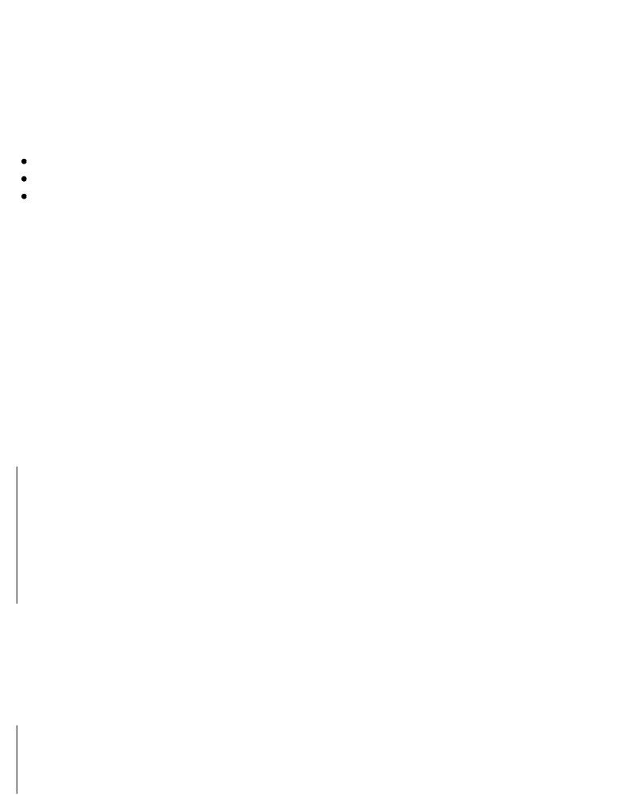
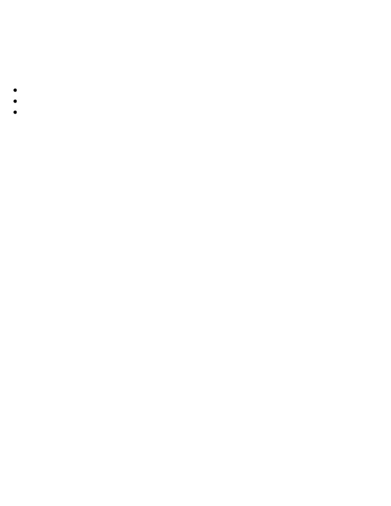
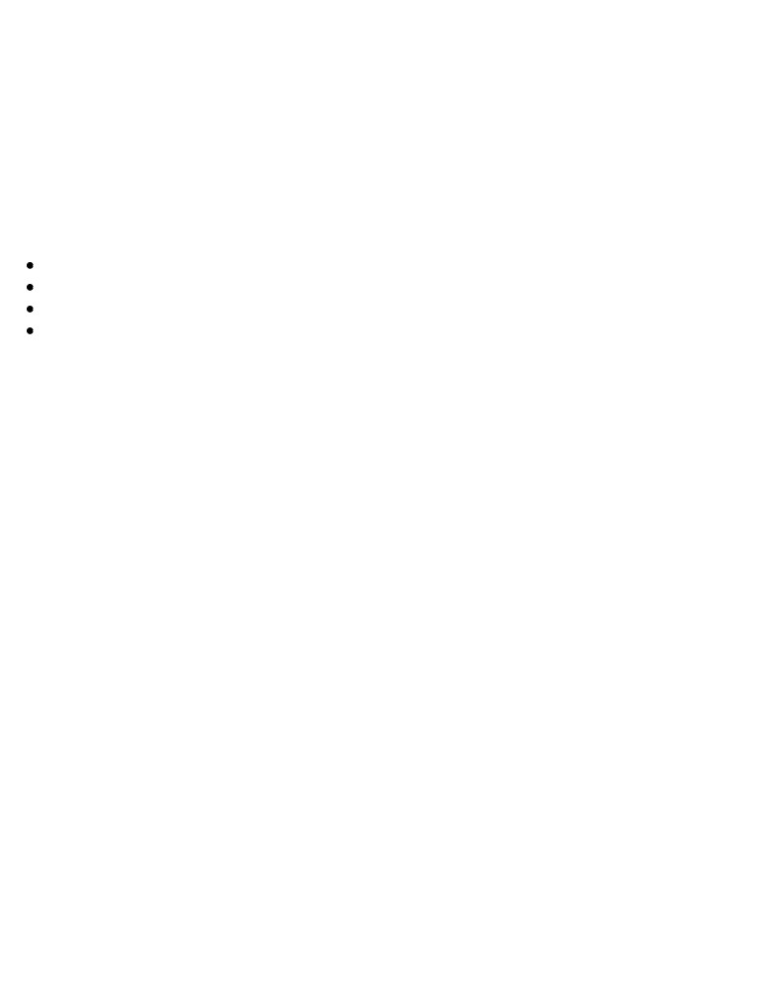

Godot Engine Game Development Projects
Build five cross-platform 2D and 3D games with Godot 3.0
Chris Bradfield
Godot Engine Game Development Projects
Copyright © 2018 Packt Publishing
All rights reserved. No part of this book may be reproduced, stored in a retrieval system, or transmitted in any form or by any means,
without the prior written permission of the publisher, except in the case of brief quotations embedded in critical articles or reviews.
Every effort has been made in the preparation of this book to ensure the accuracy of the information presented. However, the
information contained in this book is sold without warranty, either express or implied. Neither the author, nor Packt Publishing or its
dealers and distributors, will be held liable for any damages caused or alleged to have been caused directly or indirectly by this book.
Packt Publishing has endeavored to provide trademark information about all of the companies and products mentioned in this book by the
appropriate use of capitals. However, Packt Publishing cannot guarantee the accuracy of this information.
Acquisition Editor: Nigel Fernandes
Content Development Editor: Jason Pereira
Technical Editor: Rutuja Vaze
Copy Editor: Safis Editing
Project Coordinator: Sheejal Shah
Proofreader: Safis Editing
Indexer: Mariammal Chettiyar
Graphics: Disha Haria
Production Coordinator: Shraddha Falebhai
First published: June 2018
Production reference: 1270618
Published by Packt Publishing Ltd.
Livery Place
35 Livery Street
Birmingham
B3 2PB, UK.
ISBN 978-1-78883-150-5
To my son, Damian, and my daughter, Nadia, for being a constant source of love and pride.
To Priya for being a wonderful wife and mother.
Mapt is an online digital library that gives you full access to over 5,000 books and videos, as well as
industry leading tools to help you plan your personal development and advance your career. For more
information, please visit our website.
Why subscribe?
Spend less time learning and more time coding with practical eBooks and Videos from over
4,000 industry professionals
Improve your learning with Skill Plans built especially for you
Get a free eBook or video every month
Mapt is fully searchable
Copy and paste, print, and bookmark content
PacktPub.com
Did you know that Packt offers eBook versions of every book published, with PDF and ePub files
available? You can upgrade to the eBook version at www.PacktPub.com and as a print book customer, you
are entitled to a discount on the eBook copy. Get in touch with us at service@packtpub.com for more
details.
At www.PacktPub.com , you can also read a collection of free technical articles, sign up for a range of free
newsletters, and receive exclusive discounts and offers on Packt books and eBooks.
Foreword
In December 2014, Godot Engine 1.0 was released. With this first public release, the feature-packed,
free, and open source project delivered on its promise of a cross-platform, easy-to-use, and powerful
game creation tool.
I fell in love with Godot's high-level features and its permissive license, so I jumped right in, with no
prior game development experience. I felt a bit lost when I first opened the editor. I moved on to the
online documentation and started reading the well-written, step-by-step introduction. It covered basic
concepts, such as scenes and nodes and the GDScript programming language, and it showed how to
create a Pong clone, and that was basically it, at that time. There were some more tutorials on
advanced features, but there was a gap between them and the first guide. As a complete beginner, I
was stuck with the following question: how do I make my first game? Yet, I kept exploring, and with
the help of the Godot community, I could eventually build a simple 2D game with a local multiplayer.
What a feeling to see your first game on the screen!
Fast-forward to 3 years from then, Godot has grown a lot as a project, a community, and an engine.
Godot 3.0 was released in January 2018 after 18 months of work. It brought this free, community-
driven project to the level of its proprietary counterparts for 2D and 3D game development. The
beginner game developer that I was became a project manager, helping to organize and focus the
work of hundreds of contributors revolving around the engine. Working together with people from all
around the world improved all areas of the project: engine features, usability, localization, and, of
course, documentation.
Thanks to many dedicated contributors, Godot's documentation became one of the most accessible
technical resources that I have seen in free and open source projects. This is in great part thanks to
Chris Bradfield, the author of this book, who spent countless hours writing new material and
reviewing contributions to ensure their accuracy and quality of writing.
With this book, Chris goes one step further and provides a thorough answer to that question (how do I
make my first game?), shared by many Godot beginners. Indeed, he goes beyond that, as Godot Engine
Game Development Projects will lead you through the creation of five full-featured games—four in
2D and one in 3D. Each game introduces new features and concepts of Godot so that you can learn
how and when to use them in your own creations. Advanced users with experience in other game
development tools (or even Godot itself) will learn how to use Godot's unique architecture and
features to write better, more maintainable code through Chris' showcase of best practices.
From setting up Godot for the first time on your computer to publishing your own games to a wide
range of platforms, Chris runs you through all the steps in a concise yet thorough way. After the first
lesson, you should already be able to see how straightforward and accessible game development can
be with a tool such as Godot, even if you had no prior experience in game creation. You will also feel
a great sense of accomplishment seeing your own creation playing on your computer or smartphone,
with the power to implement new gameplay elements with just a few lines of code.
I wish you a lot of fun on your game development journey, and a warm welcome to the Godot
community.
Rémi Verschelde
Godot Engine - Project Manager
About the author
Chris Bradfield has been working in the internet technology space for more than 25 years. He has
worked in the online gaming space for a number of successful MMOs and social gaming publishers in
South Korea and the United States. Throughout his game industry career, he has served as a game
designer, developer, product manager, and business development executive.
In 2012, he discovered his love for teaching and founded KidsCanCode to provide programming
instruction and curriculum to middle and high school students. He is also a member of the Godot
Engine documentation team and works to provide learning resources for game development students
around the world.
I would like to expresses my gratitude to Sokoban Pack by Kenney Vleugels, Spaceship art founder skorpio, Sunny Land art by
Luis Zuno (@ansimuz), and 3D Minigolf tiles by YeOldeDM for their work.
About the reviewer
Max Hilbrunner is a Godot Engine contributor and CTO at aiPhilos and works on providing better
product search experiences using artificial intelligence, natural language processing, and machine
learning in cooperation with the German Research Center for Artificial Intelligence (DFKI).
Packt is searching for authors like you
If you're interested in becoming an author for Packt, please visit authors.packtpub.com and apply today.
We have worked with thousands of developers and tech professionals, just like you, to help them
share their insight with the global tech community. You can make a general application, apply for a
specific hot topic that we are recruiting an author for, or submit your own idea.
Table of Contents
Title Page
Copyright and Credits
Godot Engine Game Development Projects
Dedication
Why subscribe?
PacktPub.com
Foreword
Contributors
About the author
About the reviewer
Packt is searching for authors like you
Preface
Who this book is for
What this book covers
To get the most out of this book
Download the example code files
Download the color images
Conventions used
Get in touch
Reviews
1. Introduction
General advice
What is a game engine?
What is Godot?
Downloading Godot
Alternate installation methods
Overview of the Godot UI
Project Manager
Choosing filenames
Editor window
About nodes and scenes
Scripting in Godot
About GDScript
Summary
2.
Coin Dash
Project setup
Vectors and 2D coordinate systems
Vectors
Pixel rendering
Part 1 – Player scene
Creating the scene
Sprite animation
Collision shape
Scripting the Player
Moving the Player
About delta
Choosing animations
Starting and Ending the Player's Movement
Preparing for collisions
Part 2 – Coin scene
Node setup
Using groups
Script
Part 3 – Main scene
Node setup
Main script
Initializing
Starting a new game
Checking for remaining coins
Part 4 – User Interface
Node setup
Anchors and margins
Message label
Score and time display
Containers
Updating UI via GDScript
Using buttons
Game over
Adding the HUD to Main
Part 5 – Finishing up
Visual effects
What is a tween?
Sound
Powerups
Coin animation
Obstacles
Summary
3.
Escape the Maze
Project setup
Project organization
Inheritance
Character scene
Animations
Collision detection
Character script
Player scene
Player script
Enemy scene
Optional – turn-based movement
Creating the level
Items
TileSets
Creating a TileSet
TileMaps
Level script
Adding more levels
Game flow
Start and end screens
Globals
Global script
Score
Saving the High Score
Reading and writing files
Finishing touches
Death animation
Sound effects
Summary
4.
Space Rocks
Project setup
Rigid body physics
Player ship
Body setup and physics
State machines
Controls
Screen wrap
Shooting
Bullet scene
Firing bullets
Rocks
Scene setup
Variable size
Instancing
Exploding rocks
Explosion scene
Adding to Rock
Spawning smaller rocks
UI
Layout
UI functions
Main scene code
Player code
Game over
Detecting collisions between physics bodies
Pausing the game
Enemies
Following a path
Enemy scene
Moving the Enemy
Spawning enemies
Enemy shooting and collisions
Additional features
Sound/music
Particles
Enemy trail
Player shield
Summary
5.
Jungle Jump (Platformer)
Project setup
Introducing kinematic bodies
Collision response
move_and_collide
move_and_slide
Player scene
Collision Layer/Mask
Sprite
Collision shape
Shapes
Animations
Finishing up the scene tree
Player states
Player script
Player movement
Player health
Collectible items
Collectible scene
Collectible script
Designing the level
TileSet configuration
Base-level setup
Designing the first level
Scrolling background
Dangerous objects
About slide collisions
Enemies
Scene setup
Script
Damaging the enemy
HUD
Scene setup
Script
Attaching the HUD
Title screen
Scene setup
Main scene
Level transitions
Door scene
Finishing touches
Sound effects
Infinite falling
Double jump
Dust particles
Crouching state
Climbing ladders
Player code
Level code
Moving platforms
6.
3D Minigolf
Introduction to 3D
Orienting in 3D space
Godot's 3D editor
Adding 3D objects
Global versus Local Space
Transforms
Transforms in code
Meshes
Importing meshes
Primitives
Multiple meshes
Cameras
Project setup
Creating the course
GridMaps
Making a MeshLibrary
Drawing the course
WorldEnvironment
Finishing the scene
Ball
Testing the ball
Improving collisions
UI
Aiming arrow
UI display
Scripts
UI
Main
Ball
Hole
Testing it out
Improving aiming – option 1
Improving aiming – option 2
Camera improvements
Multiple cameras
Orbiting camera
Creating a gimbal
Tracking camera
Visual effects
SpatialMaterials
Environment options
Lighting
Summary
7.
Additional Topics
Using Godot's documentation
Reading the API documentation
Exporting projects
Getting the export templates
Export presets
Exporting
Example – Coin Dash for Android
Modifying the game
Preparing your system
Exporting
Shaders
Creating a shader
Learning more
Using other languages
C#
VisualScript
Native code – GDNative
Language bindings
Asset library
Contributing to Godot
Contributing to the engine
Writing documentation
Donations
Getting help – community resources
GitHub
Godot Q and A
Discord / Forum
Summary
Other Books You May Enjoy
Leave a review - let other readers know what you think
Preface
This book is an introduction to the Godot game engine and its new version, 3.0. Godot 3.0 has a large
number of new features and capabilities that make it a strong alternative to more expensive
commercial game engines. For beginners, it offers a friendly way to learn game development
techniques. For more experienced developers, Godot is a powerful, customizable tool for bringing
visions to life.
This book will have a project-based approach. It consists of five projects that will help developers
achieve a sound understanding of how to use the Godot engine to build games.
Who this book is for
This book is for anyone who wants to learn how to make games using a modern game engine. New
users and experienced developers alike will find it a helpful resource. Some programming experience
is recommended.
What this book covers
This book is a project-based introduction to using the Godot game engine. Each of the five game
projects builds on the concepts learned in the previous project.
Chapter 1, Introduction, introduces the concept of game engines in general and Godot specifically,
including how to download Godot and install it on your computer.
Chapter 2, Coin Dash, deals with a small game that demonstrates how to create scenes and work with
Godot's node architecture.
Chapter 3, Escape the Maze, entails a project based on a top-down maze game that will show how to
use Godot's powerful inheritance features and nodes for tile maps and sprite animation.
Chapter 4, Space Rocks, demonstrates working with physics bodies to create an Asteroids-style space
game.
Chapter 5, Jungle Jump, involves a side-scrolling platform game in the spirit of Super Mario
Brothers. You'll learn about kinematic bodies, animation states, and parallax backgrounds.
Chapter 6, 3D Minigolf, extends the previous concepts into three dimensions. You'll work with meshes,
lighting, and camera control.
Chapter 7, Additional Topics, covers even more topics to explore once you've mastered the material in
the previous chapters.
To get the most out of this book
To best understand the example code in this book, you should have a general knowledge of
programming, preferably with a modern, dynamically-typed language, such as Python or JavaScript. If
you're new to programming entirely, you may wish to review a beginner Python tutorial before diving
into the game projects in this book.
Godot will run on any relatively modern PC running Windows, macOS, or Linux operating systems.
Your video card must support OpenGL ES 3.0.
Download the example code files
You can download the example code files for this book from your account at www.packtpub.com . If you
emailed directly to you.
You can download the code files by following these steps:
2. Select the SUPPORT tab.
3. Click on Code Downloads & Errata.
4. Enter the name of the book in the Search box and follow the onscreen instructions.
Once the file is downloaded, please make sure that you unzip or extract the folder using the latest
version of:
WinRAR/7-Zip for Windows
Zipeg/iZip/UnRarX for Mac
7-Zip/PeaZip for Linux
The code bundle for the book is also hosted on GitHub at https://github.com/PacktPublishing/Godot-Game-Eng
ine-Projects/issues. In case there's an update to the code, it will be updated on the existing GitHub
repository.
We also have other code bundles from our rich catalog of books and videos available at https://github.
com/PacktPublishing/. Check them out!
Download the color images
We also provide a PDF file that has color images of the screenshots/diagrams used in this book. You
can download it here: https://www.packtpub.com/sites/default/files/downloads/GodotEngineGameDevelopmentProjects
_ColorImages.pdf.
Conventions used
There are a number of text conventions used throughout this book.
CodeInText: Indicates code words in text, database table names, folder names, filenames, file
extensions, pathnames, dummy URLs, user input, and Twitter handles. Here is an example: "Mount the
downloaded WebStorm-10*.dmg disk image file as another disk in your system."
A block of code is set as follows:
extends Area2D
export (int) var speed
var velocity = Vector2()
var screensize = Vector2(480, 720)
Any command-line input or output is written as follows:
adb install dodge.apk
Bold: Indicates a new term, an important word, or words that you see onscreen. For example, words
in menus or dialog boxes appear in the text like this. Here is an example: "The main portion of the
editor window is the Viewport."
Warnings or important notes appear like this.
Tips and tricks appear like this.
Get in touch
Feedback from our readers is always welcome.
General feedback: Email feedback@packtpub.com and mention the book title in the subject of your
message. If you have questions about any aspect of this book, please email us at questions@packtpub.com.
Errata: Although we have taken every care to ensure the accuracy of our content, mistakes do
happen. If you have found a mistake in this book, we would be grateful if you would report this to us.
link, and entering the details.
Piracy: If you come across any illegal copies of our works in any form on the Internet, we would be
grateful if you would provide us with the location address or website name. Please contact us at
copyright@packtpub.com with a link to the material.
If you are interested in becoming an author: If there is a topic that you have expertise in and you
Reviews
Please leave a review. Once you have read and used this book, why not leave a review on the site
that you purchased it from? Potential readers can then see and use your unbiased opinion to make
purchase decisions, we at Packt can understand what you think about our products, and our authors
can see your feedback on their book. Thank you!
For more information about Packt, please visit packtpub.com .
Introduction
Whether it's your desired career or a recreational hobby, game development is a fun and rewarding
endeavor. There never been a better time to get started in game development. Modern programming
languages and tools have made it easier than ever to build high- quality games and distribute them to
the world. If you're reading this book, then you've set your feet on the path to making the game of your
dreams.
This book is an introduction to the Godot game engine and its new 3.0 version, which was released in
early 2018. Godot 3.0 has a large number of new features and capabilities that make it a strong
alternative to expensive commercial game engines. For beginners, it offers a friendly way to learn
fundamental game development techniques. For more experienced developers, Godot is a powerful,
customizable, and open tool for bringing your visions to life.
This book takes a project-based approach that will introduce you to the fundamentals of the engine. It
consists of five games that are designed to help you achieve a sound understanding of game
development concepts and how they're applied in Godot. Along the way, you will learn how Godot
works and absorb important techniques that you can apply to your projects.
General advice
This section contains some general advice to readers, based on the author's experience as a teacher
and lecturer. Keep these tips in mind as you work through the book, especially if you're very new to
programming.
Try to follow the projects in the book in order. Later chapters may build on topics that were
introduced in earlier chapters, where they are explained in more detail. When you encounter
something that you don't remember, go back and review that topic in the earlier chapter. No one is
timing you, and there's no prize for finishing the book quickly.
There is a lot of material to absorb here. Don't feel discouraged if you don't get it at first. The goal is
not to become an expert in game development overnight—that's just not possible. Repetition is the key
to learning complex topics; the more you work with Godot's features, the more familiar and easy they
will start to seem. Try looking back at Chapter 2, Coin Dash, when you finish Chapter 7, Additional
Topics. You'll be surprised at how much more you'll understand compared to the first time you read it.
If you're using the PDF version of this book, resist the temptation to copy and paste the code. Typing
the code yourself will engage more of your brain. It's similar to how taking notes during a lecture
helps you learn better than just listening, even if you never read the notes. If you're a slow typist, it
will also help you work on your typing speed. In a nutshell: you're a programmer, so get used to
typing code!
One of the biggest mistakes that new game developers make is taking on a bigger project than they can
handle. It is very important to keep the scope of your project as small as possible when starting out.
You will be much more successful (and learn more) if you finish two or three small games than if you
have a large, incomplete project that has grown beyond your ability to manage.
You'll notice that the five games in this book follow this strategy very strictly. They are all small in
scope, both for practical reasons—to fit reasonably into book-sized lessons—but also to remain
focused on teaching you the basics. As you build them, you will likely find yourself thinking of
additional features and gameplay elements right away. What if the spaceship had upgrades? What if
the character could do wall jumps?
Ideas are great, but if you haven't finished the basic project yet, write them down and save them for
later. Don't let yourself be sidetracked by one cool idea after another. Developers call this feature
creep, and it's a trap that has led to many an unfinished game. Don't fall victim to it.
Finally, don't forget to take a break now and again. You shouldn't try and power through the whole
book in just a few sittings. After each new concept, and especially after each chapter, give yourself
time to absorb the new information before you dive into the next one. You'll find that you not only
retain more information, but you'll probably enjoy the process more.
What is a game engine?
Game development is complex and involves a wide variety of knowledge and skills. In order to build
a modern game, you need a great deal of underlying technology before you can make the actual game
itself. Imagine that you had to build your own computer and write your own operating system before
you could even start programming. Game development would be a lot like that if you truly had to start
from scratch and build everything you needed.
In addition, there are a number of common needs that every game has. For example, no matter what
the game is, it's going to need to draw things on the screen. If the code to do that has already been
written, it makes more sense to reuse it than to create it all over again for every game. That's where
game frameworks and engines come in.
A game framework is a set of libraries with helper code that assists in building the foundational
parts of a game. It doesn't necessarily provide all the pieces, and you may still have to write a great
deal of code to tie everything together. Because of this, building a game with a game framework can
take more time than one built with a full game engine.
A game engine is a collection of tools and technologies designed to ease the process of game-making
by removing the need to reinvent the wheel for each new game project. It provides a framework of
commonly needed functionality that often needs a significant investment in time to develop.
Here is a list of some of the main features a game engine will provide:
Rendering (2D and 3D): Rendering is the process of displaying your game on the player's
screen. A good rendering pipeline must take into account modern GPU support, high-resolution
displays, and effects like lighting, perspective, and viewports, while maintaining a very high
frame rate.
Physics: While a very common requirement, building a robust and accurate physics engine is a
monumental task. Most games require some sort of collision detection and response system, and
many need physics simulation, but few developers want to take on the task of writing one,
especially if they have ever tried to do so.
Platform support: In today's market, most developers want to be able to release their games on
multiple platforms, such as consoles, mobile, PC, and/or the web. A game engine provides a
unified exporting process to publish on multiple platforms without needing to rewrite game code
or support multiple versions.
Common development environment: By using the same unified interface to make multiple
games, you don't have to re learn a new workflow every time you start a new project.
In addition, there will be tools to assist with features such as networking, easing the process of
working with images and sound, animations, debugging, level creation, and many more. Often, game
engines will include the ability to import content from other tools such as those used to create
animations or 3D models.
Using a game engine allows the developer to focus on building their game, rather than creating all of
the underlying framework needed to make it work. For small or independent developers, this can
mean the difference between releasing a game after one year of development instead of three, or even
never at all.
There are dozens of popular game engines on the market today, such as Unity, Unreal Engine, and
GameMaker Studio, just to name a few. An important fact to be aware of is that the majority of
popular game engines are commercial products. They may or may not require any financial investment
to get started, but they will require some kind of licensing and/or royalty payments if your game
makes money. Whatever engine you choose, you need to carefully read the user agreement and make
sure you understand what you are and are not allowed to with the engine, and what hidden costs, if
any, you may be responsible for.
On the other hand, there are some engines which are non-commercial and open source, such as the
Godot game engine, which is what this book is all about.
What is Godot?
Godot is a fully featured modern game engine, providing all of the features described in the previous
section and more. It is also completely free and open source, released under the very permissive MIT
license. This means there are no fees, no hidden costs, and no royalties to pay on your game's
revenue. Everything you make with Godot 100% belongs to you, which is not the case with many
commercial game engines that require an ongoing contractual relationship. For many developers, this
is very appealing.
If you're not familiar with the concept of open source, community-driven development, this may seem
strange to you. However, much like the Linux kernel, Firefox browser, and many other very well-
known pieces of software, Godot is not developed by a company as a commercial product. Instead, a
dedicated community of passionate developers donate their time and expertise to building the engine,
testing and fixing bugs, producing documentation, and more.
As a game developer, the benefits of using Godot are vast. Because it is unencumbered by
commercial licensing, you have complete control over exactly how and where your game is
distributed. Many commercial game engines restrict the types of projects you can make, or require a
much more expensive license to build games in certain categories, such as gambling.
Godot's open source nature also means there is a level of transparency that doesn't exist with
commercial game engines. For example, if you find that a particular engine feature doesn't quite meet
your needs, you are free to modify the engine itself and add the new features you need, no permission
required. This can also be very helpful when debugging a large project, because you have full access
to the engine's internal workings.
It also means that you can directly contribute to Godot's future. See Chapter 7, Additional Topics, for
more information about how you can get involved with Godot development.
Downloading Godot
Download. This book is written for version 3.0. If the version you download has another number at
the end (like 3.0.3), that's fine—this just means that it includes updates to version 3.0 that fix bugs or
other issues.
A version 3.1 release is currently in development and may have been released by the time you read this book. This
version may or may not include changes that are incompatible with the code in this book. Check the GitHub
On the download page, there are a few options that bear explaining. First, 32-bit versus 64-bit: this
option depends on your operating system and your computer's processor. If you're not sure, you should
choose the 64-bit version. You will also see a Mono Version. This is a version specially built to be
used with the C# programming language. Don't download this one unless you plan to use C# with
Godot. At the time of writing, C# support is still experimental, and is not recommended for beginners.
Double-click on the file you downloaded to unzip it, and you'll have the Godot application.
Optionally, you can drag it to your Programs or Applications folder, if you have one. Double-click the
application to launch it and you'll see Godot's Project Manager window.
Alternate installation methods
There are a few other ways to get Godot on your computer besides downloading it from the Godot
website. Note that there is no difference in functionality when installed this way. The following are
merely alternatives for downloading the application:
Steam: If you have an account on Steam, you can install Godot via the Steam desktop
application. Search for Godot in the Steam store and follow the instructions to install it. You can
launch Godot from the Steam application and it will even track your playtime.
Package Managers: If you're using one of the following operating system package managers,
you can install Godot via its normal install process. See the documentation for your package
manager for details. Godot is available in these package managers:
Homebrew (macOS)
Scoop (Windows)
Snap (Linux)
Overview of the Godot UI
Like most game engines, Godot has a unified development environment. This means that you use the
same interface to work on all of the aspects of your game—code, visuals, audio, and so on. This
section is an introduction to the interface and its parts. Take note of the terminology used here; it will
be used throughout this book when referring to actions you'll take in the editor window.
Project Manager
The Project Manager is the first window you'll see when you open Godot:
In this window, you can see a list of your existing Godot projects. You can choose an existing project
and click Run to play the game or click Edit to work on it in the Godot Editor (refer to the following
screenshot). You can also create a new project by clicking New Project:
Here, you can give the project a name and create a folder to store it in. Always try to choose a name
that describes the project. Also keep in mind that different operating systems handle capitalization
and spaces in filenames differently. It's a good idea to stick to lowercase and use underscores, _,
instead of spaces for maximum compatibility.
Note the warning message—in Godot, each project is stored as a separate folder on the computer. All
the files that the project uses are in this folder. Nothing outside of this project folder will be
accessible in the game, so you need to put any images, sounds, models, or other data into the project
folder. This makes it convenient to share Godot projects; you only need to zip the project folder and
you can be confident that another Godot user will be able to open it and not be missing any necessary
Choosing filenames
When you're naming your new project, there are a few simple rules you should try and follow that
may save you some trouble in the future. Give your project a name that describes what it is—Wizard
Battle Arena is a much better project name than Game #2. In the future, you'll never be able to
remember which game #2 was, so be as descriptive as possible.
You should also think about how you name your project folder and the files in it. Some operating
systems are case-sensitive and distinguish between My_Game and my_game, while others do not. This can
lead to problems if you move your project from one computer to another. For this reason, many
programmers develop a standardized naming scheme for their projects, for example: No spaces in
filenames, use "_" between words. Regardless of what naming scheme you adopt, the most important
thing is to be consistent.
Once you've created the project folder, the Create & Edit button will open the new project in
the Editor window.
Try it now: create a project called test_project.
If you're using a version of the Windows operating system, you'll also see a console window open when you run
Godot. In this window, you can see warnings and errors produced by the engine and/or your project. This window
doesn't appear under macOS or Linux, but you can see the console output if you launch the application from the
command line using a Terminal program.
Editor window
The following is a screenshot of the main Godot editor window. This is where you will spend most of
your time when building projects in Godot. The editor interface is divided into several sections, each
offering different functionality. The specific terminology for each section is described as follows:
Godot Editor Window
The main portion of the editor window is the Viewport. This is where you'll see parts of your game as
you're working on them.
In the upper-left corner is the Main menus, where you can save and load files, edit project settings,
and get help.
In the center at the top is a list of the Workspaces you can switch between when working on different
parts of your game. You can switch between 2D and 3D mode, as well Script mode, where you can
edit your game's code. The AssetLib is a place where you can download add-ons and example
projects. See Chapter 7, Additional Topics, for more information on using the AssetLib. Refer to the
following screenshot:
The following screenshot shows the Workspaces buttons on the toolbar. The icons in the toolbar will
change based on what kind of object you are editing. So will the items in the Bottom panel, which
will open various smaller windows for accessing specific information such as debugging, audio
settings, and more:
The buttons in the upper-right Playtest area are for launching the game and interacting with it when it's
running:
Finally, on the left and right sides are the Docks you can use to view and select game items and set
their properties. The left-hand dock contains the FileSystem tab:
All of the files inside the project folder are shown here, and you can click on folders to open them
and see what they contain. All resources in your project will be located relative to res://, which is the
project's root folder. For example, a file path might look like this: res://player/Player.tscn.
In the right-hand dock, you can see several tabs. The Scene tab shows the current scene you are
working on in the Viewport. In the Inspector tab below it, you can see and adjust the properties of any
object you select. Refer to the following screenshot:
Selecting the Import tab and clicking on a file in the FileSystem tab lets you adjust how Godot
imports resources like textures, meshes, and sounds, as shown in the following screenshot:
As you work through the game projects in this book, you'll learn about the functionality of these items
and become familiar with navigating the editor interface. However, there are a few other concepts
you need to know about before getting started.
About nodes and scenes
Nodes are the basic building blocks for creating games in Godot. A node is an object that can
represent a variety of specialized game functions. A given type of node might display graphics, play
an animation, or represent a 3D model of an object. The node also contains a collection of properties,
allowing you to customize its behavior. Which nodes you add to your project depends on what
functionality you need. It's a modular system designed to give you flexibility in building your game
objects.
In your project, the nodes you add are organized into a tree structure. In a tree, nodes are added
as children of other nodes. A particular node can have any number of children, but only
one parent node. When a group of nodes are collected into a tree, it is called a scene, and the tree is
referred to as the scene tree:
Scenes in Godot are typically used to create and organize the various game objects in your project.
You might have a player scene that contains all the nodes and scripts that make the player's character
work. Then, you might create another scene that defines the game's map: the obstacles and items that
the player must navigate through. You can then combine these various scenes into the final game
using instancing, which you'll learn about later.
While nodes come with a variety of properties and functions, any node's behavior and capabilities
can also be extended by attaching a script to the node. This allows you to write code that makes the
node do more than it can in its default state. For example, you can add a Sprite node to your scene to
display an image, but if you want that image to move or disappear when clicked, you'll need to add a
script to create that behavior.
Scripting in Godot
At the time of writing, Godot provides three official languages for scripting nodes: GDScript,
VisualScript, and C#. GDScript is the dedicated built-in language, providing the tightest integration
with the engine, and is the most straightforward to use. VisualScript is still very new and in the
testing stage, and should be avoided until you have a good understanding of Godot's workings. For
most projects, C# is best reserved for those portions of the game where there is a specific
performance need; most Godot projects will not need this level of additional performance. For those
that do, Godot gives the flexibility to use a combination of GDScript and C# where you need them.
In addition to the three supported scripting languages, Godot itself is written in C++ and you can get
even more performance and control by extending the engine's functionality directly. See Chapter 7,
Additional Topics, for information on using other languages and extending the engine.
All of the games in this book use GDScript. For the majority of projects, GDScript is the best choice
of language. It is very tightly integrated with Godot's Application Programming Interface (API),
and is designed for rapid development.
About GDScript
GDScript's syntax is very closely modeled on the Python language. If you are familiar with Python
already, you will find GDScript very familiar. If you are comfortable with another dynamic language,
such as JavaScript, you should find it relatively easy to learn. Python is very often recommended as a
good beginner language, and GDScript shares that user-friendliness.
This book assumes you have at least some programming experience already. If you've never coded
before, you may find it a little more difficult. Learning a game engine is a large task on its own;
learning to code at the same time means you've taken on a major challenge. If you find yourself
struggling with the code in this book, you may find that working through an introductory Python lesson
will help you grasp the basics.
Like Python, GDScript is a dynamically typed language, meaning you do not need to declare a
variable's type when creating it, and it uses whitespace (indentation) to denote code blocks. Overall,
the result of using GDScript for your game's logic is that you write less code, which means faster
development and fewer mistakes to fix.
To give you an idea of what GDScript looks like, here is a small script that causes a sprite to move
from left to right across the screen at a given speed:
extends Sprite
var speed = 200
func _ready():
position = Vector2(100, 100)
func _process(delta):
position.x += speed * delta
if position.x > 500:
position.x = 0
Don't worry if this doesn't make sense to you yet. In the following chapters, you'll be writing lots of
code, which will be accompanied by explanations of how it all works.
Summary
In this chapter, you were introduced to the concept of a game engine in general and to Godot in
particular. Most importantly, you downloaded Godot and launched it!
You learned some important vocabulary that will be used throughout this book when referring to
various parts of the Godot editor window. You also learned about the concepts of nodes and scenes,
which are the fundamental building blocks of Godot.
You also received some advice on how to approach the projects in this book and game development
in general. If you ever find yourself getting frustrated as you are working through this book, go back
and reread the General advice section. There's a lot to learn, and it's okay if it doesn't all make sense
the first time. You'll make five different games over the course of this book, and each one will help
you understand things a little bit more.
You're ready to move on to Chapter 2, Coin Dash, where you'll start building your first game in Godot.
Coin Dash
This first project will guide you through making your first Godot Engine project. You will learn how
the Godot editor works, how to structure a project, and how to build a small 2D game.
Why 2D? In a nutshell, 3D games are much more complex than 2D ones, while many of the underlying game
engine features you'll need to know are the same. You should stick to 2D until you have a good understanding of
Godot's game development process. At that point, the jump to 3D will be much easier. You'll get an introduction to
3D in this book's fifth and final project.
Important—don't skip this chapter, even if you aren't a complete newcomer to game development.
While you may already understand many of the underlying concepts, this project will introduce a
number of fundamental Godot features and design paradigms that you'll need to know going forward.
You'll build on these concepts as you develop more complex projects.
The game in this chapter is called Coin Dash. Your character must move around the screen, collecting
as many coins as possible while racing against the clock. When you're finished, the game will look
like this:
Project setup
Launch Godot and create a new project, making sure to use the Create Folder button to ensure that this
project's files will be kept separate from other projects. You can download a Zip file of the art and
sounds (collectively known as assets) for the game here, https://github.com/PacktPublishing/Godot-Game-Engi
ne-Projects/releases.
Unzip this file in your new project folder.
In this project, you will make three independent scenes: Player, Coin, and HUD, which will all be
combined into the game's Main scene. In a larger project, it might be useful to make separate folders to
hold each scene's assets and scripts, but for this relatively small game, you can save your scenes and
scripts in the root folder, which is referred to as res:// (res is short for resource). All resources in
your project will be located relative to the res:// folder. You can see your project folders in the
FileSystem dock in the upper-left corner:
For example, the images for the coin would be located in res://assets/coin/.
This game will use portrait mode, so you need to adjust the size of the game window. Click on
the Project menu and select Project Settings, as shown in the following screenshot:
Look for the Display/Window section and set Width to 480 and Height to 720. Also in this section, set
the Stretch/Mode to 2D and the Aspect to keep. This will ensure that if the user resizes the game
window, everything will scale appropriately and not become stretched or deformed. If you like, you
can also uncheck the box for Resizable, to prevent the window from being resized entirely.
Vectors and 2D coordinate systems
Note: This section is a very brief overview of 2D coordinate systems and does not delve very deeply
into vector math. It is intended as a high-level overview of how such topics apply to game
development in Godot. Vector math is an essential tool in game development, so if you need a broader
understanding of the topic, see Khan Academy's Linear Algebra series (https://www.khanacademy.org/math/l
inear-algebra).
When working in 2D, you'll be using Cartesian coordinates to identify locations in space. A particular
position in 2D space is written as a pair of values, such as (4,3), representing the position along the x
and y axes, respectively. Any position in the 2D plane can be described in this way.
In 2D space, Godot follows the common computer graphics practice of orienting the x axis to the
right, and the y axis down:
If you're new to computer graphics or game development, it might seem odd that the positive y axis points
downwards instead of upwards, as you likely learned in math class. However, this orientation is very common in
computer graphics applications.
Vectors
You can also think of the position (4, 3) as an offset from the (0, 0) point, or origin. Imagine an arrow
pointing from the origin to the point:
This arrow is a vector. It represents a great deal of useful information including the point's
location, (4, 3), its length, m, and its angle from the x-axis, θ. Altogether, this is a position vector, in
other words, it describes a position in space. Vectors can also represent movement, acceleration, or
any other quantity that has an x and a y component.
In Godot, vectors (Vector2 for 2D or Vector3 for 3D) are widely used, and you'll use them in the course
of building the projects in this book.
Pixel rendering
Vector coordinates in Godot are floating point numbers, not integers. This means a Vector2 could have
a fractional value, such as (1.5, 1.5). Since objects can't be drawn at half pixels, this can cause visual
problems for pixel art games where you want to ensure that all the pixels of the textures are drawn.
To address this, open Project | Project Settings and find the Rendering/Quality section in the sidebar
and enable Use Pixel Snap, as shown in the following screenshot:
If you're using 2D pixel art in your game, it's a good idea to always enable this setting when you start
your project. This setting has no effect in 3D games.
Part 1 - Player scene
The first scene you'll make defines the Player object. One of the benefits of creating a separate player
scene is that you can test it independently, even before you've created the other parts of the game. This
separation of game objects will become more and more helpful as your projects grow in size and
complexity. Keeping individual game objects separate from each other makes them easier to
troubleshoot, modify, and even replace entirely without affecting other parts of the game. It also
makes your player reusable—you can drop the player scene into an entirely different game and it will
work just the same.
The player scene will display your character and its animations, respond to user input by moving the
character accordingly, and detect collisions with other objects in the game.
Creating the scene
Start by clicking the Add/Create a New Node button and selecting an Area2D. Then, click on its name
and change it to Player. Click Scene | Save Scene to save the scene. This is the scene's root or top-
level node. You'll add more functionality to the Player by adding children to this node:
Before adding any children, it's a good idea to make sure you don't accidentally move or resize them
by clicking on them. Select the Player node and click the icon next to the lock:
The tooltip will say Make sure the object's children are not selectable, as shown in the preceding
screenshot.
It's a good idea to always do this when creating a new scene. If a body's collision shape or sprite becomes offset
or scaled, it can cause unexpected errors and be difficult to fix. With this option, the node and all of its children
will always move together.
Sprite animation
With Area2D, you can detect when other objects overlap or run into the player, but Area2D doesn't have an
appearance on its own, so click on the Player node and add an AnimatedSprite node as a child. The
AnimatedSprite will handle the appearance and animations for your player. Note that there is a warning
symbol next to the node. An AnimatedSprite requires a SpriteFrames resource, which contains the
animation(s) it can display. To create one, find the Frames property in the Inspector and click <null> |
New SpriteFrames:
Next, in the same location, click <SpriteFrames> to open the SpriteFrames panel:
On the left is a list of animations. Click the default one and rename it to run. Then, click the
Add button and create a second animation named idle and a third named hurt.
In the FileSystem dock on the left, find the run, idle, and hurt player images and drag them into the
corresponding animations:
Each animation has a default speed setting of 5 frames per second. This is a little too slow, so click
on each of the animations and set the Speed (FPS) setting to 8. In the Inspector, check On next to the
Playing property and choose an Animation to see the animations in action:
Later, you'll write code to select between these animations, depending on what the player is doing.
But first, you need to finish setting up the player's nodes.
Collision shape
When using Area2D, or one of the other collision objects in Godot, it needs to have a shape defined, or
it can't detect collisions. A collision shape defines the region that the object occupies and is used to
detect overlaps and/or collisions. Shapes are defined by Shape2D, and include rectangles, circles,
polygons, and other types of shapes.
For convenience, when you need to add a shape to an area or physics body, you can add a
CollisionShape2D as a child. You then select the type of shape you want and you can edit its size in the
editor.
Add a CollisionShape2D as a child of Player (make sure you don't add it as a child of the AnimatedSprite).
This will allow you to determine the player's hitbox, or the bounds of its collision area. In the
Inspector, next to Shape, click <null> and choose New RectangleShape2D. Adjust the shape's size to
cover the sprite:
Be careful not to scale the shape's outline! Only use the size handles (red) to adjust the shape! Collisions will not
work properly with a scaled collision shape.
You may have noticed that the collision shape is not centered on the sprite. That is because the sprites
themselves are not centered vertically. We can fix this by adding a small offset to the AnimatedSprite.
Click on the node and look for the Offset property in the Inspector. Set it to (0, -5).
When you're finished, your Player scene should look like this:
Scripting the Player
Now, you're ready to add a script. Scripts allow you to add additional functionality that isn't provided
by the built-in nodes. Click the Player node and click the Add Script button:
In the Script Settings window, you can leave the default settings as they are. If you've remembered to
save the scene (see the preceding screenshot), the script will automatically be named to match the
scene's name. Click Create and you'll be taken to the script window. Your script will contain some
default comments and hints. You can remove the comments (lines starting with #). Refer to the
following code snippet:
extends Area2D
# class member variables go here, for example:
# var a = 2
# var b = "textvar"
func _ready():
# Called every time the node is added to the scene.
# Initialization here
pass
#func _process(delta):
# # Called every frame. Delta is time since last frame.
# # Update game logic here.
# pass
The first line of every script will describe what type of node it is attached to. Next, you'll define your
class variables:
extends Area2D
export (int) var speed
var velocity = Vector2()
var screensize = Vector2(480, 720)
Using the export keyword on the speed variable allows you to set its value in the Inspector, as well as
letting the Inspector know what type of data the variable should contain. This can be very handy for
values that you want to be able to adjust, just like you adjust a node's built-in properties. Click on
the Player node and set the Speed property to 350, as shown in the following screenshot:
velocity will contain the character's current movement speed and direction, and screensize will be used
to set the limits of the player's movement. Later, the game's main scene will set this variable, but for
now you will set it manually so you can test.

Moving the Player
Next, you'll use the _process() function to define what the player will do. The _process() function is
called on every frame, so you'll use it to update elements of your game that you expect to be changing
often. You need the player to do three things:
Check for keyboard input
Move in the given direction
Play the appropriate animation
First, you need to check the inputs. For this game, you have four directional inputs to check (the four
arrow keys). Input actions are defined in the project settings under the Input Map tab. In this tab, you
can define custom events and assign different keys, mouse actions, or other inputs to them. By default,
Godot has events assigned to the keyboard arrows, so you can use them for this project.
You can detect whether an input is pressed using Input.is_action_pressed(), which returns true if the key
is held down and false if it is not. Combining the states of all four buttons will give you the resultant
direction of movement. For example, if you hold right and down at the same time, the resulting velocity
vector will be (1, 1). In this case, since we’re adding a horizontal and a vertical movement together,
the player would move faster than if they just moved horizontally.
You can prevent that by normalizing the velocity, which means setting its length to 1, then multiplying
it by the desired speed:
func get_input():
velocity = Vector2()
if Input.is_action_pressed("ui_left"):
velocity.x -= 1
if Input.is_action_pressed("ui_right"):
velocity.x += 1
if Input.is_action_pressed("ui_up"):
velocity.y -= 1
if Input.is_action_pressed("ui_down"):
velocity.y += 1
if velocity.length() > 0:
velocity = velocity.normalized() * speed
By grouping all of this code together in a get_input() function, you make it easier to change things later.
For example, you could decide to change to an analog joystick or other type of controller. Call this
function from _process() and then change the player's position by the resulting velocity. To prevent the
player from leaving the screen, you can use the clamp() function to limit the position to a minimum and
maximum value:
func _process(delta):
get_input()
position += velocity * delta
position.x = clamp(position.x, 0, screensize.x)
position.y = clamp(position.y, 0, screensize.y)
Click Play the Edited Scene (F6) and confirm that you can move the player around the screen in all
directions.
About delta
The _process() function includes a parameter called delta that is then multiplied by the velocity. What is
delta?
The game engine attempts to run at a consistent 60 frames per second. However, this can change due
to computer slowdowns, either in Godot or from the computer itself. If the frame rate is not
consistent, then it will affect the movement of your game objects. For example, consider an object set
to move 10 pixels every frame. If everything is running smoothly, this will translate to moving 600
pixels in one second. However, if some of those frames take longer, then there may only have been 50
frames in that second, so the object only moved 500 pixels.
Godot, like most game engines and frameworks, solves this by passing you delta, which is the elapsed
time since the previous frame. Most of the time, this will be around 0.016 s (or around 16
milliseconds). If you then take your desired speed (600 px/s) and multiply by delta, you will get a
movement of exactly 10. If, however, the delta increased to 0.3, then the object will be moved 18 pixels.
Overall, the movement speed remains consistent and independent of the frame rate.
As a side benefit, you can express your movement in units of px/s rather than px/frame, which is
easier to visualize.
Choosing animations
Now that the player can move, you need to change which animation the AnimatedSprite is playing based
on whether it is moving or standing still. The art for the run animation faces to the right, which means
it should be flipped horizontally (using the Flip H property) for movement to the left. Add this to the
end of your _process() function:
if velocity.length() > 0:
$AnimatedSprite.animation = "run"
$AnimatedSprite.flip_h = velocity.x < 0
else:
$AnimatedSprite.animation = "idle"
Note that this code takes a little shortcut. flip_h is a Boolean property, which means it can be true or
false. A Boolean value is also the result of a comparison like <. Because of this, we can set the
property equal to the result of the comparison. This one line is equivalent to writing it out like this:
if velocity.x < 0:
$AnimatedSprite.flip_h = true
else:
$AnimatedSprite.flip_h = false
Play the scene again and check that the animations are correct in each case. Make sure Playing is set
to On in the AnimatedSprite so that the animations will play.
Starting and Ending the Player's Movement
When the game starts, the main scene will need to inform the player that the game has begun. Add the
start() function as follows, which the main scene will use to set the player's starting animation and
position:
func start(pos):
set_process(true)
position = pos
$AnimatedSprite.animation = "idle"
The die() function will be called when the player hits an obstacle or runs out of time:
func die():
$AnimatedSprite.animation = "hurt"
set_process(false)
Setting set_process(false) causes the _process() function to no longer be called for this node. That way,
when the player has died, they can't still be moved by key input.
Preparing for collisions
The player should detect when it hits a coin or an obstacle, but you haven't made them do so yet.
That's OK, because you can use Godot's signal functionality to make it work. Signals are a way for
nodes to send out messages that other nodes can detect and react to. Many nodes have built-in signals
to alert you when a body collides, for example, or when a button is pressed. You can also define
custom signals for your own purposes.
Signals are used by connecting them to the node(s) that you want to listen and respond to. This
connection can be made in the Inspector or in the code. Later in the project, you'll learn how to
connect signals in both ways.
Add the following to the top of the script (after extends Area2D):
signal pickup
signal hurt
These define custom signals that your player will emit (send out) when they touch a coin or an
obstacle. The touches will be detected by the Area2D itself. Select the Player node and click the Node
tab next to the Inspector to see the list of signals the player can emit:
Note your custom signals are there as well. Since the other objects will also be Area2D nodes, you want
the area_entered() signal. Select it and click Connect. Click Connect on the Connecting Signal window
—you don't need to change any of those settings. Godot will automatically create a new function
called _on_Player_area_entered() in your script.
When connecting a signal, instead of having Godot create a function for you, you can also give the name of an
existing function that you want to link the signal to. Toggle the Make Function switch to Off if you don't want
Godot to create the function for you.
Add the following code to this new function:
func _on_Player_area_entered( area ):
if area.is_in_group("coins"):
area.pickup()
emit_signal("pickup")
if area.is_in_group("obstacles"):
emit_signal("hurt")
die()
When another Area2D is detected, it will be passed in to the function (using the area variable). The coin
object will have a pickup() function that defines the coin's behavior when picked up (playing an
animation or sound, for example). When you create the coins and obstacles, you'll assign them to the
appropriate group so they can be detected.
To summarize, here is the complete player script so far:
extends Area2D
signal pickup
signal hurt
export (int) var speed
var velocity = Vector2()
var screensize = Vector2(480, 720)
func get_input():
velocity = Vector2()
if Input.is_action_pressed("ui_left"):
velocity.x -= 1
if Input.is_action_pressed("ui_right"):
velocity.x += 1
if Input.is_action_pressed("ui_up"):
velocity.y -= 1
if Input.is_action_pressed("ui_down"):
velocity.y += 1
if velocity.length() > 0:
velocity = velocity.normalized() * speed
func _process(delta):
get_input()
position += velocity * delta
position.x = clamp(position.x, 0, screensize.x)
position.y = clamp(position.y, 0, screensize.y)
if velocity.length() > 0:
$AnimatedSprite.animation = "run"
$AnimatedSprite.flip_h = velocity.x < 0
else:
$AnimatedSprite.animation = "idle"
func start(pos):
set_process(true)
position = pos
$AnimatedSprite.animation = "idle"
func die():
$AnimatedSprite.animation = "hurt"
set_process(false)
func _on_Player_area_entered( area ):
if area.is_in_group("coins"):
area.pickup()
emit_signal("pickup")
if area.is_in_group("obstacles"):
emit_signal("hurt")
die()
Part 2 - Coin scene
In this part, you'll make the coins for the player to collect. This will be a separate scene describing
all of the properties and behavior of a single coin. Once saved, the main scene will load the coin
scene and create multiple instances (that is, copies) of it.

Node setup
Click Scene | New Scene and add the following nodes. Don't forget to set the children to not be
selected, like you did with the Player scene:
Area2D (named Coin)
AnimatedSprite
CollisionShape2D
Make sure to save the scene once you've added the nodes.
Set up the AnimatedSprite like you did in the Player scene. This time, you only have one animation: a
shine/sparkle effect that makes the coin look less flat and boring. Add all the frames and set the Speed
(FPS) to 12. The images are a little too large, so set the Scale of AnimatedSprite to (0.5, 0.5). In the
CollisionShape2D, use a CircleShape2D and size it to cover the coin image. Don't forget: never use the scale
handles when sizing a collision shape. The circle shape has a single handle that adjusts the circle's
radius.
Using groups
Groups provide a tagging system for nodes, allowing you to identify similar nodes. A node can belong
to any number of groups. You need to ensure that all coins will be in a group called coins for the
player script to react correctly to touching the coin. Select the Coin node and click the Node tab (the
same tab where you found the signals) and choose Groups. Type coins in the box and click Add, as
shown in the following screenshot:
Script
Next, add a script to the Coin node. If you choose Empty in the Template setting, Godot will create an
empty script without any comments or suggestions. The code for the coin's script is much shorter
than the code for the player's:
extends Area2D
func pickup():
queue_free()
The pickup() function is called by the player script and tells the coin what to do when it's been
collected. queue_free() is Godot's node removal method. It safely removes the node from the tree and
deletes it from memory along with all of its children. Later, you'll add a visual effect here, but for
now the coin disappearing is good enough.
queue_free() doesn't delete the object immediately, but rather adds it to a queue to be deleted at the end of the current
frame. This is safer than immediately deleting the node, because other code running in the game may still need the
node to exist. By waiting until the end of the frame, Godot can be sure that all code that may access the node has
completed and the node can be removed safely.
Part 3 - Main scene
The Main scene is what ties all the pieces of the game together. It will manage the player, the coins, the
timer, and the other pieces of the game.
Node setup
Create a new scene and add a node named Main. To add the player to the scene, click the Instance
button and select your saved Player.tscn:
Now, add the following nodes as children of Main, naming them as follows:
TextureRect (named Background)—for the background image
Node (named CoinContainer)—to hold all the coins
Position2D (named PlayerStart)—to mark the starting position of the Player
Timer (named GameTimer)—to track the time limit
Make sure Background is the first child node. Nodes are drawn in the order shown, so the background
will be behind the player in this case. Add an image to the Background node by dragging
the grass.png image from the assets folder into the Texture property. Change the Stretch Mode to Tile
and then click Layout | Full Rect to size the frame to the size of the screen, as shown in the following
screenshot:
Set the Position of the PlayerStart node to (240, 350).
Your scene layout should look like this:
Main script
Add a script to the Main node (use the Empty template) and add the following variables:
extends Node
export (PackedScene) var Coin
export (int) var playtime
var level
var score
var time_left
var screensize
var playing = false
The Coin and Playtime properties will now appear in the Inspector when you click on Main. Drag Coin.tscn
from the FileSystem panel and drop it in the Coin property. Set Playtime to 30 (this is the amount of time
the game will last). The remaining variables will be used later in the code.
Initializing
Next, add the _ready() function:
func _ready():
randomize()
screensize = get_viewport().get_visible_rect().size
$Player.screensize = screensize
$Player.hide()
In GDScript, you can use $ to refer to a particular node by name. This allows you to find the size of
the screen and assign it to the player's screensize variable. hide() makes the player start out invisible
(you'll make them appear when the game actually starts).
In the $ notation, the node name is relative to the node running the script. For example, $Node1/Node2
would refer to a node (Node2) that is the child of Node1, which itself is a child of the currently running
script. Godot's autocomplete will suggest node names from the tree as you type. Note that if the node's
name contains spaces, you must put quote marks around it, for example, $"My Node".
You must use randomize() if you want your sequence of "random" numbers to be different every time you run the
scene. Technically speaking, this selects a random seed for the random number generator.
Starting a new game
Next, the new_game() function will initialize everything for a new game:
func new_game():
playing = true
level = 1
score = 0
time_left = playtime
$Player.start($PlayerStart.position)
$Player.show()
$GameTimer.start()
spawn_coins()
In addition to setting the variables to their starting values, this function calls the Player's start()
function to ensure it moves to the proper starting location. The game timer is started, which will count
down the remaining time in the game.
You also need a function that will create a number of coins based on the current level:
func spawn_coins():
for i in range(4 + level):
var c = Coin.instance()
$CoinContainer.add_child(c)
c.screensize = screensize
c.position = Vector2(rand_range(0, screensize.x),
rand_range(0, screensize.y))
In this function, you create a number of instances of the Coin object (in code this time, rather than by
clicking the Instance a Scene button), and add it as a child of the CoinContainer. Whenever you instance
a new node, it must be added to the tree using add_child(). Finally, you pick a random location for the
coin to appear in. You'll call this function at the start of every level, generating more coins each time.
Eventually, you'll want new_game() to be called when the player clicks the start button. For now, to test
if everything is working, add new_game() to the end of your _ready() function and click Play the Project
(F5). When you are prompted to choose a main scene, choose Main.tscn. Now, whenever you play the
project, the Main scene will be started.
At this point, you should see your player and five coins appear on the screen. When the player touches
a coin, it disappears.
Checking for remaining coins
The main script needs to detect whether the player has picked up all of the coins. Since the coins are
all children of CoinCointainer, you can use get_child_count() on this node to find out how many coins
remain. Put this in the _process() function so that it will be checked every frame:
func _process(delta):
if playing and $CoinContainer.get_child_count() == 0:
level += 1
time_left += 5
spawn_coins()
If no more coins remain, then the player advances to the next level.

Part 4 - User Interface
The final piece your game needs is a user interface (UI). This is an interface to display information
that the player needs to see during gameplay. In games, this is also referred to as a Heads-Up
Display (HUD), because the information appears as an overlay on top of the game view. You'll also
use this scene to display a start button.
The HUD will display the following information:
Score
Time remaining
A message, such as Game Over
A start button
Node setup
Create a new scene and add a CanvasLayer node named HUD. A CanvasLayer node allows you to draw your
UI elements on a layer above the rest of the game, so that the information it displays doesn't get
covered up by any game elements like the player or the coins.
Godot provides a wide variety of UI elements that may be used to create anything from indicators
such as health bars to complex interfaces such as inventories. In fact, the Godot editor that you are
using to make this game is built in Godot using these elements. The basic nodes for UI elements are
extended from Control, and appear with green icons in the node list. To create your UI, you'll use
various Control nodes to position, format, and display information. Here is what the HUD will look like
when complete:
Anchors and margins
Control nodes have a position and size, but they also have properties called anchors and margins.
Anchors define the origin, or the reference point, for the edges of the node, relative to the parent
container. Margins represent the distance from the control node's edge to its corresponding anchor.
Margins update automatically when you move or resize a control node.
Message label
Add a Label node to the scene and change its name to MessageLabel. This label will display the game's
title, as well as Game Over when the game ends. This label should be centered on the game screen.
You could drag it with the mouse, but to place UI elements precisely, you should use
the Anchor properties.
Select View | Show Helpers to display pins that will help you see the anchor positions, then click on
the Layout menu and select HCenter Wide:
The MessageLabel now spans the width of the screen and is centered vertically. The Text property in the
Inspector sets what text the label displays. Set it to Coin Dash! and set Align and Valign to Center.
The default font for Label nodes is very small, so the next step is to assign a custom font. Scroll down
to the Custom Fonts section in the Inspector and select New DynamicFont, as shown in the following
screenshot:
Now, click on DynamicFont and you can adjust the font settings. From the FileSystem dock, drag the
Kenney Bold.ttf font and drop it in the Font Data property. Set Size to 48, as shown in the following
screenshot:
Score and time display
The top of the HUD will display the player's score and the time remaining on the clock. Both of these
will be Label nodes, arranged at opposite sides of the game screen. Rather than position them
separately, you'll use a Container node to manage their positions.
Containers
UI containers automatically arrange the positions of their child Control nodes (including other
Containers). You can use them to add padding around elements, center them, or arrange elements in
rows or columns. Each type of Container has special properties that control how they arrange their
children. You can see these properties in the Custom Constants section of the Inspector.
Remember that containers automatically arrange their children. If you move or resize a Control that's inside a
Container node, you'll find it snaps back to its original position. You can manually arrange controls or arrange them
with a container, but not both.
To manage the score and time labels, add a MarginContainer node to the HUD. Use the Layout menu to set
the anchors to Top Wide. In the Custom Constants section, set Margin Right, Margin Top, and Margin
Left to 10. This will add some padding so that the text isn't against the edge of the screen.
Since the score and time labels will use the same font settings as the MessageLabel, it will save time if
you duplicate it. Click on MessageLabel and press Ctrl + D (Cmd + D on macOS) twice to create two
duplicate labels. Drag them both and drop them on the MarginContainer to make them its children. Name
one ScoreLabel and the other TimeLabel and set the Text property to 0 for both. Set Align to Left
for ScoreLabel and Right for TimeLabel.
Updating UI via GDScript
Add a script to the HUD node. This script will update the UI elements when their properties need to
change, updating the score text whenever a coin is collected, for example. Refer to the following
code:
extends CanvasLayer
signal start_game
func update_score(value):
$MarginContainer/ScoreLabel.text = str(value)
func update_timer(value):
$MarginContainer/TimeLabel.txt = str(value)
The Main scene's script will call these functions to update the display whenever there is a change in
value. For the MessageLabel, you also need a timer to make it disappear after a brief period. Add a Timer
node and change its name to MessageTimer. In the Inspector, set its Wait Time to 2 seconds and check the
box to set One Shot to On. This ensures that, when started, the timer will only run once, rather than
repeating. Add the following code:
func show_message(text):
$MessageLabel.text = text
$MessageLabel.show()
$MessageTimer.start()
In this function, you display the message and start the timer. To hide the message, connect the timeout()
signal of MessageTimer and add this:
func _on_MessageTimer_timeout():
$MessageLabel.hide()
Using buttons
Add a Button node and change its name to StartButton. This button will be displayed before the game
starts, and when clicked, it will hide itself and send a signal to the Main scene to start the game. Set
the Text property to Start and change the custom font like you did with the MessageLabel. In the Layout
menu, choose Center Bottom. This will put the button at the very bottom of the screen, so move it up a
little bit either by pressing the Up arrow key or by editing the margins and setting Top to -150
and Bottom to -50.
When a button is clicked, a signal is sent out. In the Node tab for the StartButton, connect the pressed()
signal:
func _on_StartButton_pressed():
$StartButton.hide()
$MessageLabel.hide()
emit_signal("start_game")
The HUD emits the start_game signal to notify Main that it's time to start a new game.
Game over
The final task for your UI is to react to the game ending:
func show_game_over():
show_message("Game Over")
yield($MessageTimer, "timeout")
$StartButton.show()
$MessageLabel.text = "Coin Dash!"
$MessageLabel.show()
In this function, you need the Game Over message to be displayed for two seconds and then
disappear, which is what show_message() does. However, you also want to show the start button once the
message has disappeared. The yield() function pauses execution of the function until the given node
(MessageTimer) emits a given signal (timeout). Once the signal is received, the function continues,
returning you to the initial state so that you can play again.
Adding the HUD to Main
Now, you need to set up the communication between the Main scene and the HUD. Add an instance of the
HUD scene to the Main scene. In the Main scene, connect the timeout() signal of GameTimer and add the
following:
func _on_GameTimer_timeout():
time_left -= 1
$HUD.update_timer(time_left)
if time_left <= 0:
game_over()
Every time the GameTimer times out (every second), the remaining time is reduced.
Next, connect the pickup() and hurt() signals of the Player:
func _on_Player_pickup():
score += 1
$HUD.update_score(score)
func _on_Player_hurt():
game_over()
Several things need to happen when the game ends, so add the following function:
func game_over():
playing = false
$GameTimer.stop()
for coin in $CoinContainer.get_children():
coin.queue_free()
$HUD.show_game_over()
$Player.die()
This function halts the game, and also loops through the coins and removes any that are remaining, as
well as calling the HUD's show_game_over() function.
Finally, the StartButton needs to activate the new_game() function. Click on the HUD instance and select its
new_game() signal. In the signal connection dialog, click Make Function to Off and in the Method In
Node field, type new_game. This will connect the signal to the existing function rather than creating a
new one. Take a look at the following screenshot:
Remove new_game() from the _ready() function and add these two lines to the new_game() function:
$HUD.update_score(score)
$HUD.update_timer(time_left)
Now, you can play the game! Confirm that all the parts are working as intended: the score, the
countdown, the game ending and restarting, and so on. If you find a piece that's not working, go back
and check the step where you created it, as well as the step(s) where it was connected to the rest of
the game.
Part 5 - Finishing up
You have created a working game, but it still could be made to feel a little more exciting. Game
developers use the term juice to describe the things that make the game feel good to play. Juice can
include things like sound, visual effects, or any other addition that adds to the player's enjoyment,
without necessarily changing the nature of the gameplay.
In this section, you'll add some small juicy features to finish up the game.
Visual effects
When you pick up the coins, they just disappear, which is not very appealing. Adding a visual effect
will make it much more satisfying to collect lots of coins.
Start by adding a Tween node to the Coin scene.
What is a tween?
A tween is a way to interpolate (change gradually) some value over time (from a start value to an end
value) using a particular function. For example, you might choose a function that steadily changes the
value or one that starts slow but ramps up in speed. Tweening is also sometimes referred to as
easing.
When using a Tween node in Godot, you can assign it to alter one or more properties of a node. In this
case, you're going to increase the Scale of the coin and also cause it to fade out using the Modulate
property.
Add this line to the _ready() function of Coin:
$Tween.interpolate_property($AnimatedSprite, 'scale',
$AnimatedSprite.scale,
$AnimatedSprite.scale * 3, 0.3,
Tween.TRANS_QUAD,
Tween.EASE_IN_OUT)
The interpolate_property() function causes the Tween to change a node's property. There are seven
parameters:
The node to affect
The property to alter
The property's starting value
The property's ending value
The duration (in seconds)
The function to use
The direction
The tween should start playing when the player picks up the coin. Replace queue_free() in the pickup()
function:
func pickup():
monitoring = false
$Tween.start()
Setting monitoring to false ensures that the area_enter() signal won't be emitted if the player touches the
coin during the tween animation.
Finally, the coin should be deleted when the animation finishes, so connect the Tween node's
tween_completed() signal:
func _on_Tween_tween_completed(object, key):
queue_free()
Now, when you run the game, you should see the coins growing larger when they're picked up. This is
good, but tweens are even more effective when applied to multiple properties at once. You can add
another interpolate_property(), this time to change the sprite's opacity. This is done by altering the
modulate property, which is a Color object, and changing its alpha channel from 1 (opaque) to 0
(transparent). Refer to the following code:
$Tween.interpolate_property($AnimatedSprite, 'modulate',
Color(1, 1, 1, 1),
Color(1, 1, 1, 0), 0.3,
Tween.TRANS_QUAD,
Tween.EASE_IN_OUT)
Sound
Sound is one of the most important but often neglected pieces of game design. Good sound design can
add a huge amount of juice to your game for a very small amount of effort. Sounds can give the player
feedback, connect them emotionally to the characters, or even be a part of the gameplay.
For this game, you're going to add three sound effects. In the Main scene, add three
AudioStreamPlayer nodes and name them CoinSound, LevelSound, and EndSound. Drag each sound from the audio
folder (you can find it under assets in the FileSystem dock) into the corresponding Stream property of
each node.
To play a sound, you call the play() function on it. Add $CoinSound.play() to the _on_Player_pickup()
function, $EndSound.play() to the game_over() function, and $LevelSound.play() to the spawn_coins() function.
Powerups
There are many possibilities for objects that give the player a small advantage or powerup. In this
section, you'll add a powerup item that gives the player a small time bonus when collected. It will
appear occasionally for a short time, then disappear.
The new scene will be very similar to the Coin scene you already created, so click on your Coin scene
and choose Scene | Save Scene As and save it as Powerup.tscn. Change the name of the root node to
Powerup and remove the script by clicking the clear script button:
. You should also disconnect
the area_entered signal (you'll reconnect it later). In the Groups tab, remove the coins group by clicking
the delete button (it looks like a trash can) and adding it to a new group called powerups instead.
In the AnimatedSprite, change the images from the coin to the powerup, which you can find in the
res://assets/pow/ folder.
Click to add a new script and copy the code from the Coin.gd script. Change the name
of _on_Coin_area_entered to _on_Powerup_area_entered and connect the area_entered signal to it again.
Remember, this function name will automatically be chosen by the signal connect window.
Next, add a Timer node named Lifetime. This will limit the amount of time the object remains on the
screen. Set its Wait Time to 2 and both One Shot and Autostart to On. Connect its timeout signal so that
it can be removed at the end of the time period:
func _on_Lifetime_timeout():
queue_free()
Now, go to your Main scene and add another Timer node called PowerupTimer. Set its One Shot property
to On. There is also a Powerup.wav sound in the audio folder you can add with another AudioStreamPlayer.
Connect the timeout signal and add the following code to spawn a Powerup:
func _on_PowerupTimer_timeout():
var p = Powerup.instance()
add_child(p)
p.screensize = screensize
p.position = Vector2(rand_range(0, screensize.x),
rand_range(0, screensize.y))
The Powerup scene needs to be linked by adding a variable, then dragging the scene into the property in
the Inspector, as you did earlier with the Coin scene:
export (PackedScene) var Powerup
The powerups should appear unpredictably, so the wait time of the PowerupTimer needs to be set
whenever you begin a new level. Add this to the _process() function after the new coins are spawned
with spawn_coins():
$PowerupTimer.wait_time = rand_range(5, 10)
$PowerupTimer.start()
Now that you will have powerups appearing, the last step is to give the player some bonus time when
one is collected. Currently, the player script assumes anything it runs into is either a coin or an
obstacle. Change the code in Player.gd to check for what kind of object has been hit:
func _on_Player_area_entered( area ):
if area.is_in_group("coins"):
area.pickup()
emit_signal("pickup", "coin")
if area.is_in_group("powerups"):
area.pickup()
emit_signal("pickup", "powerup")
if area.is_in_group("obstacles"):
emit_signal("hurt")
die()
Note that now you're emitting the pickup signal with an additional argument naming the type of object.
The corresponding function in Main.gd can now be changed to accept that argument and use the match
statement to decide what action to take:
func _on_Player_pickup(type):
match type:
"coin":
score += 1
$CoinSound.play()
$HUD.update_score(score)
"powerup":
time_left += 5
$PowerupSound.play()
$HUD.update_timer(time_left)
The match statement is a useful alternative to if statements, especially when you have a large number of
possible values to test.
Try running the game and collecting the powerup. Make sure the sound plays and the timer increases
by five seconds.
Coin animation
When you created the Coin scene, you added an AnimatedSprite, but it isn't playing yet. The coin
animation displays a shimmer effect traveling across the face of the coin. If all the coins display this
at the same time, it will look too regular, so each coin needs a small random delay in its animation.
First, click on the AnimatedSprite and then on the Frames resource. Make sure Loop is set to Off and
that Speed is set to 12.
Add a Timer node to the Coin scene, and add this code to _ready():
$Timer.wait_time = rand_range(3, 8)
$Timer.start()
Now, connect the timeout() signal from the Timer and add this:
func _on_Timer_timeout():
$AnimatedSprite.frame = 0
$AnimatedSprite.play()
Try running the game and watching for the coins to animate. It's a nice visual effect for a very small
amount of effort. You'll notice a lot of effects like this in professional games. Though very subtle, the
visual appeal makes for a much more pleasing experience.
The preceding Powerup object has a similar animation that you can add in the same manner.
Obstacles
Finally, the game can be made a bit more challenging by introducing an obstacle that the player must
avoid. Touching the obstacle will end the game.
Create a new scene for the cactus and add the following nodes:
Area2D (named Cactus)
Sprite
CollisionShape2D
Drag the cactus texture from the FileSystem dock to the Texture property of the Sprite. Add a
RectangleShape2D to the collision shape and size it so that it covers the image. Remember when you
added if area.is_in_group("obstacles") to the player script? Add the Cactus body to the obstacles group
using the Node tab (next to Inspector).
Now, add a Cactus instance to the Main scene and move it to a location in the upper half of the screen
(away from where the player spawns). Play the game and see what happens when you run into the
cactus.
You may have spotted a problem: coins can spawn behind the cactus, making them impossible to pick
up. When the coin is placed, it needs to move if it detects that it's overlapping the obstacle. Connect
the coin's area_entered() signal and add the following:
func _on_Coin_area_entered( area ):
if area.is_in_group("obstacles"):
position = Vector2(rand_range(0, screensize.x), rand_range(0, screensize.y))
If you've added the preceding Powerup object, you'll need to do the same for its area_entered signal.
Summary
In this chapter, you learned the basics of Godot Engine by creating a basic 2D game. You set up the
project and created multiple scenes, worked with sprites and animations, captured user input,
used signals to communicate with events, and created a UI using Control nodes. The things you
learned here are important skills that you'll use in any Godot project.
Before moving on to the next chapter, look through the project. Do you understand what each node is
doing? Are there any bits of code that you don't understand? If so, go back and review that section of
the chapter.
Also, feel free to experiment with the game and change things around. One of the best ways to get a
good feel for what different parts of the game are doing is to change them and see what happens.
In the next chapter, you'll explore more of Godot's features and learn how to use more node types by
building a more complex game.
Escape the Maze
In the previous chapter, you learned how Godot's node system works, allowing you to build a
complex scene out of smaller building blocks, each providing different functionalities for your game's
objects. This process will continue as you move up to larger and more complex projects. However,
sometimes you'll find yourself duplicating the same nodes and/or code in more than one different
object, and this project will introduce some techniques for reducing the amount of repeated code.
In this chapter, you'll build a game called Escape the Maze. In this game, you will be trying to
navigate a maze to find the exit while avoiding the roaming enemies:
You will learn about the following key topics in this project:
Inheritance
Grid-based movement
Spritesheet animation
Using TileMaps for level design
Transitioning between scenes
Project setup
Create a new project and download the project assets from https://github.com/PacktPublishing/Godot-Game-E
ngine-Projects/releases.
As you've seen previously, Godot, by default, includes a number of input actions mapped to various
keyboard inputs. For example, you used ui_left and ui_right for arrow key movement in the first
project. Often, however, you need a different input from the defaults provided, or you'd like to
customize the actions' names. You might also wish to add actions for mouse or gamepad inputs. You
can do this in the Project Settings window.
Click on the Input Map tab and add four new input actions (left, right, up, and down) by typing the
names into the Action: box and clicking Add. Then, for each new action, click the + button to add a
Key action and choose the corresponding arrow key. You can also add WASD controls, if you wish:
This game will have a variety of objects on the screen. Some of them should detect collisions (the
player against the walls, for example), while others should ignore one another (like the enemies
versus coins). You can solve this by setting the objects' physics layer and physics layer mask
properties. To make these layers easier to work with, Godot allows you to give the game's physics
layers custom names.
Click on the General tab and find the Layer Names/2D Physics section. Name the first four layers as
follows:
You'll see how the collision layer system works with the various objects in the game later in the
project.
Next, in the Display/Window section, set the Mode to viewport and the Aspect to keep. This will
enable you to resize the game window while keeping the display's proportions unchanged. Refer to
the following screenshot:
Finally, in the Rendering/Quality section, set Use Pixel Snap to On. This setting is useful, especially
for pixel art-styled games, as it ensures that all objects are drawn at whole-number pixel values. Note
that this does not affect movement, physics, or other properties; it only applies to the rendering of
objects. Refer to the following screenshot:
Project organization
As your projects become larger and more involved, you'll find that saving all of your scenes and
scripts in the same folder becomes unwieldy.
A common response to this by Godot beginners is to make a scenes folder and a scripts folder, and to
save each type of file in the respective folder. This isn't very effective. Soon, you find yourself
hunting through the scripts folder, looking for the script you need because it's jumbled up with all the
other scripts of your game.
A more logical organization is to create a folder for each type of object. A player folder, for example,
will hold the player's scene file, script(s), and any other resources that it needs. Organizing your
project in this way is much more scalable and can be extended even further if you have a very large
number of objects. For example, refer to the following screenshot:
Throughout this project, the examples will assume that each new scene type is being saved in a folder
of that type, along with its script. The Player.tscn and Player.gd files, for example, will be saved in a
player folder.
Inheritance
In Object-Oriented Programming (OOP), inheritance is a powerful tool. Put briefly, you can define
a class that inherits from another class. An object created using the first class will contain all of the
methods and member variables of the master class as well as its own.
Godot is strongly object-oriented, and this gives you the opportunity to use inheritance not just with
objects (scripts) but also with scenes, allowing you a great deal of flexibility when designing your
game's architecture. It also removes the need to duplicate code—if two objects need to share a set of
methods and variables, for example, you can create a common script and let both objects inherit from
it. If you make a change to that code, it will apply to both objects.
In this project, the player's character will be controlled by key events, while the mobs will wander
around the maze randomly. However, both types of character need to have a number of properties and
functions in common:
A spritesheet containing the four directional movement animations
An AnimationPlayer to play the movement animations
Grid-based movement (the character can only move one full tile at a time)
Collision detection (the character can't move through walls)
By using inheritance, you can create a generic Character scene containing the nodes that all characters
need. The player and mob scenes can inherit the shared nodes from that scene. Similarly, the actual
movement code (though not the controls) will be identical between player and mob, so they can both
inherit from the same script to handle movement.
Character scene
Start creating the Character scene by adding an Area2D and naming it Character. Area2D is a good choice for
this type of character because its main function will be to detect overlaps—when it moves onto an
item or enemy, for example.
Add the following children:
Sprite
CollisionShape2D
Tween (named MoveTween)
AnimationPlayer
Leave the Sprite without a texture, but in the Inspector, under the Animation section of the Sprite, set its
Vframes and Hframes properties to 4 and 5, respectively. This tells Godot to slice the texture into a 5
x 4 grid of individual images.
The spritesheets you'll use for the player and the enemy are arranged in exactly this pattern, with each
row containing the animation frames for a single direction of movement:
When a spritesheet has been sliced using the Vframes and Hframes properties, you can use the Frame
property to set which individual frame to use. In the preceding player sheet, the left-facing animation
would use frames 5 through 9 (counting from frame 0 in the upper-left corner). You'll use an
AnimationPlayer to change the Frame property below. Refer to the following screenshot:
Next, create a new RectangleShape2D in the collision shape's Shape. Click on the new
<RectangleShape2D> and set its Extents property in the Inspector to (16, 16). Note that Extents
measures the distance from the center in each direction, so this results in a collision shape that is 32
by 32 pixels.
Because all the characters are drawn to the same scale, we can be confident that the same sized collision shape
will work for all characters. If this isn’t the case with the art you’re using, you can skip setting the collision shape
here and configure it later for the individual inherited scenes.
Animations
Create four new animations in the AnimationPlayer node. Name them to match the four directions you
used in the input actions (left, right, up, and down). It's important that the spelling matches here: the
names of the input actions must have the same spelling and capitalization as the animation names. If
you are inconsistent in naming, it will make things much more difficult when you get to the scripting
stage. Take a look at the following screenshot:
For each animation, set the Length to 1 and the Step to 0.2. These properties are located at the bottom
of the Animation panel:
Starting with the down animation, click on the Sprite node and set its Frame property to 0. Click the
key icon next to the Frame property and confirm that you want to add a new track for the Frame
property:
The Frame property will automatically be incremented by one and the animation track will be
advanced by one step (0.2 seconds). Click the key again until you've reached frame 4. You should
now have five keyframes on the animation track. If you drag the bar back and forth, you'll see
the Frame property change as you reach each keyframe:
If, for some reason, you find that the frames aren't correct, you can delete any of the keyframes by
clicking on the dot and pressing Delete on your keyboard, or right-clicking on the dot and choosing
Remove Selection. Remember, whatever value you set Frame to, that will be the value of the
keyframe when you press the Add Keyframe button. You can also click and drag keyframes to change
their order in the timeline.
Repeat the process for the other animations, using the following table to guide you on which
keyframes to use for each direction:
Animation
Frames
Down
0, 1, 2, 3, 4
Left
5, 6, 7, 8, 9
Right
10, 11, 12, 13, 14
Up
15, 16, 17, 18, 19
As long as the spritesheet for a character follows the same 5 x 4 arrangement, this AnimationPlayer
configuration will work, and you won't need to create separate animations for each character. In
larger projects, it can be a huge time-saver to create all your spritesheet animations while following a
common pattern.
Collision detection
Because the characters are moving on a grid, they need to either move the full distance to the next tile
or not at all. This means that, before moving, the character needs to check to see if the move is
possible. One way to test if an adjacent square has anything in it is by using a raycast. Raycasting
means extending a ray from the character's position to a given destination. If the ray encounters any
object along the way, it will report that contact. By adding four rays to the character, it can look at the
squares around it to see if they are unoccupied.
Add four RayCast2D nodes and set their names and Cast To properties as follows:
Name
Cast To
RayCastRight
(64, 0)
RayCastLeft
(-64, 0)
RayCastDown
(0, 64)
RayCastUp
(0, -64)
Make sure to set the Enabled property on each one (RayCast2D options are disabled by default). Your
final node setup should look like this:
Character script
Now, add a script to the Character node (make sure you've saved the scene first, and the script will
automatically be named Character.gd). First, define the class variables:
extends Area2D
export (int) var speed
var tile_size = 64
var can_move = true
var facing = 'right'
var moves = {'right': Vector2(1, 0),
'left': Vector2(-1, 0),
'up': Vector2(0, -1),
'down': Vector2(0, 1)}
onready var raycasts = {'right': $RayCastRight,
'left': $RayCastLeft,
'up': $RayCastUp,
'down': $RayCastDown}
speed will control the movement and animation speed of the character, allowing you to customize the
movement speed. As you learned in Chapter 1, Introduction, using export allows you to set the value of
a variable via the Inspector. Save the script and set the Speed property to 3 in the Inspector.
can_move is a flag that will track whether the character is allowed to move during the current frame. It
will be set to false while the movement is underway, preventing a second movement from being
started before the previous one has finished. facing is a string denoting the current direction of
movement (again, spelled and capitalized exactly like the input actions you created at the beginning of
the project). The moves dictionary contains vectors describing the four directions, while the raycasts
dictionary contains references to the four raycast nodes. Note that both dictionaries' keys match the
input action names.
When referencing another node during variable declaration, you must use onready to ensure that the variable isn't
set before the referenced node is ready. You can think of it as a shortcut to writing the code in the _ready() function.
This line:
onready var sprite = $Sprite
Is equivalent to writing this:
var sprite
func _ready():
sprite = $Sprite
The following is the code that will execute a movement from one square to another:
func move(dir):
$AnimationPlayer.playback_speed = speed
facing = dir
if raycasts[facing].is_colliding():
return
can_move = false
$AnimationPlayer.play(facing)
$MoveTween.interpolate_property(self, "position", position,
position + moves[facing] * tile_size,
1.0 / speed, Tween.TRANS_SINE, Tween.EASE_IN_OUT)
$MoveTween.start()
return true
move() takes a direction as an argument. If the RayCast2D for the given direction detects a collision, the
move is canceled and the function returns without executing further (note that the return value will be
null). Otherwise, it changes facing to the new direction, disables additional movement with can_move,
and starts playing the matching animation. To actually perform the movement, the Tween node
interpolates the position property from its current value to its current value plus a tile-sized movement
in the given direction. The duration (1.0 / speed seconds) is set to match the length of the animation.
Using the Tween.TRANS_SINE transition type results in a pleasing, smooth movement that accelerates up
and then down to the final position. Feel free to try other transition types here to alter the movement
style.
Finally, to enable movement again, you need to reset can_move when the movement has finished.
Connect the tween_completed signal from MoveTween and add the following:
func _on_MoveTween_tween_completed( object, key ):
can_move = true
Player scene
The player scene needs to contain all the same nodes we gave to Character. This is where you'll take
advantage of the power of inheritance.
Start by making a new scene. However, instead of making a new empty scene, click on Scene | New
Inherited Scene in the menu. In the Open Base Scene window, select res://character/Character.tscn, as
shown in the following screenshot:
Rename the root node of this new scene from Character to Player and save the new scene. Note that all
the Character nodes are also present. If you make a change to Character.tscn and save it, the changes will
also take effect in the Player scene.
Now, you need to set the Player's physics layers, so find the Collision section in the Inspector and set
the Layer and Mask properties. Layer should be set to player only, while Mask should show walls,
enemies, and items. Refer to the following screenshot:
The collision layers system is a powerful tool that allows you to customize which objects can detect
each other. The Layer property places the object in one or more collision layers, while the
Mask property defines what layers the object can see. If another object is not in one of its mask
layers, it will not be detected or collided with.
The only other node that needs to be changed is the Sprite, where you need to set the texture. Drag the
player spritesheet from the res://assets folder and drop it in the Texture property of the Sprite. Go
ahead and test out the animations in the AnimationPlayer and make sure they're showing the correct
directions. If you find a problem with any of the animations, make sure you fix it in the Character scene,
and it will automatically be fixed in the Player scene as well:
Add a Camera node as a child of Player and check its Current property to On. Godot will automatically
render whatever the current camera sees in the game window. This will allow you to make maps of
any size, and the camera will scroll the map as the player walks around on it. Note that when you add
the camera, a purplish box appears, which is centered on the player. This represents the camera's
visible region, and because it's a child of the player, it follows the player's movement. If you look at
the camera's properties in the Inspector, you'll see four Limit properties. These are used to stop the
camera from scrolling past a certain point; the edge of your map, for example. Try adjusting them and
see how the box stops following the Player as you drag it around the screen (make sure you're moving
the Player node itself and not one of its children). Later, the limits will be set automatically by the
level itself so that the camera won't scroll "outside" the level.
Player script
The player's script also needs to extend the character's. Remove the attached script (Character.gd) by
selecting the Player node and clicking the Clear script button:
Now, click the button again to attach a new script. In the Attach Node Script dialog, click the folder
icon next to the Inherits option and select Character.gd:
Here is the player script (note that it extends the character script):
extends "res://character/Character.gd"
signal moved
func _process(delta):
if can_move:
for dir in moves.keys():
if Input.is_action_pressed(dir):
if move(dir):
emit_signal('moved')
Because it inherits all the behavior from Character.gd, the player will also have the move() function. You
just need to extend it with code to call move() based on the input events. As you've seen before, you can
use the process() function to check the input state each frame. However, only if can_move allows it do you
actually check the inputs and call move().
Because you used the names up, down, left, and right for the input actions as well as the keys to
the moves and raycasts dictionaries, you can loop through those keys and check each one as an input as
well.
Recall that move() returns true if it succeeds. If it does, the player emits the moved signal, which you'll be
able to use later with the enemies.
Run the scene and try moving the player character around the screen.
The player doesn't have a level to walk around on yet, but you can go ahead and add the code the
player will need later. As the player moves around the level, it will encounter various objects and
needs to respond to them. By using signals, you can add the code for this before you've even created
the level. Add three more signals to the script:
signal dead
signal grabbed_key
signal win
Then, connect the area_entered signal of the Player and add this code:
func _on_Player_area_entered( area ):
if area.is_in_group('enemies'):
emit_signal('dead')
if area.has_method('pickup'):
area.pickup()
if area.type == 'key_red':
emit_signal('grabbed_key')
if area.type == 'star':
emit_signal('win')
Whenever the player encounters another Area2D, this function will run. If the object is an enemy, the
player loses the game. Note the use of has_method(). This allows you to identify collectible objects by
checking whether they have a pickup() method and only call the method if it exists.
Enemy scene
Hopefully, you're seeing how inheritance works by now. You'll create the Enemy scene using the same
procedure. Make a new scene inheriting from Character.tscn and name it Enemy. Drag the mob
spritesheet, res://assets/slime.png, to the Sprite's Texture.
In the Collision section of the Inspector, set the Layer and Mask properties. Layer should be set to
enemies, while Mask should show walls and player.
As you did with the Player, remove the existing script and attach a new script inheriting from
Character.gd:
extends "res://character/Character.gd"
func _ready():
can_move = false
facing = moves.keys()[randi() % 4]
yield(get_tree().create_timer(0.5), 'timeout')
can_move = true
func _process(delta):
if can_move:
if not move(facing) or randi() % 10 > 5:
facing = moves.keys()[randi() % 4]
The code in the _ready() function serves an important purpose: because the enemies are added to the
tree below the TileMap nodes, they'll be processed first. You don't want the enemies to start moving
before the walls have been processed, or they could step onto a wall tile and get stuck. You need to
have a small delay before they start, which also serves to give the player a moment to prepare. To do
this, rather than add a Timer node to the scene, you can use the create_timer() function of the SceneTree to
make a one-off timer, yielding execution until its timeout signal fires.
GDScript's yield() function provides a way to pause execution of a function until a later time, while allowing the
rest of the game to continue running. When passed an object and a named signal, execution will resume when that
object emits the given signal.
Every frame, the enemy will move if it is able to. If it runs into a wall (that is, when move() returns
null), or sometimes just randomly, it changes direction. The result will be an unpredictable (and hard
to dodge!) enemy movement. Remember that you can adjust the Player and Enemy speeds independently
in their scenes, or change speed in the Character scene and it will affect them both.
Optional - turn-based movement
For a different style of game, you could put the _process() movement code in a function
called _on_Player_moved() instead, and connect it to the player's moved signal. This would make the
enemies move only when the player does, giving the game more of a strategic feel, rather than one of
fast-paced action.
Creating the level
In this section, you'll create the map where all the action will take place. As the name implies, you'll
probably want to make a maze-like level with lots of twists and turns.
Here is a sample level:
The player's goal is to reach the star. Locked doors can only be opened by picking up the key. The
green dots mark the spawn locations of enemies, while the red dot marks the player's start location.
The coins are extra items that can be picked up along the way for bonus points. Note that the entire
level is larger than the display window. The Camera will scroll the map as the player moves around it.
You'll use the TileMap node to create the map. There are several benefits to using a TileMap for your
level design. First, they make it possible to draw the level's layout by painting the tiles onto a grid,
which is much faster than placing individual Sprite nodes one by one. Secondly, they allow for much
larger levels because they are optimized for drawing large numbers of tiles efficiently by batching
them together and only drawing the chunks of the map that are visible at a given time. Finally, you can
add collision shapes to individual tiles and the entire map will act as a single collider, simplifying
your collision code.
Once you've completed this section, you'll be able to create as many of these maps as you wish. You
can put them in order to give a progression from level to level.
Items
First, create a new scene for the collectable objects that the player can pick up. These items will be
spawned by the map when the game is run. Here is the scene tree:
Leave the Sprite Texture blank. Since you're using this object for multiple items, the texture can be set
in the item's script when it's created.
Set the Pickup Collision Layer to items and its Mask to player. You don't want the enemies collecting
the coins before you get there (although that might make for a fun variation on the game where you
race to get as many coins as you can before the bad guys gobble them up).
Give the CollisionShape2D node a rectangle shape and set its extents to (32, 32) (strictly speaking, you can
use any shape, as the player will move all the way onto the tile and completely overlap the item
anyway).
Here is the script for the Pickup:
extends Area2D
var textures = {'coin': 'res://assets/coin.png',
'key_red': 'res://assets/keyRed.png',
'star': 'res://assets/star.png'}
var type
func _ready():
$Tween.interpolate_property($Sprite, 'scale', Vector2(1, 1),
Vector2(3, 3), 0.5, Tween.TRANS_QUAD, Tween.EASE_IN_OUT)
$Tween.interpolate_property($Sprite, 'modulate',
Color(1, 1, 1, 1), Color(1, 1, 1, 0), 0.5,
Tween.TRANS_QUAD, Tween.EASE_IN_OUT)
func init(_type, pos):
$Sprite.texture = load(textures[_type])
type = _type
position = pos
func pickup():
$CollisionShape2D.disabled = true
$Tween.start()
The type variable will be set when the item is created and used to determine what texture the object
should use. Using _type as the variable name in the function argument lets you use the name without
conflicting with type, which is already in use.
Some programming languages use the notion of private functions or variables, meaning they are only used
locally. The _ naming convention in GDScript is used to visually designate variables or functions that should be
regarded as private. Note that they aren't actually any different from any other name; it is merely a visual
indication for the programmer.
The pickup effect using Tween is similar to the one you used for the coins in Coin Dash—animating
the scale and opacity of Sprite. Connect the tween_completed signal of Tween so that the item can be deleted
when the effect has finished:
func _on_Tween_tween_completed( object, key ):
queue_free()
TileSets
In order to draw a map using a TileMap, it must have a TileSet assigned to it. The TileSet contains all of
the individual tile textures, along with any collision shapes they may have.
Depending on how many tiles you have, it can be time-consuming to create a TileSet, especially the
first time. For that reason, there is a pre-generated TileSet included in the assets folder titled
tileset.tres. Feel free to use that instead, but please don't skip the following section. It contains useful
information to help you understand how the TileSet works.
Creating a TileSet
A TileSet in Godot is a type of Resource. Examples of other resources include Textures, Animations, and
Fonts. They are containers that hold a certain type of data, and are typically saved as .tres files.
By default, Godot saves files in text-based formats, indicated by the t in .tscn or .tres, for example. Text-based files
are preferred over binary formats because they are human-readable. They are also more friendly for Version
Control Systems (VCS), which allow you to track file changes over the course of building your project.
To make a TileSet, you create a scene with a set of Sprite nodes containing the textures from your art
assets. You can then add collisions and other properties to those Sprite tiles. Once you've created all
the tiles, you export the scene as a TileSet resource, which can then be loaded by the TileMap node.
Here is a screenshot of the TileSetMaker.tscn scene, containing the tiles you'll be using to build this
game's levels:
Start by adding a Sprite node and setting its texture to res://assets/sokoban_tilesheet.png. To select a
single tile, set the Region/Enabled property to On and click Texture Region at the bottom of the editor
window to open the panel. Set Snap Mode to Grid Snap and the Step to 64px in both x and y. Now,
when you click and drag in the texture, it will only allow you to select 64 x 64 sections of the texture:
Give the Sprite an appropriate name (crate_brown or wall_red, for example)—this name will appear as
the tile's name in the TileSet. Add a StaticBody2D as a child, and then add a CollisionPolygon2D to that. It is
important that the collision polygon be sized properly so that it aligns with the tiles placed next to it.
The easiest way to do this is to turn on grid snapping in the editor window.
Click the Use Snap button (it looks like a magnet) and then open the snap menu by clicking on the
three dots next to it:
Choose Configure Snap... and set the Grid Step to 64 by 64:
Now, with the CollisionPolygon2D selected, you can click in the four corners of the tile one by one to
create a closed square (it will appear as a reddish orange):
This tile is now complete. You can duplicate it (Ctrl + D) and make another, and you only need to
change the texture region. Note that collision bodies are only needed on the wall tiles. The ground and
item tiles should not have them.
When you've created all your tiles, click Scene | Convert To | TileSet and save it with an appropriate
name, such as tileset.tres. If you come back and edit the scene again, you'll need to redo the
conversion. Pay special attention to the Merge With Existing option. If this is set to On, the current
scene's tiles will be merged with the ones already in the tileset file. Sometimes, this can result in
changes to the tile indices and change your map in unwanted ways. Take a look at the following
screenshot:
tres stands for text resource and is the most common format Godot stores its resource files in. Compare this with tscn,
which is the text scene storage format.
Your TileSet resource is ready to use!
TileMaps
Now, let's make a new scene for the game level. The level will be a self-contained scene, and will
include the map and the player, and will handle spawning any items and enemies in the level. For the
root, use a Node2D and name it Level1 (later, you can duplicate this node setup to create more levels).
You can open the Level1.tscn file from the assets folder to see the completed level scene from this section, although
you're encouraged to create your own levels.
When using TileMap, you will often want more than one tile object to appear in a given location. You
might want to place a tree, for example, but also have a ground tile appear below it. This can be done
by using TileMap as many times as you like to create layers of data. For your level, you'll make three
layers to display the ground, which the player can walk on; the walls, which are obstacles; and the
collectible items, which are markers for spawning items like coins, keys, and enemies.
Add a TileMap and name it Ground. Drag the tileset.tres into the Tile Set property and you'll see the tiles
appear, ready to be used, on the right-hand side of the editor window:
It's very easy to accidentally click and drag in the editor window and move your whole tile map. To
prevent this, make sure you select the Ground node and click the Lock button:
Duplicate this TileMap twice and name the new TileMap nodes Walls and Items. Remember that Godot
draws objects in the order listed in the node tree, from top to bottom, so Ground should be at the top,
with Walls and Items underneath it.
As you're drawing your level, be careful to note which layer you're drawing on! You should only
place the item markers on the Items layer, for example, because that's where the code is going to look
for objects to create. Don't place any other objects there, though, because the layer itself will be
invisible during gameplay.
Finally, add an instance of the Player scene. Make sure the Player node is below the three TileMap nodes,
so it will be drawn on top. The final scene tree should look like this:
Level script
Now that the level is complete, attach a script to create the level behavior. This script will first scan
the Items map to spawn any enemies and collectibles. It will also serve to monitor for events that
occur during gameplay, such as picking up a key or running into an enemy:
extends Node2D
export (PackedScene) var Enemy
export (PackedScene) var Pickup
onready var items = $Items
var doors = []
The first two variables contain references to the scenes that will need to be instanced from the Items
map. Since that particular map node will be referenced frequently, you can cache the $Items lookup in
a variable to save some time. Finally, an array called doors will contain the door location(s) found on
the map.
Save the script and drag the Enemy.tscn and Pickup.tscn files into their respective properties in the
Inspector.
Now, add the following code for _ready():
func _ready():
randomize()
$Items.hide()
set_camera_limits()
var door_id = $Walls.tile_set.find_tile_by_name('door_red')
for cell in $Walls.get_used_cells_by_id(door_id):
doors.append(cell)
spawn_items()
$Player.connect('dead', self, 'game_over')
$Player.connect('grabbed_key', self, '_on_Player_grabbed_key')
$Player.connect('win', self, '_on_Player_win')
The function starts by ensuring that the Items tilemap is hidden. You don't want the player to see those
tiles; they exist so the script can detect where to spawn items.
Next, the camera limits must be set, ensuring that it can't scroll past the edges of the map. You'll create
a function to handle that (see the following code).
When the player finds a key, the door(s) need to be opened, so the next part searches the Walls map for
any door_red tiles and stores them in an array. Note that you must first find the tile's id from the TileSet,
because the cells of the TileMap only contain ID numbers that refer to the tile set.
More on the spawn_items() function follows.
Finally, the Player signals are all connected to functions that will process their results.
Here's how to set the camera limits to match the size of the map:
func set_camera_limits():
var map_size = $Ground.get_used_rect()
var cell_size = $Ground.cell_size
$Player/Camera2D.limit_left = map_size.position.x * cell_size.x
$Player/Camera2D.limit_top = map_size.position.y * cell_size.y
$Player/Camera2D.limit_right = map_size.end.x * cell_size.x
$Player/Camera2D.limit_bottom = map_size.end.y * cell_size.y
get_used_rect() returns a Vector2 containing the size of the Ground layer in cells. Multiplying this by the
cell_size gives the total map size in pixels, which is used to set the four limit values on the Camera node.
Setting these limits ensures you won't see any dead space outside the map when you move near the
edge.
Now, add the spawn_items() function:
func spawn_items():
for cell in items.get_used_cells():
var id = items.get_cellv(cell)
var type = items.tile_set.tile_get_name(id)
var pos = items.map_to_world(cell) + items.cell_size/2
match type:
'slime_spawn':
var s = Enemy.instance()
s.position = pos
s.tile_size = items.cell_size
add_child(s)
'player_spawn':
$Player.position = pos
$Player.tile_size = items.cell_size
'coin', 'key_red', 'star':
var p = Pickup.instance()
p.init(type, pos)
add_child(p)
This function looks for the tiles in the Items layer, returned by get_used_cells(). Each cell has an id that
maps to a name in the TileSet (the names that were assigned to each tile when the TileSet was made). If
you made your own tile set, make sure you use the names that match your tiles in this function. The
names used in the preceding code match the tile set that was included in the asset download.
map_to_world() converts the tile map position to pixel coordinates. This gives you the upper-left corner
of the tile, so then you must add one half-size tile to find the center of the tile. Then, depending on
what tile was found, the matching item object is instanced.
Finally, add the three functions for the player signals:
func game_over():
pass
func _on_Player_win():
pass
func _on_Player_grabbed_key():
for cell in doors:
$Walls.set_cellv(cell, -1)
The player signals dead and win should end the game and go to a Game Over screen (which you haven't
created yet). Since you can't write the code for those functions yet, use pass for the time being. The key
pickup signal should remove any door tiles (by setting their tile index to -1, which means an empty
tile).
Adding more levels
If you want to make another level, you just need to duplicate this scene tree and attach the same script
to it. The easiest way to do this is to use Scene | Save As and save the level as Level2.tscn. Then, you
can use some of the existing tiles or draw a whole new level layout.
Feel free to do this with as many levels as you like, making sure to save them all in the levels folder.
In the next section, you'll see how to link them together so that each level will lead to the next. Don't
worry if you number them incorrectly; you'll be able to put them in whatever order you like.
Game flow
Now that you have the basic building blocks completed, you need to tie everything together. In this
section, you'll create:
The Start and Game Over screens
A global script to manage persistent data
The basic flow of the game follows the following chart:
The player is sent to the end screen whenever he/she dies, or when they reach and complete the last
level. After a brief time, the end screen returns the player to the start screen so that a new game can
be played.
Start and end screens
You need two scenes for this part: a start or title screen that shows before the game (and lets the
player start the game), and a game over screen to notify the player that the game has ended.
Make a new scene and add a Control node named StartScreen. Add a Label as a child and
add res://assets/Unique.ttf as a new DynamicFont with a font size of 64. Set the Align and Valign properties
to Center and the Text to Escape the Maze!. In the Layout menu, select Full Rect. Now, duplicate this
node and set the second label's Text to Press <space>.
For this demonstration, the StartScreen is being kept very plain. Once you have it working, feel free to
add decorations, or even an AnimationPlayer to make a player Sprite run across the screen.
Choose Scene | Save As to save another copy of this scene and name it EndScreen. Delete the second
Label (the one that says Press <space>) and add a Timer node. Set the Autostart property to On, One
Shot to On, and Wait Time to 3.
The Timer will send the game back to the StartScreen after it expires.
However, before you can connect these other scenes together, you need to understand how to work
with persistent data and Autoloads.
Globals
It is a very common scenario in game development that you have some data that needs to persist
across multiple scenes. Data that is part of a scene is lost when the scene is switched, so persistent
data must reside somewhere outside the current scene.
Godot solves this problem with the use of AutoLoads. These are scripts or nodes that are
automatically loaded in every scene. Because Godot does not support global variables, an autoload
acts like a Singleton. This is a node (with attached script) that is automatically loaded in every
scene. Common uses for AutoLoads include storing global data (score, player data, and so on),
handling scene switching functions, or any other functions that need to be independent of the currently
running scene.
Singleton is a well-known pattern in programming which describes a class that only allows for a single instance of
itself, and provides direct access to its member variables and functions. In game development, it is often used for
persistent data that needs to be accessible by various parts of the game.
When deciding if you need a singleton, ask yourself whether the object or data needs to always exist
and if there will always be only one instance of that object.
Global script
First, make a new script by clicking File | New in the Script window. Make sure it inherits from Node
(this is the default), and in the Path field, set the name to Global.gd. Click Create and add the following
code to the new script:
extends Node
var levels = ['res://levels/Level1.tscn',
'res://levels/Level2.tscn']
var current_level
var start_screen = 'res://ui/StartScreen.tscn'
var end_screen = 'res://ui/EndScreen.tscn'
func new_game():
current_level = -1
next_level()
func game_over():
get_tree().change_scene(end_screen)
func next_level():
current_level += 1
if current_level >= Global.levels.size():
# no more levels to load :(
game_over()
else:
get_tree().change_scene(levels[current_level])
This script provides a number of functions you'll need.
Most of the work is done by the change_scene() method of the SceneTree. The SceneTree represents the
foundation of the currently running scene. When a scene is loaded or a new node is added, it becomes
a member of the SceneTree. change_scene() replaces the current scene with a given one.
The next_level() function progresses through the list of levels you've made, which are listed in the
levels array. If you reach the end of the list, the game ends.
To add this script as an autoload, open Project Settings and click on the AutoLoad tab. Click the ..
button next to Path and select your Global.gd script. The node Name will automatically be set to Global
(this is the name you'll use to reference the node in your scripts, as shown in the following
screenshot):
Now, you can access any of the global script's properties by using its name in any script across your
whole game, for example, Global.current_level.
Attach the following script to the StartScreen:
extends Control
func _input(event):
if event.is_action_pressed('ui_select'):
Global.new_game()
This script waits for the spacebar to be pressed and then calls the new_game() function of Global.
Add this one to EndScreen:
extends Control
func _on_Timer_timeout():
get_tree().change_scene(Global.start_screen)
You'll also need to connect the timeout signal of Timer. To do this, you have to create the script first,
then the Connect button will create the new function for you.
In the Level.gd script, you can now fill in the remaining two functions:
func _on_Player_win():
Global.next_level()
func game_over():
Global.game_over()
Score
The global singleton is a great place to keep the player's score so that it will be persistent from level
to level. Start by adding a var score variable at the top of the file, and then in new_game(), add score = 0.
Now, you need to add a point whenever a coin is collected. Go to Pickup.gd and add signal coin_pickup at
the top. You can emit this signal in the pickup() function:
func pickup():
match type:
'coin':
emit_signal('coin_pickup', 1)
$CollisionShape2D.disabled = true
$Tween.start()
The value of 1 is included here in case you want to later change the number of points that coins are
worth, or add other objects that add different point amounts. This signal will be used to update the
display, so now you can create the HUD.
Make a new scene with a CanvasLayer named HUD and save the scene. Add a MarginContainer node as a
child, and under that, a Label named ScoreLabel.
Set the MarginContainer Layout to Top Wide and its four margin properties (found under Custom
Constants) all to 20. Add the same Custom Font properties you used before for the start and end
screens, then attach a script:
extends CanvasLayer
func _ready():
$MarginContainer/ScoreLabel.text = str(Global.score)
func update_score(value):
Global.score += value
$MarginContainer/ScoreLabel.text = str(Global.score)
Add an instance of the HUD to the Level scene. Remember from the previous project that the CanvasLayer
node will remain on top of the rest of the game. It will also ignore any camera movement, so the
display will remain fixed in place as the player moves around the level.
Finally, in the Level.gd script, when you spawn a new collectible object, connect the signal to the HUD
function:
'coin', 'key_red', 'star':
var p = Pickup.instance()
p.init(type, pos)
add_child(p)
p.connect('coin_pickup', $HUD, 'update_score')
Run the game and collect a few coins to confirm that the score is updating.
Saving the High Score
Many games require you to save some kind of information between play sessions. This is information
that you want to remain available, even when the application itself has quit. Examples include saved
games, user-created content, or downloadable resource packs. For this game, you'll save a High
Score value that will persist across game sessions.
Reading and writing files
As you've seen before, Godot keeps all resources stored as files in the project folder. From code,
these are accessible under the res:// folder path. For example, res://project.godot will always point to
the current project's configuration file, no matter where on your computer the project is actually
stored.
However, the res:// filesystem is set as read-only for safety when the project is run. It is also read-
only when the project is exported. Any data that needs to be retained by the user is placed in the
user:// file path. Where this folder physically exists will vary depending on what platform the game is
running on.
You can find the current platform's user-writable data folder using OS.get_user_data_dir(). Add a print() statement to the
ready() function of one of your scripts to see what the location is on your system.
Reading and writing to files is accomplished using a File object. This object is used to open the file in
read and/or write mode, and can also be used to test for a file's existence.
Add the following code to Global.gd:
var highscore = 0
var score_file = "user://highscore.txt"
func setup():
var f = File.new()
if f.file_exists(score_file):
f.open(score_file, File.READ)
var content = f.get_as_text()
highscore = int(content)
f.close()
You first need to test whether the file exists. If it does, you can read the value, which is being stored
as human-readable text, and assign it to the highscore variable. Binary data can also be stored in files,
if needed, but text will allow you to look at the file yourself and check that everything is working.
Add the following code to check if the player has beat the previous high score:
func game_over():
if score > highscore:
highscore = score
save_score()
get_tree().change_scene(end_screen)
func save_score():
var f = File.new()
f.open(score_file, File.WRITE)
f.store_string(str(highscore))
f.close()
The save_score() function opens the file to write the new value. Note that if the file doesn't exist,
opening in WRITE mode will automatically create it.
Next, you need to call the setup() function when the game starts, so add this to Global.gd:
func _ready():
setup()
Finally, to display the high score, add another Label node to the StartScreen scene (you can duplicate
one of the existing ones). Arrange it below the other Labels (or in whatever order you like) and name
it ScoreNotice. Add the following to the script:
func _ready():
$ScoreNotice.text = "High Score: " + str(Global.highscore)
Run the game and check that your high score is increasing (when you beat it) and persisting when you
quit and start the game again.
Finishing touches
Now that the main functionality of the game is complete, you can add a few more features to polish it
up a little bit.
Death animation
When the enemy hits the player, you can add a small animation rather than just ending the game. The
effect will spin the character around while shrinking its scale property.
Start by selecting the AnimationPlayer node of the Player and clicking the New Animation button:
Name the new animation die.
In this animation, you'll be animating the Sprite's Rotation Degrees and Scale properties. Find the
Rotation Degrees property in the Inspector and click the key,
, to add a track. Move the scrubber
to the end of the animation, change Rotation Degrees to 360, and click the key again. Try playing the
animation to see the character spin.
Keep in mind that while degrees are typically used for Inspector properties, when writing code most Godot
functions expect angles to be measured in radians.
Now, do the same thing with the Scale property. Add a keyframe (at the beginning!) for (1, 1) and then
another at the end with the scale set to (0.2, 0.2). Try playing the animation again to see the results.
The new animation needs to be triggered when the player hits an enemy. Add the following code to
the player's _on_Player_area_entered() function:
if area.is_in_group('enemies'):
area.hide()
set_process(false)
$CollisionShape2D.disabled = true
$AnimationPlayer.play("die")
yield($AnimationPlayer, 'animation_finished')
emit_signal('dead')
The added code takes care of a few things that need to happen. First, hiding the enemy that was hit
makes sure that it doesn't cover the player and prevent you from seeing our new animation. Next, you
use set_process(false) to stop the _process() function from running so that the player can't keep moving
during the animation. You also need to disable the player's collision detection so that it doesn't detect
another enemy if it happens to wander by.
After starting the die animation, you need to let it finish before emitting the dead signal, so yield is used
to wait for the signal from AnimationPlayer.
Try running the game and getting hit by an enemy to see the animation. If everything works fine, you'll
notice something wrong on the next playthrough: the player is tiny! The animation ends with the
Sprite's Scale set to (0.2, 0.2) and nothing is setting it back to normal size. Add the following to the
Player's script so that the scale will always start at the right value:
func _ready():
$Sprite.scale = Vector2(1, 1)
Sound effects
There are six sound effects in the res://assets/audio folder for you to use in the game. These audio files
are in OGG format. By default, Godot sets OGG files to loop when imported. Select the OGG files in
the FileSystem tab (you can use Shift + Click to select multiple files) and click the Import tab on
the right-hand side of the editor window. Uncheck Loop and click the Reimport button:
First, add the pickup sounds for the items. Add two AudioStreamPlayer nodes to the Pickup scene and name
them KeyPickup and CoinPickup. Drag the corresponding audio file into the Stream property of each node.
You can also adjust the sound's volume via its Volume Db property, as shown in the following
screenshot:
Add the following code to the beginning of the pickup() function:
match type:
'coin':
emit_signal('coin_pickup', 1)
$CoinPickup.play()
'key_red':
$KeyPickup.play()
The other sound effects will be added to the Player scene. Add three of the AudioStreamPlayer and name
them Win, Lose, and Footsteps, adding the matching sound file to each node's Stream. Update
the _on_Player_area_entered() function as follows:
if area.type == 'star':
$Win.play()
$CollisionShape2D.disabled = true
yield($Win, "finished")
emit_signal('win')
You need to disable the collision and yield for the sound to finish, or else it would be instantly
terminated by the next level loading. This way, the player has time to hear the sound before moving
on.
To play the footsteps, add $Footsteps.play() after if move(dir): in the _process() function. Note: you may
want to reduce the sound of the footsteps so that they don't overwhelm everything; they should be
subtle background sounds. In the Footsteps node, set the Volume Db property to -30.
Finally, to play the Lose sound, add it to the enemy collision code here:
if area.is_in_group('enemies'):
area.hide()
$CollisionShape2D.disabled = true
set_process(false)
$Lose.play()
$AnimationPlayer.play("die")
yield($Lose, 'finished')
emit_signal('dead')
Note that you need to change the yield function. Since the sound is slightly longer than the animation,
it will get cut off if you end it on the animation's completion. Alternatively, you could adjust the
duration of the animation to match the length of the sound.
Summary
In this project, you have learned how to take advantage of Godot's inheritance system to organize and
share code between different objects in your game. This is a very powerful tool that you should keep
in mind whenever you start building a new game. If you start making multiple objects that repeat the
same properties and/or code, you should probably stop and think about what you're doing. Ask
yourself: can I use inheritance here to share what these objects have in common? In a bigger game
with many more objects, this can save you a large amount of time.
You saw how the TileMap node works and how it allows you to quickly design maps and spawn new
objects. They have many uses across many game genres. As you'll see later in this book, TileMaps are
also ideal for designing platform game levels as well.
You were also introduced to the AutoLoad feature, which allows you to create a global script that
contains persistent data used across multiple scenes. You also learned how to implement grid-based
movement and used the AnimationPlayer to work with spritesheet animations.
In the next chapter, you'll learn about Godot's powerful physics body: the RigidBody2D. You'll use it to
create a game in a classic genre: the space shooter.
Space Rocks
By now, you should be getting more comfortable with working in Godot; adding nodes, creating
scripts, modifying properties in the Inspector, and so on. As you progress through this book, you won't
be forced to rehash the basics again and again. If you find yourself stuck, or feeling like you don't
quite remember how something is done, feel free to jump back to a previous project where it was
explained in more detail. As you repeat the more common actions in Godot, they will start to feel
more and more familiar. At the same time, each chapter will introduce you to more nodes and
techniques to expand your understanding of Godot's features.
In this next project, you'll make a space shooter game similar to the arcade classic Asteroids. The
player will control a ship that can rotate and move in any direction. The goal will be to avoid the
floating space rocks and shoot them with the ship's laser. Refer to the following screenshot:
You will learn about the following key topics in this project:
Physics using RigidBody2D
Finite State Machines
Building a dynamic, scalable UI
Sound and music
Particle effects
Project setup
Create a new project and download the project assets from https://github.com/PacktPublishing/Godot-Game-E
ngine-Projects/releases.
For this project, you'll set up custom input actions using the Input Map. Using this feature, you can
define custom events and assign different keys, mouse events, or other inputs to them. This allows for
more flexibility in designing your game, as your code can be written to respond to the jump input, for
example, without needing to know exactly what input the user pressed to make the event happen. This
allows you to make the same code work on different devices, even if they have different hardware. In
addition, since many gamers expect to be able to customize a game's inputs, this enables you to
provide that option to the user as well.
To set up the inputs for this game, open Project | Project Settings and select the Input Map tab.
You'll need to create four new input actions: rotate_left, rotate_right, thrust, and shoot. Type the name of
each action into the Action box and click Add. Then, for each action, click the + button and select the
type of input to assign. For example, to allow the player to use both the arrow keys and the popular
WASD alternative, the setup will look like this:
If you have a gamepad or other controller connected to your computer, you can also add its inputs to
the actions in the same way. Note: we're only considering button-style inputs at this stage, so while
you'll be able to use a d-pad for this project, using an analog joystick would require changes to the
project's code.
Rigid body physics
In game development, you often need to know when two objects in the game space intersect or come
into contact. This is known as collision detection. When a collision is detected, you typically want
something to happen. This is known as collision response.
Godot offers three kinds of physics bodies, grouped under the PhysicsBody2D object type:
StaticBody2D: A static body is one that is not moved by the physics engine. It participates in
collision detection, but does not move in response to the collision. This type of body is most
often used for objects that are part of the environment or do not need to have any dynamic
behavior, such as walls or the ground.
RigidBody2D: This is the physics body in Godot that provides simulated physics. This means that
you don't control a RigidBody2D directly. Instead, you apply forces to it (gravity, impulses, and so
on) and Godot's built-in physics engine calculates the resultant movement, including collisions,
bouncing, rotating, and other effects.
KinematicBody2D: This body type provides collision detection, but no physics. All movement must
be implemented in code, and you must implement any collision response yourself. Kinematic
bodies are most often used for player characters or other actors that require arcade-style physics
rather than realistic simulation.
Understanding when to use a particular physics body type is a big part of building your game. Using
the right node can simplify your development, while trying to force the wrong node to do the job can
lead to frustration and poor results. As you work with each type of body, you'll come to learn their
pros and cons and get a feel for when they can help build what you need.
In this project, you'll be using the RigidBody2D node for the player ship as well as the space rocks
themselves. You'll learn about the other body types in later chapters.
Individual RigidBody2D nodes have many properties you can use to customize their behavior, such as
Mass, Friction, or Bounce. These properties can be set in the Inspector:
Rigid bodies are also affected by the world's properties, which can be set in the Project Settings
under Physics | 2D. These settings apply to all bodies in the world. Refer to the following screenshot:
In most cases, you won't need to modify these settings. However, note that by default, gravity has a
value of 98 and a direction of (0, 1) (downward). If you want to change the world gravity, you can do
that here. You should also be aware of the last two properties, Default Linear Damp and Default
Angular Damp. These properties control how quickly a body will lose forward speed and rotation
speed, respectively. Setting them to lower values will make the world feel frictionless, while using
larger values will feel like your objects are moving through mud.
Area2D nodes can also be used to affect rigid body physics by using the Space Override property. Custom gravity
and damping values will then be applied to any bodies that enter the area.
Since this game will be taking place in outer space, gravity won't be needed, so set Default Gravity
to 0. You can leave the other settings as they are.
Player ship
The player ship is the heart of the game. Most of the code you'll write for this project will be about
making the ship work. It will be controlled in the classic Asteroids style, with left/right rotation and
forward thrust. It will also detect the shoot input to allow the player to fire the laser and destroy the
floating rocks.
Body setup and physics
Create a new scene and add a RigidBody2D named Player as the root node, with Sprite and CollisionShape2D
children. Add the res://assets/player_ship.png image to the Texture property of the Sprite. The ship image
is quite large, so set the Scale property of the Sprite to (0.5, 0.5)and its Rotation to 90.
The image for the ship is drawn pointing upwards. In Godot, a rotation of 0 degrees points to the right (along the x
axis). This means you need to set the Rotation of the Sprite node to 90 so it will match the body's direction.
In the Shape property of CollisionShape2D, add a CircleShape2D and scale it to cover the image as closely
as possible (remember not to move the rectangular size handles):
Save the scene. When working on larger-scale projects, it is recommended to organize your scenes
and scripts into folders based on each game object. For example, if you make a player folder, you can
save player-related files there. This makes it easier to find and modify your files rather than having
them all together in a single folder. While this project is relatively small, it's a good habit to adopt as
your projects grow in size and complexity.
State machines
The player ship can be in a number of different states during gameplay. For example, when alive, the
ship is visible and can be controlled by the player, but is vulnerable to being hit by rocks. On the
other hand, when invulnerable, the ship should appear semi-transparent and immune to damage.
One way that programmers often handle situations like this is to add Boolean flag variables to the
code. For example, the invulnerable flag is set to true when the player spawns, or when the alive flag is
set to false when the player is dead. However, this can lead to errors and strange situations where
both the alive and invulnerable flags are set to true at the same time. What happens when a rock hits the
player in this situation? The two states are mutually exclusive, so this shouldn't be allowed to happen.
One solution to this problem is to use a Finite State Machine (FSM). When using an FSM, an entity
can only be in one state at a given time. To design your FSM, you define some number of states and
what events or actions can cause a transition from one state to another.
The following diagram outlines the FSM for the player ship:
There are four states, and the arrows indicate what transitions are allowed, as well as what event
triggers the transition. By checking the current state, you can decide what the player is allowed to do.
For example, in the DEAD state, don't allow input, or in the INVULNERABLE state, don't allow
shooting.
Advanced FSM implementations can become quite complex, and the details are beyond the scope of
this book (see the Appendix for further reading). In the purest sense, you technically won't be creating a
true FSM, but for the purposes of this project, it will be sufficient to illustrate the concept and keep
you from running into the Boolean flag problem.
Add a script to the Player node and start by creating the skeleton of the FSM implementation:
extends RigidBody2D
enum {INIT, ALIVE, INVULNERABLE, DEAD}
var state = null
An enum (short for enumeration) is a convenient way to create a set of constants. The enum statement in
the preceding code snippet is equivalent to the following code:
const INIT = 0
const ALIVE = 1
const INVULNERABLE = 2
const DEAD = 3
You can also assign a name to an enum, which is useful when you have more than one collection of
constants in a single script. For example:
enum States {INIT, ALIVE}
var state = States.INIT
However, this isn't needed in this script, as you'll only be using the one enum to track the ship's states.
Next, create the change_state function to handle state transitions:
func _ready():
change_state(ALIVE)
func change_state(new_state):
match new_state:
INIT:
$CollisionShape2D.disabled = true
ALIVE:
$CollisionShape2D.disabled = false
INVULNERABLE:
$CollisionShape2D.disabled = true
DEAD:
$CollisionShape2D.disabled = true
state = new_state
Whenever you need to change the state of the player, you'll call the change_state() function and pass it
the value of the new state. Then, by using a match statement, you can execute whatever code should
accompany the transition to the new state. To illustrate this, the CollisionShape2D is being
enabled/disabled by the new_state value. In _ready(), you specify the initial state—currently ALIVE so that
you can test, but you'll change it to INIT later.
Controls
Add the following variables to the script:
export (int) var engine_power
export (int) var spin_power
var thrust = Vector2()
var rotation_dir = 0
engine_power and spin_power control how fast the ship can accelerate and turn. In the Inspector, set them to
500 and 15000, respectively. thrust will represent the force being applied by the ship's engine: either (0,
0) when coasting, or a vector with the length of engine_power when powered on. rotation_dir will
represent what direction the ship is turning in and apply a torque, or rotational force.
By default, the physics settings provide some damping, which reduces a body's velocity and spin. In
space, there's no friction, so for realism there shouldn't be any damping at all. However, for an
arcade-style feel, it's preferable that the ship should stop when you let go of the keys. In the Inspector,
set the player's Linear/Damp to 1 and its Angular/Damp to 5.
The next step is to detect the input and move the ship:
func _process(delta):
get_input()
func get_input():
thrust = Vector2()
if state in [DEAD, INIT]:
return
if Input.is_action_pressed("thrust"):
thrust = Vector2(engine_power, 0)
rotation_dir = 0
if Input.is_action_pressed("rotate_right"):
rotation_dir += 1
if Input.is_action_pressed("rotate_left"):
rotation_dir -= 1
func _physics_process(delta):
set_applied_force(thrust.rotated(rotation))
set_applied_torque(spin_power * rotation_dir)
The get_input() function captures the key actions and sets the ship's thrust on or off, and the rotation
direction (rotation_dir) to a positive or negative value (representing clockwise or counter-clockwise
rotation). This function is called every frame in _process(). Note that if the state is INIT or DEAD,
get_input() will exit by using return before checking for key actions.
When using physics bodies, their movement and related functions should be called in
_physics_process(). Here, you can use set_applied_force() to apply the engine thrust in whatever direction
the ship is facing. Then, you can use set_applied_torque() to cause the ship to rotate.
Play the scene and you should be able to fly around freely.
Screen wrap
Another feature of classic 2D arcade games is screen wrap. If the player goes off one side of the
screen, they appear on the other side. In practice, you teleport or instantaneously change the ship's
position to the opposite side. Add the following to the class variables at the top of the script:
var screensize = Vector2()
And add this to _ready():
screensize = get_viewport().get_visible_rect().size
Later, the game's main script will handle setting screensize for all of the game's objects, but for now,
this will allow you to test the screen wrapping with just the player scene.
When first approaching this problem, you might think you could use the body's position property and, if
it exceeds the bounds of the screen, set it to the opposite side. However, when using RigidBody2D, you
can't directly set its position, because that would conflict with the movement that the physics engine is
calculating. A common mistake is to try adding something like this to _physics_process():
func _physics_process(delta):
if position.x > screensize.x:
position.x = 0
if position.x < 0:
position.x = screensize.x
if position.y > screensize.y:
position.y = 0
if position.y < 0:
position.y = screensize.y
set_applied_force(thrust.rotated(rotation))
set_applied_torque(rotation_dir * spin_thrust)
This will fail, trapping the player on the edge of the screen (and occasionally glitching unpredictably
at the corners). So, why doesn't this work? The Godot documentation recommends _physics_process()
for physics-related code—it even has physics in the name. It makes sense at first glance that this
should work correctly.
In fact, the correct way to solve this problem is not to use _physics_process().
To quote the RigidBody2D docs:
"You should not change a RigidBody2D's position or linear_velocity every frame or even very often. If you need to directly
affect the body's state, use _integrate_forces, which allows you to directly access the physics state."
And in the description for _integrate_forces():
"(It) Allows you to read and safely modify the simulation state for the object. Use this instead of _physics_process if you need to
directly change the body's position or other physics properties. (emphasis added)"
The answer is to change the physics callback to _integrate_forces(), which gives you access to the
body's Physics2DDirectBodyState. This is a Godot object containing a great deal of useful information
about the current physics state of the body. In the case of location, the key piece of information is the
body's Transform2D.
A transform is a matrix representing one or more transformations in 2D space such as translation,
rotation, and/or scaling. The translation (that is, position) information is found by accessing
the origin property of the Transform2D.
Using this information, you can implement the wrap around effect by changing _physics_process() to
_integrate_forces() and altering the transform's origin:
func _integrate_forces(physics_state):
set_applied_force(thrust.rotated(rotation))
set_applied_torque(spin_power * rotation_dir)
var xform = physics_state.get_transform()
if xform.origin.x > screensize.x:
xform.origin.x = 0
if xform.origin.x < 0:
xform.origin.x = screensize.x
if xform.origin.y > screensize.y:
xform.origin.y = 0
if xform.origin.y < 0:
xform.origin.y = screensize.y
physics_state.set_transform(xform)
Note that the function's argument name has been changed to physics_state from its default: state. This is
to prevent any possible confusion with the already existing state variable, which tracks what FSM
state the player is currently assigned to.
Run the scene again and check that everything is working as expected. Make sure you try wrapping
around in all four directions. A common mistake is to accidentally flip a greater-than or less-than
sign, so check that first if you're having a problem with one or more screen edges.
Shooting
Now, it's time to give your ship some weapons. When pressing the shoot action, a bullet should be
spawned at the front of the ship and travel in a straight line until it exits the screen. Then, the gun isn't
allowed to fire again until a small amount of time has passed.
Bullet scene
This is the node setup for the bullet:
Area2D (named Bullet)
Sprite
CollisionShape2D
VisibilityNotifier2D
Use res://assets/laser.png from the assets folder for the texture of the Sprite, and a CapsuleShape2D for the
collision shape. You'll have to set the Rotation of the CollisionShape2D to 90 so that it will fit correctly.
You should also scale the Sprite down to half size ((0.5, 0.5)).
Add the following script to the Bullet node:
extends Area2D
export (int) var speed
var velocity = Vector2()
func start(pos, dir):
position = pos
rotation = dir
velocity = Vector2(speed, 0).rotated(dir)
func _process(delta):
position += velocity * delta
Set the exported speed property to 1000.
The VisibilityNotifier2D is a node that can inform you (using signals) whenever a node becomes
visible/invisible. You can use this to automatically delete a bullet when it goes off screen. Connect
the screen_exited signal of VisibilityNotifier2D and add this:
func _on_VisibilityNotifier2D_screen_exited():
queue_free()
Finally, connect the bullet's body_entered signal so that you can detect when the bullet hits a rock. The
bullet doesn't need to know anything about rocks, just that it has hit something. When you create the
rocks, you'll add them to a group called rocks and give them an explode() method:
func _on_Bullet_body_entered( body ):
if body.is_in_group('rocks'):
body.explode()
queue_free()
Firing bullets
Now, you need instances of the bullet to be created whenever the player fires. However, if you make
the bullet a child of the player, then it will move and rotate along with the player instead of moving
independently. Instead, the bullet should be added as a child of the main scene. One way to do this
would be to use get_parent().add_child(), since the Main scene will be the parent of the player when the
game is running. However, this would mean you could no longer run the Player scene by itself like you
have been doing, because get_parent() would produce an error. Or, if in the Main scene you decided to
arrange things differently, making the player a child of some other node, the bullet wouldn't be added
where you expect.
In general, it is a bad idea to write code that assumes a fixed tree layout. Especially try to avoid using get_parent() if
at all possible. You may find it difficult to think this way at first, but it will result in a much more modular design
and prevent some common mistakes.
Instead, the player will give the bullet to the main scene using a signal. In this way, the Player scene
doesn't need to know anything about how the Main scene is set up, or even if the Main scene exists.
Producing the bullet and handing it off is the Player object's only responsibility.
Add a Position2D node to the player and name it Muzzle. This will mark the muzzle of the gun—the
location where the bullet will spawn. Set its Position to (50, 0) to place it directly in front of the ship.
Next, add a Timer node named GunTimer. This will provide a cooldown to the gun, preventing a new
bullet from firing until a certain amount of time has passed. Check the One Shot and Autoplay boxes.
Add these new variables to the player's script:
signal shoot
export (PackedScene) var Bullet
export (float) var fire_rate
var can_shoot = true
Drag the Bullet.tscn onto the new Bullet property in the Inspector, and set the Fire Rate to 0.25 (this
value is in seconds).
Add this to _ready():
$GunTimer.wait_time = fire_rate
And this to get_input():
if Input.is_action_pressed("shoot") and can_shoot:
shoot()
Now, create the shoot() function, which will handle creating the bullet(s):
func shoot():
if state == INVULNERABLE:
return
emit_signal("shoot", Bullet, $Muzzle.global_position, rotation)
can_shoot = false
$GunTimer.start()
When emitting the shoot signal, you pass the Bullet itself plus its starting position and direction. Then,
you disable shooting with the can_shoot flag and start the GunTimer. To allow the gun to shoot again,
connect the timeout signal of the GunTimer:
func _on_GunTimer_timeout():
can_shoot = true
Now, make your Main scene. Add a Node named Main and a Sprite named Background. Use
res://assets/space_background.png as the Texture. Add an instance of the Player to the scene.
Add a script to Main, then connect the Player node's shoot signal, and add the following to the created
function:
func _on_Player_shoot(bullet, pos, dir):
var b = bullet.instance()
b.start(pos, dir)
add_child(b)
Play the Main scene and test that you can fly and shoot.
Rocks
The goal of the game is to destroy the floating space rocks, so, now that you can shoot, it's time to add
them. Like the ship, the rocks will also be RigidBody2D, which will make them travel in a straight line at
a steady speed unless disturbed. They'll also bounce off each other in a realistic fashion. To make
things more interesting, rocks will start out large and, when you shoot them, break into multiple
smaller rocks.
Scene setup
Start a new scene by making a RigidBody2D, naming it Rock, and adding a Sprite using the
res://assets/rock.png texture. Add a CollisionShape2D, but don't add a shape to it yet. Because you'll be
spawning different-sized rocks, the collision shape will need to be set in the code and adjusted to the
correct size.
Set the Bounce property of the Rock to 1 and both Linear/Damp and Angular/Damp to 0.
Variable size
Attach a script and define the member variables:
extends RigidBody2D
var screensize = Vector2()
var size
var radius
var scale_factor = 0.2
The Main script will handle spawning new rocks, both at the beginning of a level as well as the smaller
rocks that will appear after a large one explodes. A large rock will have a size of 3 and break into
rocks of size 2, and so on. The scale_factor is multiplied by size to set the sprite's scale, the collision
radius, and so on. You can adjust it later to change how big each category of rock is.
All of this will be set by the start() method:
func start(pos, vel, _size):
position = pos
size = _size
mass = 1.5 * size
$Sprite.scale = Vector2(1, 1) * scale_factor * size
radius = int($Sprite.texture.get_size().x / 2 * scale_factor * size)
var shape = CircleShape2D.new()
shape.radius = radius
$CollisionShape2D.shape = shape
linear_velocity = vel
angular_velocity = rand_range(-1.5, 1.5)
Here is where you calculate the correct collision shape based on the rock's size and add it to the
CollisionShape2D. Note that since size is already in use as a class variable, you can use _size for the
function argument.
The rocks also need to wrap around the screen, so use the same technique you used for the Player:
func _integrate_forces(physics_state):
var xform = physics_state.get_transform()
if xform.origin.x > screensize.x + radius:
xform.origin.x = 0 - radius
if xform.origin.x < 0 - radius:
xform.origin.x = screensize.x + radius
if xform.origin.y > screensize.y + radius:
xform.origin.y = 0 - radius
if xform.origin.y < 0 - radius:
xform.origin.y = screensize.y + radius
physics_state.set_transform(xform)
The difference here is that including the body's radius results in smoother-looking teleportation. The
rock will appear to fully exit the screen before entering at the opposite side. You may want to do the
same thing with the player ship. Try it and see which effect you like better.
Instancing
When new rocks are spawned, the main scene will need to pick a random start location. To do this,
you could use some geometry to pick a random point along the perimeter of the screen, but instead you
can take advantage of yet another Godot node type. You'll draw a path around the edge of the screen,
and the script will pick a random location along the path. Add a Path2D node and name it RockPath. When
you click on the Path2D, you will see some new buttons appear at the top of the editor:
Select the middle one (Add Point) to draw the path by clicking to add the points shown. To make the
points align, make sure Snap to grid is checked. This option is found under the Snapping Options
button to the left of the Lock button. It appears as a series of three vertical dots. Refer to the following
screenshot:
Draw the points in the order shown in the following screenshot. After clicking the fourth point, click
the Close Curve button (5) and your path will be complete:
Now that the path is defined, add a PathFollow2D node as a child of RockPath and name it RockSpawn. This
node's purpose is to automatically follow a path as it moves, using its set_offset() method. The higher
the offset, the further along the path it goes. Since our path is closed, it will loop around if the offset
value is bigger than the path's length.
Next, add a Node and name it Rocks. This node will serve as a container to hold all the rocks. By
checking its number of children, you can tell if there are any rocks remaining.
Now, add this to Main.gd:
export (PackedScene) var Rock
func _ready():
randomize()
screensize = get_viewport().get_visible_rect().size
$Player.screensize = screensize
for i in range(3):
spawn_rock(3)
The script starts by getting the screensize and passing that to the Player. Then, it spawns three rocks of
size 3 using spawn_rock(), which is defined in the following code. Don't forget to drag Rock.tscn onto
the Rock property in the Inspector:
func spawn_rock(size, pos=null, vel=null):
if !pos:
$RockPath/RockSpawn.set_offset(randi())
pos = $RockPath/RockSpawn.position
if !vel:
vel = Vector2(1, 0).rotated(rand_range(0, 2*PI)) * rand_range(100, 150)
var r = Rock.instance()
r.screensize = screensize
r.start(pos, vel, size)
$Rocks.add_child(r)
This function will serve two purposes. When called with only a size parameter, it picks a random
position along the RockPath and a random velocity. However, if those values are also provided, it will
use them instead. This will let you spawn the smaller rocks at the location of the explosion.
Run the game and you should see three rocks floating around. However, your bullets don't affect them.
Exploding rocks
The Bullet is checking for bodies in the rocks group, so in the Rock scene, click on the Node tab and
choose Groups. Type rocks and click Add:
Now, if you run the game and shoot a rock, you'll see an error message because the bullet is trying to
call the rock's explode() method, which you haven't defined yet. This method needs to do three things:
Remove the rock
Play an explosion animation
Notify Main to spawn new, smaller rocks
Explosion scene
The explosion will be a separate scene, which you can add to the Rock and later to the Player. It will
contain two nodes:
Sprite (named Explosion)
AnimationPlayer
For the sprite's Texture, use res://assets/explosion.png. You'll notice that this is a sprite sheet—an image
made up of 64 smaller images laid out in a grid pattern. These images are the individual frames of the
animation. You'll often find animations packaged this way, and Godot's Sprite node supports using
them as individual frames.
In the Inspector, find the sprite's Animation section. Set the Vframes and Hframes both to 8. This will
slice the sprite sheet into its individual images. You can verify this by changing the Frame property to
different values between 0 and 63. Make sure to set Frames back to 0 when finished:
The AnimationPlayer can be used to animate any property of any node. You'll use the AnimationPlayer to
change the Frame property over time. Start by clicking on the node and you'll see the Animation panel
open at the bottom, as shown in the following screenshot:
Click the New Animation button and name it explosion. Set the Length to 0.64 and the Step to 0.01. Now,
click on the Sprite node and you'll notice that each property in the Inspector now has a key button next
to it. Each time you click on the key, you create a keyframe in the current animation. The key button
next to the Frame property also has a + symbol on it, indicating that it will automatically increment the
value when you add a key frame.
Click the key and confirm that you want to create a new animation track. Note that the Frame property
has incremented to 1. Click the key button repeatedly until you have reached the final frame (63).
Click the Play button in the Animation panel to see the animation being played.
Adding to Rock
In the Rock scene, add an instance of Explosion and add this line to start():
$Explosion.scale = Vector2(0.75, 0.75) * size
This will ensure that the explosion is scaled to match the rock's size.
Add a signal called exploded at the top of the script, then add the explode() function, which will be
called when the bullet hits the rock:
func explode():
layers = 0
$Sprite.hide()
$Explosion/AnimationPlayer.play("explosion")
emit_signal("exploded", size, radius, position, linear_velocity)
linear_velocity = Vector2()
angular_velocity = 0
The layers property ensures that the explosion will be drawn on top of the other sprites on the screen.
Then, you will send a signal that will let Main know to spawn new rocks. This signal also needs to
pass the necessary data so that the new rocks will have the right properties.
When the animation finishes playing, the AnimationPlayer will emit a signal. To connect it, you need to
make the AnimationPlayer node visible. Right-click on the instanced Explosion and select Editable
Children, then select the AnimationPlayer and connect its animation_finished signal. Make sure to select the
Rock in the Connect to Node section. The end of the animation means it is safe to delete the rock:
func _on_AnimationPlayer_animation_finished( name ):
queue_free()
Now, test the game and check that you can see explosions when you shoot the rocks. At this point,
your rock scene should look like this:
Spawning smaller rocks
The Rock is emitting the signal, but it needs to be connected in Main. You can't use the Node tab to
connect it, because the Rock instances are being created in code. Signals can be connected in code as
well. Add this line to the end of spawn_rock():
r.connect('exploded', self, '_on_Rock_exploded')
This connects the rock's signal to a function in Main called _on_Rock_exploded(). Create that function,
which will be called whenever a rock sends its exploded signal:
func _on_Rock_exploded(size, radius, pos, vel):
if size <= 1:
return
for offset in [-1, 1]:
var dir = (pos - $Player.position).normalized().tangent() * offset
var newpos = pos + dir * radius
var newvel = dir * vel.length() * 1.1
spawn_rock(size - 1, newpos, newvel)
In this function, two new rocks are created unless the rock that was just destroyed was the smallest
size it can be. The offset loop variable will ensure that they spawn and travel in opposite directions
(that is, one will be the negative of the other). The dir variable finds the vector between the player
and the rock, then uses tangent() to find the perpendicular to that vector. This ensures that the new
rocks travel away from the player:
Play the game once again and check that everything is working as expected.
UI
Creating a game UI can be very complex, or at least time-consuming. Precisely placing individual
elements and ensuring they work on different-sized screens and devices is the least interesting part of
game development for many programmers. Godot provides a wide variety of Control nodes to assist
in this process. Learning how to use the various Control nodes will help lessen the pain of creating
your game's UI.
For this game, you don't need a very complex UI. The game needs to provide the following
information and interactions:
Start button
Status message (Get Ready or Game Over)
Score
Lives counter
The following is a preview of what you will be able to create:
Create a new scene, and add a CanvasLayer with the name HUD as its root node. The UI will be built on
this layer by using Godot's Control Layout features.
Layout
Godot's Control nodes include a number of specialized containers. These nodes can be nested inside
each other to create the precise layout you need. For example, a MarginContainer will automatically add
padding around its contents, while HBoxContainer and VBoxContainer organize their contents in rows or
columns, respectively.
Start by adding a MarginContainer, which will hold the score and lives counter. Under the Layout menu,
select Top Wide. Then, scroll down to the Custom Constants section and set all four margins to 20.
Next, add an HBoxContainer, which will hold the score counter on the left and the lives counter on the
right. Under this container, add a Label (name it ScoreLabel) and another HBoxContainer (name it
LivesCounter).
Set the ScoreLabel Text to 0 and, under Size Flags, set Horizontal to Fill, Expand. Under Custom Fonts,
add a DynamicFont like you did in Chapter 1, Introduction, using res://assets/kenvector_future_thin.ttf from
the assets folder and setting the size to 64.
Under the LivesCounter, add a TextureRect and name it L1. Drag res://assets/player_small.png into the Texture
property and set the Stretch Mode to Keep Aspect Centered. Make sure you have the L1 node selected
and press Duplicate (Ctrl + D) two times to create L2 and L3 (they'll be named automatically). During
the game, the HUD will show/hide these three textures to indicate how many lives the user has left.
In a larger, more complicated UI, you could save this section as its own scene and embed it in other
sections of the UI. However, this game only needs a few more pieces for its UI, so it's fine to combine
them all in one scene.
As a child of the HUD node, add a TextureButton (named StartButton), a Label (named MessageLabel), and a
Timer (named MessageTimer).
In the res://assets folder, there are two textures for the StartButton, one normal (play_button.png) and one
to show when the mouse is hovering over it (play_button_h.png). Drag these to the Textures/Normal and
Textures/Hover properties, respectively. In the Layout menu, choose Center.
For the MessageLabel, make sure you set the font first before specifying the layout, or it won't be
centered properly. You can use the same settings you used for the ScoreLabel. After setting the font, set
the layout to Full Rect.
Finally, set the One Shot property of MessageTimer to On and its Wait Time to 2.
When finished, your UI's scene tree should look like this:
UI functions
You've completed the UI layout, so now let's add a script to HUD so you can add the functionality:
extends CanvasLayer
signal start_game
onready var lives_counter = [$MarginContainer/HBoxContainer/LivesCounter/L1,
$MarginContainer/HBoxContainer/LivesCounter/L2,
$MarginContainer/HBoxContainer/LivesCounter/L3]
The start_game signal will be emitted when the player clicks the StartButton. The lives_counter variable is
an array holding references to the three life counter images. The names are fairly long, so make sure
to let the editor's autocomplete fill them in for you to avoid mistakes.
Next, you need functions to handle updating the displayed information:
func show_message(message):
$MessageLabel.text = message
$MessageLabel.show()
$MessageTimer.start()
func update_score(value):
$MarginContainer/MarginContainer/HBoxContainer/ScoreLabel.text = str(value)
func update_lives(value):
for item in range(3):
lives_counter[item].visible = value > item
Each function will be called when a value changes to update the display.
Next, add a function to handle the Game Over state:
func game_over():
show_message("Game Over")
yield($MessageTimer, "timeout")
$StartButton.show()
Now, connect the pressed signal of the StartButton so that it can emit the signal to Main:
func _on_StartButton_pressed():
$StartButton.hide()
emit_signal("start_game")
Finally, connect the timeout signal of MessageTimer so that it can hide the message:
func _on_MessageTimer_timeout():
$MessageLabel.hide()
$MessageLabel.text = ''
Main scene code
Now, you can add an instance of the HUD to the Main scene. Add the following variables to Main.gd:
var level = 0
var score = 0
var playing = false
These will track the named quantities. The following code will handle starting a new game:
func new_game():
for rock in $Rocks.get_children():
rock.queue_free()
level = 0
score = 0
$HUD.update_score(score)
$Player.start()
$HUD.show_message("Get Ready!")
yield($HUD/MessageTimer, "timeout")
playing = true
new_level()
First, you need to make sure that you remove any existing rocks that are left over from the previous
game and initialize the variables. Don't worry about the start() function on the player; you'll add that
soon.
After showing the "Get Ready!" message, you will use yield to wait for the message to disappear before
actually starting the level:
func new_level():
level += 1
$HUD.show_message("Wave %s" % level)
for i in range(level):
spawn_rock(3)
This function will be called every time the level changes. It announces the level number and spawns a
number of rocks to match. Note—since you initialized level to 0, this will set it to 1 for the first level.
To detect whether the level has ended, you continually check how many children the Rocks node has:
func _process(delta):
if playing and $Rocks.get_child_count() == 0:
new_level()
Now, you need to connect the HUD's start_game signal (emitted when the Play button is pressed) to the
new_game() function. Select the HUD, click on the Node tab, and connect the start_game signal. Set Make
Function to Off and type new_game in the Method In Node field.
Next, add the following function to handle what happens when the game ends:
func game_over():
playing = false
$HUD.game_over()
Play the game and check that pressing the Play button starts the game. Note that the Player is currently
stuck in the INIT state, so you can't fly around yet—the Player doesn't know the game has started.
Player code
Add a new signal and a new variable to Player.gd:
signal lives_changed
var lives = 0 setget set_lives
The setget statement in GDScript allows you to specify a function that will be called whenever the
value of a given variable is changed. This means that when lives decreases, you can emit a signal to
let the HUD know it needs to update the display:
func set_lives(value):
lives = value
emit_signal("lives_changed", lives)
The start() function is called by Main when a new game starts:
func start():
$Sprite.show()
self.lives = 3
change_state(ALIVE)
When using setget, if you access the variable locally (in the local script), you must put self. in front of the variable
name. If you don't, the setget function will not be called.
Now, you need to connect this signal from the Player to the update_lives method in the HUD. In Main, click
on the Player instance and find its lives_changed signal in the Node tab. Click Connect, and in the
connection window, under Connect to Node, choose the HUD. For Method In Node, type update_lives.
Make sure you have Make Function off, and click Connect, as shown in the following screenshot:
Game over
In this section, you'll make the player detect when it is hit by rocks, add an invulnerability feature, and
end the game when the player runs out of lives.
Add an instance of the Explosion to the Player, as well as a Timer node (named InvulnerabilityTimer). In the
Inspector, set the Wait Time of InvulnerabilityTimer to 2 and its One Shot to On. Add this to the top of
Player.gd:
signal dead
This signal will notify the Main scene that the player has run out of lives and the game is over. Before
that, however, you need to update the state machine to do a little more with each state:
func change_state(new_state):
match new_state:
INIT:
$CollisionShape2D.disabled = true
$Sprite.modulate.a = 0.5
ALIVE:
$CollisionShape2D.disabled = false
$Sprite.modulate.a = 1.0
INVULNERABLE:
$CollisionShape2D.disabled = true
$Sprite.modulate.a = 0.5
$InvulnerabilityTimer.start()
DEAD:
$CollisionShape2D.disabled = true
$Sprite.hide()
linear_velocity = Vector2()
emit_signal("dead")
state = new_state
The modulate.a property of a sprite sets its alpha channel (transparency). Setting it to 0.5 makes it semi-
transparent, while 1.0 is solid.
After entering the INVULNERABLE state, you start the InvulnerabilityTimer. Connect its timeout signal:
func _on_InvulnerabilityTimer_timeout():
change_state(ALIVE)
Also, connect the animation_finished signal from the Explosion animation like you did in the Rock scene:
func _on_AnimationPlayer_animation_finished( name ):
$Explosion.hide()
Detecting collisions between physics bodies
When you fly around, the player ship bounces off the rocks, because both bodies are RigidBody2D nodes.
However, if you want to make something happen when two rigid bodies collide, you need to enable
contact monitoring. Select the Player node and in the Inspector, set Contact Monitoring to On. By
default, no contacts are reported, so you must also set Contacts Reported to 1. Now, the body will
emit a signal when it contacts another body. Click on the Node tab and connect the body_entered signal:
func _on_Player_body_entered( body ):
if body.is_in_group('rocks'):
body.explode()
$Explosion.show()
$Explosion/AnimationPlayer.play("explosion")
self.lives -= 1
if lives <= 0:
change_state(DEAD)
else:
change_state(INVULNERABLE)
Now, go to the Main scene and connect the Player's dead signal to the game_over() function. Play the game
and try running into a rock. Your ship should explode, become invulnerable (for two seconds), and
lose one life. Check that the game ends if you get hit three times.
Pausing the game
Many games require some sort of pause mode to allow the player to take a break in the action. In
Godot, pausing is a function of the scene tree and can be set using get_tree().paused = true. When the
SceneTree is paused, three things happen:
The physics thread stops running
_process and _physics_process are no longer called, so no code in those methods is run
_input and _input_event are also not called
When the pause mode is triggered, every node in the running game can react accordingly, based on
how you've configured it. This behavior is set via the node's Pause/Mode property, which you'll find
all the way at the bottom of the Inspector list.
The pause mode can be set to three values: INHERIT (the default value), STOP, and PROCESS. STOP means the
node will cease processing while the tree is paused, while PROCESS sets the node to continue running,
ignoring the paused state of the tree. Because it would be very tedious to set this property on every
node in the whole game, INHERIT lets the node use the same pause mode as its parent.
Open the Input Map tab (in Project Settings) and create a new input action called pause. Choose a key
you'd like to use to toggle pause mode; for example, P is a good choice.
Next, add the following function to Main.gd to respond to the input action:
func _input(event):
if event.is_action_pressed('pause'):
if not playing:
return
get_tree().paused = not get_tree().paused
if get_tree().paused:
$HUD/MessageLabel.text = "Paused"
$HUD/MessageLabel.show()
else:
$HUD/MessageLabel.text = ""
$HUD/MessageLabel.hide()
If you ran the game now, you'd have a problem—all nodes are paused, including Main. This means that
since it isn't processing _input, it can't detect the input again to unpause the game! To fix this, you need
to set the Pause/Mode of Main to PROCESS. Now, you have the opposite problem: all the nodes below Main
inherit this setting. This is fine for most of the nodes, but you need to set the mode to STOP on these
three nodes: Player, Rocks, and HUD.
Enemies
Space is filled with more dangers than just rocks. In this section, you'll create an enemy spaceship
that will periodically appear and shoot at the player.
Following a path
When the enemy appears, it should follow a path across the screen. To keep it from looking too
repetitive, you can create multiple paths and randomly choose one when the enemy starts.
Create a new scene and add a Node. Name it EnemyPaths and save the scene. To draw the path, add a
Path2D node. As you saw earlier, this node allows you to draw a series of connected points. When you
add the node, a new menu bar appears:
These buttons let you draw and modify the path's points. Click the one with the + symbol to add
points. Click to start the path somewhere just outside the game window (the bluish-purple rectangle),
and then click a few more points to create a curve. Don't worry about making it smooth just yet:
When the enemy ship follows the path, it will not look very smooth when it hits the sharp corners. To
smooth the curve, click the second button in the path toolbar (its tooltip says Select Control Points).
Now, if you click and drag any of the curve's points, you will add a control point that allows you to
angle and curve the line. Smoothing the preceding line results in something like this:
Add a few more Path2D nodes to the scene and draw the paths however you like. Adding loops and
curves rather than straight lines will make the enemy look more dynamic (and make it harder to hit).
Remember that the first point you click will be the start of the path, so make sure to place them on
different sides of the screen, for variety. Here are three example paths:
Save the scene. You'll add this to the enemy's scene to give it the paths it can follow.
Enemy scene
Create a new scene for the Enemy, using an Area2D as its root node. Add a Sprite and use
res://assets/enemy_saucer.png as its Texture. Set the Animation/HFrames to 3 so that you can choose
between the different-colored ships:
As you've done before, add a CollisionShape2D and give it a CircleShape2D scaled to cover the sprite
image. Next, add an instance of the EnemyPaths scene and an AnimationPlayer. In the AnimationPlayer, you'll
need two animations: one to make the saucer spin as it moves, and the other to create a flash effect
when the saucer is hit:
Rotate animation: Add a new animation named rotate and set its Length to 3. Add a keyframe
for the Sprite Transform/Rotation Degrees property after setting it to 0, then drag the play bar to
the end and add a keyframe with the rotation set to 360. Click the Loop button and the Autoplay
button.
Hit animation: Add a second animation named flash. Set its Length to 0.25 and the Step to 0.01.
The property you'll be animating is the Sprite's Modulate (found under Visibility). Add a
keyframe for Modulate to create the track, then move the scrubber to 0.04 and change the
Modulate color to red. Move forward another 0.04 and change the color back to white.
Repeat this process two more times so that you have three flashes in total.
Add an instance of the Explosion scene as you did with the other objects. Also, like you did with the
rocks, connect the explosion's AnimationPlayer animation_finished signal and set it to delete the enemy
when the explosion finishes:
func _on_AnimationPlayer_animation_finished(anim_name):
queue_free()
Next, add a Timer node called GunTimer that will control how often the enemy shoots at the player. Set its
Wait Time to 1.5 and Autostart to On. Connect its timeout signal, but leave the code reading pass for now.
Finally, click on the Area2D and the Node tab and add it to a group called enemies. As with the rocks, this
will give you a way to identify the object, even if there are multiple enemies on the screen at the same
time.
Moving the Enemy
Attach a script to the Enemy scene. To begin, you'll make the code that will select a path and move the
enemy along it:
extends Area2D
signal shoot
export (PackedScene) var Bullet
export (int) var speed = 150
export (int) var health = 3
var follow
var target = null
func _ready():
$Sprite.frame = randi() % 3
var path = $EnemyPaths.get_children()[randi() % $EnemyPaths.get_child_count()]
follow = PathFollow2D.new()
path.add_child(follow)
follow.loop = false
A PathFollow2D node is one that can automatically move along a parent Path2D. By default, it is set to loop
around the path, so you need to manually set the property to false.
The next step is to move along the path:
func _process(delta):
follow.offset += speed * delta
position = follow.global_position
if follow.unit_offset > 1:
queue_free()
You can detect the end of the path when offset is greater than the total path length. However, it's more
straightforward to use unit_offset, which varies from zero to one over the length of the path.
Spawning enemies
Open the Main scene and add a Timer node called EnemyTimer. Set its One Shot property to On. Then, in
Main.gd, add a variable to reference your enemy scene (drag it into the Inspector after saving the
script):
export (PackedScene) var Enemy
Add the following code to new_level():
$EnemyTimer.wait_time = rand_range(5, 10)
$EnemyTimer.start()
Connect the EnemyTimer timeout signal, and add the following:
func _on_EnemyTimer_timeout():
var e = Enemy.instance()
add_child(e)
e.target = $Player
e.connect('shoot', self, '_on_Player_shoot')
$EnemyTimer.wait_time = rand_range(20, 40)
$EnemyTimer.start()
This code instances the enemy whenever the EnemyTimer times out. When you add shooting to the enemy,
it will use the same process you used for the Player, so you can reuse the same bullet-spawning
function, which is _on_Player_shoot().
Play the game, and you should see a flying saucer appear that will fly along one of your paths.
Enemy shooting and collisions
The enemy needs to shoot at the player as well as react when hit by the player or the player's bullets.
Open the Bullet scene and choose Save Scene As to save it as EnemyBullet.tscn (afterwards, don't forget
to rename the root node as well). Remove the script by selecting the root node and clicking the Clear
the script button:
You also need to disconnect the signal connections by clicking the Node tab and choosing Disconnect:
There is also a different texture in the assets folder you can use to make the enemy bullet appear
distinct from the player's.
The script will be very much the same as the regular bullet. Connect the area's body_entered signal and
the screen_exited signal of VisibilityNotifier2D:
extends Area2D
export (int) var speed
var velocity = Vector2()
func start(_position, _direction):
position = _position
velocity = Vector2(speed, 0).rotated(_direction)
rotation = _direction
func _process(delta):
position += velocity * delta
func _on_EnemyBullet_body_entered(body):
queue_free()
func _on_VisibilityNotifier2D_screen_exited():
queue_free()
For now, the bullet won't do any damage to the player. You'll be adding a shield to the player in the
next section, so you can add that at the same time.
Save the scene and drag it into the Bullet property on the Enemy.
In Enemy.gd, add the shoot function:
func shoot():
var dir = target.global_position - global_position
dir = dir.rotated(rand_range(-0.1, 0.1)).angle()
emit_signal('shoot', Bullet, global_position, dir)
First, you must find the vector pointing to the player's position, then add a little bit of randomness to it
so that the bullets don't follow exactly the same path.
For an extra challenge, you can make the enemy shoot in pulses, or multiple rapid shots:
func shoot_pulse(n, delay):
for i in range(n):
shoot()
yield(get_tree().create_timer(delay), 'timeout')
This function creates a given number of bullets with delay time between them. You can use this
whenever the GunTimer triggers a shot:
func _on_GunTimer_timeout():
shoot_pulse(3, 0.15)
This will shoot a pulse of 3 bullets with 0.15 seconds between them. Tough to dodge!
Next, the enemy needs to take damage when it's hit by a shot from the player. It will flash using the
animation you made, and then explode when its health reaches 0.
Add these functions to Enemy.gd:
func take_damage(amount):
health -= amount
$AnimationPlayer.play('flash')
if health <= 0:
explode()
yield($AnimationPlayer, 'animation_finished')
$AnimationPlayer.play('rotate')
func explode():
speed = 0
$GunTimer.stop()
$CollisionShape2D.disabled = true
$Sprite.hide()
$Explosion.show()
$Explosion/AnimationPlayer.play("explosion")
$ExplodeSound.play()
Also, connect the area's body_entered signal so the enemy will explode if the player runs into it:
func _on_Enemy_body_entered(body):
if body.name == 'Player':
pass
explode()
Again, you're waiting for the player shield to add the damage to the player, so leave the pass
placeholder there for now.
Right now, the player's bullet is only detecting physics bodies because its body_entered signal is
connected. However, the enemy is an Area2D, so it will not trigger that signal. To detect the enemy, you
need to also connect the area_entered signal:
func _on_Bullet_area_entered(area):
if area.is_in_group('enemies'):
area.take_damage(1)
queue_free()
Try playing the game again and you'll be doing battle with an aggressive alien opponent! Verify that
all the collision combinations are being handled. Also note that the enemy's bullets can be blocked by
rocks—maybe you can hide behind them for cover!
Additional features
The structure of the game is complete. You can start the game, play it through, and when it ends, play
again. In this section, you'll add some additional effects and features to the game to improve the
gameplay experience. Effects is a broad term and can mean many different techniques, but in this
case, you'll specifically address three things:
Sound effects and music: Audio is very often overlooked, but can be a very effective part of
game design. Good sound improves the feel of the game. Bad or annoying sounds can create
boredom or frustration. You'll add some action-packed background music, and some sound
effects for several actions in the game.
Particles: Particle effects are images, usually small, that are generated in large numbers and
animated by a particle system. They can be used for a countless number of impressive visual
effects. Godot's particle system is quite powerful; too powerful to fully explore here, but you'll
learn enough to get started experimenting with it.
Player shield: If you're finding the game too hard, especially on higher levels where there are a
lot of rocks, adding a shield to the player will greatly increase your chances of survival. You can
also make larger rocks do more damage to the shield than smaller ones. You'll also make a nice
display bar on the HUD to show the player's remaining shield level.
Sound/music
In the res://assets/sounds folder are several audio files containing different sounds in the OggVorbis
format. By default, Godot sets .ogg files to loop when imported. In the case of explosion.ogg,
laser_blast.ogg, and levelup.ogg, you don't want the sounds to loop, so you need to change the import
settings for those files. To do this, select the file in the FileSystem dock, and then click the Import tab
located next to the Scene tab on the right-hand side of the editor window. Uncheck the box next to
Loop and click Reimport. Do this for each of the three sounds. Refer to the following screenshot:
To play a sound, it needs to be loaded by an AudioStreamPlayer node. Add two of these nodes to the Player
scene, naming them LaserSound and EngineSound. Drag the respective sound into each node's Stream
property in the Inspector. To play the sound when shooting, add the following line to shoot() in
Player.gd:
$LaserSound.play()
Play the game and try shooting. If you find the sound a bit too loud, you can adjust the Volume Db
property. Try a value of -10.
The engine sound works a little differently. It needs to play when the thrust is on, but if you try to just
play() the sound in the get_input() function, it will restart the sound every frame as long as you have the
input pressed. This doesn't sound good, so you only want to start playing the sound if it isn't already
playing. Here is the relevant section from the get_input() function:
if Input.is_action_pressed("thrust"):
thrust = Vector2(engine_power, 0)
if not $EngineSound.playing:
$EngineSound.play()
else:
$EngineSound.stop()
Note that a problem can occur—if the player dies while holding down the thrust key, the engine sound
will remain stuck on. This can be solved by adding $EngineSound.stop() to the DEAD state in change_state().
In the Main scene, add three more AudioStreamPlayer nodes: ExplodeSound, LevelupSound, and Music. In their
Stream properties, drop explosion.ogg, levelup.ogg, and Funky-Gameplay_Looping.ogg.
Add $ExplodeSound.play() as the first line of _on_Rock_exploded(), and add $LevelupSound.play() to new_level().
To start/stop the music, add $Music.play() to new_game() and $Music.stop() to game_over().
The Enemy also needs an ExplodeSound and a ShootSound. You can use the same explosion as the player,
but there is an enemy_laser.wav sound to use for the shot.
Particles
The player ship's thrust is a perfect use for particles, creating a streaming flame from the engine. Add
a Particles2D node to the Player scene and name it Exhaust. You might want to zoom in on the ship image
while you're doing this part.
When first created, the Particles2D node has a warning: A material to process the particles is not
assigned. Particles will not be emitted until you assign a Process Material in the Inspector. Two types of
materials are possible: ShaderMaterial and ParticlesMaterial. ShaderMaterial allows you to write shader
code in a GLSL-like language, while ParticlesMaterial is configured in the Inspector. Next to Particles
Material, click the down-arrow and choose New ParticlesMaterial.
You'll see a line of white dots streaming down from the center of the player ship. Your challenge now
is to turn those into an exhaust flame.
There are a very large number of properties to choose from when configuring particles, especially
under ParticlesMaterial. Before starting on that, set these properties of the Particles2D:
Amount: 25
Transform/Position: (-28, 0)
Transform/Rotation: 180
Visibility/Show Behind Parent: On
Now, click on the ParticlesMaterial. This is where you'll find the majority of the properties that affect
the particles' behavior. Start with Emission Shape—change it to Box. This will reveal Box Extents,
which should be set to (1, 5, 1). Now, the particles are emitted over a small area instead of a single
point.
Next, set Spread/Spread to 0 and Gravity/Gravity to (0, 0, 0). Now, the particles aren't falling or
spreading out, but they are moving very slowly.
The next property is Initial Velocity. Set Velocity to 400. Then, scroll down to Scale and set it to 8.
To make the size change over time, you can set a Scale Curve. Click on New CurveTexture and click
on it. A new panel labeled Curve will appear. The left-hand dot represents the starting scale, and the
right-hand dot represents the end. Drag the right-hand dot down until your curve looks something like
this:
Now, the particles are shrinking as they age. Click the left arrow at the top of the Inspector to go back
to the previous section.
The final section to adjust is Color. To make the particles appear like a flame, the particles should
start out a bright orange-yellow and shift to red while fading out. In the Color Ramp property, click
on New GradientTexture. Then, in the Gradient property, choose New Gradient:
The sliders labeled 1 and 2 select the starting and ending colors, while 3 shows what color is set on
the currently selected slider. Click on slider 1 and then click 3 to choose an orange color, then click
on slider 2 and set it to a deep red.
Now that we can see what the particles are doing, they are lasting far too long. Go back to the Exhaust
node and change the Lifetime to 0.1.
Hopefully, your ship's exhaust looks somewhat like a flame. If it doesn't, feel free to adjust the
ParticlesMaterial properties until you are happy with it.
Now that the ship's Exhaust is configured, it needs to be turned on/off based on the player input. Go to
the player script and add $Exhaust.emitting = false at the beginning of get_input(). Then, add
$Exhaust.emitting = true under the if statement that checks for thrust input.
Enemy trail
You can also use particles to make a trail effect behind the enemy. Add a Particles2D to the enemy
scene and set the properties as follows:
Amount: 20
Local Coords: Off
Texture: res://assets/corona.png
Show Behind Parent: On
Note that the effect texture you're using is white on a black background. This image needs its blend
mode changed. To do this, on the particle node, find the Material property (it is in the CanvasItem
section). Select New CanvasItemMaterial and, in the resulting material, change the Blend Mode to
Add.
Now, create a ParticlesMaterial like you did previously, and use these settings:
Emission Shape:
Shape: Box
Box Extents: (25, 25, 1)
Spread: 25
Gravity: (0, 0, 0)
Now, create a ScaleCurve like you did for the player exhaust. This time, make the curve look something
like the following:
Try running the game and see how it looks. Feel free to tinker with the settings until you have
something you like.
Player shield
In this section, you'll add a shield to the player and a display element to the HUD showing the current
shield level.
First, add the following to the top of the Player.gd script:
signal shield_changed
export (int) var max_shield
export (float) var shield_regen
var shield = 0 setget set_shield
The shield variable will work similarly to lives, emitting a signal to the HUD whenever it changes. Save
the script and set max_shield to 100 and shield_regen to 5 in the Inspector.
Next, add the following function, which handles changing the shield's value:
func set_shield(value):
if value > max_shield:
value = max_shield
shield = value
emit_signal("shield_changed", shield/max_shield)
if shield <= 0:
self.lives -= 1
Also, since some things, such as regeneration, may add to the shield's value, you need to make sure it
doesn't go above the maximum allowed value. Then, when you send the shield_changed signal, you pass
the ratio of shield/max_shield. This way, the HUD's display doesn't need to know anything about the
actual values, just the shield's relative state.
Add this line to start() and to set_lives():
self.shield = max_shield
Hitting a rock will damage the shield, and bigger rocks should do more damage:
func _on_Player_body_entered( body ):
if body.is_in_group('rocks'):
body.explode()
$Explosion.show()
$Explosion/AnimationPlayer.play("explosion")
self.shield -= body.size * 25
The enemy's bullets should also do damage, so make this change to EnemyBullet.gd:
func _on_EnemyBullet_body_entered(body):
if body.name == 'Player':
body.shield -= 15
queue_free()
Also, running into the enemy should damage the player, so update this in Enemy.gd:
func _on_Enemy_body_entered(body):
if body.name == 'Player':
body.shield -= 50
explode()
The last addition to the player script is to regenerate the shield each frame. Add this line to _process():
self.shield += shield_regen * delta
The next step is to add the display element to the HUD. Rather than display the shield's value in a Label,
you'll use a TextureProgress node. This is a Control node that is a type of ProgressBar: a node that displays
a given value as a filled bar. The TextureProgress node allows you to assign a texture to be used for the
bar's display.
In the existing HBoxContainer, add TextureRect and TextureProgress. Place them after the ScoreLabel and before
the LivesCounter. Change the name of the TextureProgress to ShieldBar. Your node setup should look like
this:
Drag the res://assets/shield_gold.png texture into the Texture property of TextureRect. This will be an icon
indicating what the bar is displaying.
The ShieldBar has three texture properties: Under, Over, and Progress. Progress is the texture that
will be displayed as the bar's value. Drag res://assets/barHorizontal_green_mid 200.png into this property.
The other two texture properties allow you to customize the appearance by setting an image to be
drawn below or above the progress texture. Drag res://assets/glassPanel_200.png into the Over texture
property.
In the Range section, you can set the numeric properties of the bar. Min Value and Max Value should
be set to 0 and 100, as this bar will be showing the percentage value of the shield, not its raw value.
Value is the property that controls the currently displayed fill value. Change it to 75 to see the bar
partly filled. Also, set its Horizontal size flags to Fill, Expand.
Now, you can update the HUD script to control the shield bar. Add these variables at the top:
onready var ShieldBar = $MarginContainer/HBoxContainer/ShieldBar
var red_bar = preload("res://assets/barHorizontal_red_mid 200.png")
var green_bar = preload("res://assets/barHorizontal_green_mid 200.png")
var yellow_bar = preload("res://assets/barHorizontal_yellow_mid 200.png")
In addition to the green bar texture, you also have red and yellow bars in the assets folder. This will
allow you to change the shield's color as the value decreases. Loading the textures in this way makes
them easier to access later in the script when you want to assign the appropriate image to the
TextureProgress node:
func update_shield(value):
ShieldBar.texture_progress = green_bar
if value < 40:
ShieldBar.texture_progress = red_bar
elif value < 70:
ShieldBar.texture_progress = yellow_bar
ShieldBar.value = value
Lastly, click on the Main scene's Player node and connect the shield_changed signal to the update_shield()
function you just created. Run the game and verify that you can see the shield and that it is working.
You may want to increase or decrease the regeneration rate to adjust it to a speed you like.
Summary
In this chapter, you learned how to work with RigidBody2D nodes and learned more about how Godot's
physics works. You also implemented a basic Finite State Machine—something you'll find more and
more useful as your projects grow larger. You saw how Container nodes help organize and keep UI
nodes aligned. Finally, you added some sound effects and got your first taste of advanced visual
effects by using the AnimationPlayer and Particles2D nodes.
You also created a number of game objects using the standard Godot hierarchies, such as
CollisionShapes being attached to CollisionObjects. At this point, some of these node configurations should
be starting to look familiar to you.
Before moving on, look through the project again. Play it. Make sure you understand what each scene
is doing, and read through the scripts to review how everything connects together.
In the next chapter, you'll learn about kinematic bodies, and use them to create a side-scrolling
platform game.
Jungle Jump (Platformer)
In this chapter, you'll build a classic platform, style game in the tradition of Super Mario
Bros. Platform games are a very popular genre, and understanding how they work can help you make
a variety of different game styles. The physics of platformers can be deceptively complex, and you'll
see how Godot's KinematicBody2D physics node has features to help you implement the character
controller features you need for a satisfying experience. Take a look at the following screenshot:
In this project, you will learn about:
Using the KinematicBody2D physics node
Combining animations and user input to produce complex character behavior
Creating an infinitely scrolling background using ParallaxLayers
Organizing your project and planning for expansion
Project setup
Create a new project. Before you download the assets from the link that follows, you need to prepare
the import settings for the game art. The art assets for this project use a pixel art style, which means
they look best when not filtered, which is Godot's default setting for textures. Filtering is a method by
which the pixels of an image are smoothed. It can improve the look of some art, but not pixel-based
images:
It's inconvenient to have to disable this for every image, so Godot allows you to customize the default
import settings. Click on the icon.png file in the FileSystem dock, then click the Import tab next to the
Scene tab on the right. This window allows you to change the import settings for the file you've
selected. Uncheck the Filter property, then click Preset and choose Set as Default for 'Texture'. This
way, all images will be imported with filtering disabled. Refer to the following screenshot:
If you've already imported images, their import settings won't be updated automatically. After changing the default,
you'll have to reimport any existing images. You can select multiple files in the FileSystem dock and click the
Reimport button to apply the settings to many files at once.
Now, you can download the game assets from the following link and unzip them in your project
folder. Godot will import all the images with the new default settings, https://github.com/PacktPublishing/
Next, open Project | Project Settings and under Rendering/Quality, set Use Pixel Snap to On. This will
ensure that all images will be aligned properly—something that will be very important when you're
designing your game's levels.
While you have the settings window open, go to the Display/Window section and change
Stretch/Mode to 2d and Aspect to expand. These settings will allow the user to resize the game window
while preserving the image's quality. Once the project has been completed, you'll be able to see the
effects of this setting.
Next, set up the collision layer names so that it will be more convenient to set up collisions between
different types of objects. Go to Layer Names/2d Physics and name the first four layers like this:
Finally, add the following actions for the player controls in the Input Map tab under Project | Project
Settings:
Action Name
Key(s)
right
D, →
left
A, ←
jump
Space
crouch
S, ↓
climb
W, ↑
Introducing kinematic bodies
A platform game requires gravity, collisions, jumping, and other physics behavior, so you might think
that RigidBody2D would be the perfect choice to implement the character's movement. In practice,
however, you'll find that the realistic physics of the rigid body are not desirable for a platform
character. To the player, realism is less important than responsive control and an action feel. As the
developer, you therefore want to have precise control over the character's movements and collision
response. For this reason, a kinematic body is usually the better choice for a platform character.
The KinematicBody2D node is designed for implementing bodies that are to be controlled directly by the
user or via code. These nodes detect collisions with other bodies when moving, but are not affected
by global physics properties like gravity or friction. This doesn't mean that a kinematic body can't be
affected by gravity and other forces, just that you must calculate those forces and their effects in code;
the engine will not move a kinematic body automatically.
When moving KinematicBody2D, as with RigidBody2D, you should not set its position directly. Instead, you use
either the move_and_collide() or move_and_slide() methods. These methods move the body along a given
vector and instantly stop if a collision is detected with another body. After KinematicBody2D has collided,
any collision response must be coded manually.
Collision response
After a collision, you may want the body to bounce, to slide along a wall, or to alter the properties of
the object it hit. The way you handle collision response depends on which method you used to move
the body.
move_and_collide
When using move_and_collide(), the function returns a KinematicCollision2D object upon collision. This
object contains information about the collision and the colliding body. You can use this information to
determine the response. Note that the function returns null when the movement was completed
successfully with no collision.
For example, if you want the body to bounce off of the colliding object, you could use the following
script:
extends KinematicBody2D
var velocity = Vector2(250, 250)
func _physics_process(delta):
var collide = move_and_collide(velocity * delta)
if collide:
velocity = velocity.bounce(collide.normal)
move_and_slide
Sliding is a very common option for collision response. Imagine a player moving along walls in a
top-down game or running up and down slopes in a platformer. While it's possible to code this
response yourself after using move_and_collide(), move_and_slide() provides a convenient way to implement
sliding movement. When using this method, the body will automatically slide along the colliding
surface. In addition, sliding collisions allow you to use methods like is_on_floor() to detect the
orientation of the colliding surface.
Since this project will require not just moving along the ground, but also running up and down slopes,
move_and_slide() is going to play a large role in your player's movement. You'll see how it works as you
build up the player object.
Player scene
Open a new scene and add a KinematicBody2D object named Player as the root and save the scene (don't
forget to click the Make children unselectable button). When saving the Player scene, you should also
create a new folder to contain it. This will help keep your project folder organized as you add more
scenes and scripts.
As you've done in other projects, you'll include all the nodes that the player character needs to
function in the Player scene. For this game, that means handling collisions with various game objects,
including platforms, enemies, and collectibles; displaying animations for actions, such as running or
jumping; and a camera to follow the player around the level.
Scripting the various animations can quickly become unmanageable, so you'll use a finite state
machine to manage and track the player's state. See Chapter 3, Escape the Maze, to review how the
simplified FSM was built. You'll follow a similar pattern for this project.
Collision Layer/Mask
A body's collision layer property sets what layer(s) the body is found on. Player needs to be assigned
to the player layer you named in Project Settings.
The Collision/Mask property allows you to set what types of objects the body will detect. Set
the Player layer to player and its mask to environment, enemies, and collectibles (1, 3, and 4):
Sprite
Add a Sprite node to Player. Drag the res://assets/player_sheet.png file from the FileSystem dock and
drop it in the Texture property of the Sprite. The player animation is saved in the form of a sprite
sheet:
You'll use AnimationPlayer to handle the animations, so in the Animation properties of Sprite, set
Vframes to 1 and Hframes to 19. Set Frame to 7 to begin, as this is the frame that shows the character
standing still (it's the first frame of the idle animation):
Collision shape
As with other physics bodies, KinematicBody2D needs a shape assigned to define its collision bounds.
Add a CollisionShape2D object and create a new RectangleShape2D object inside it. When sizing the
rectangle, you want it to reach the bottom of the image but not be quite as wide. In general, making the
collision shape a bit smaller than the image will result in a better feel when playing, avoiding the
experience of hitting something that looks like it wouldn't result in a collision.
You'll also need to offset the shape a small amount to make it fit. Setting Position to (0, 5) works well.
When you're done, it should look approximately like this:
Shapes
Some developers prefer a capsule shape over a rectangle shape for sidescrolling characters. A
capsule is a pill-shaped collision that's rounded on both ends:
However, while this shape might seem to cover the sprite better, it can lead to difficulties when
implementing platformer-style movement. For example, when standing too near the edge of a
platform, the character may slide off due to the rounded bottom, which can be very frustrating for the
player.
In some cases, depending on the complexity of your character and its interactions with other
objects, you may want to add multiple shapes to the same object. You might have one shape at the
character's feet to detect ground collisions, another on its body to detect damage (sometimes called a
hurtbox), and yet another covering the player's front to detect contact with walls.
It's recommended that you stick to RectangleShape2D, as shown in the preceding screenshot, for this
character. However, once you've finished the project, you should try changing the player's collision
shape to CapsuleShape2D and observing the resulting behavior. If you like it better, feel free to use it
instead.
Animations
Add an AnimationPlayer node to the Player scene. You'll use this node to change the Frame property
on Sprite to display the character's animations. Start by making a new animation named idle:
Set Length to 0.4 seconds and keep Step at 0.1 seconds. Change the Frame of Sprite to 7 and click the
Add keyframe button next to the Frame property to create a new animation track, then press it again,
noting that it automatically increments the Frame property:
Continue pressing it until you have frames 7 through 10. Finally, click the Enable/Disable
looping button to enable looping and then press Play to view your animation. Your animation setup
should look like this:
Now you need to repeat the process for the other animations. See the following table for a list of
settings:
name
length
frames
looping
idle
0.4
7, 8, 9 ,10
on
run
0.5
13, 14, 15, 16, 17, 18
on
hurt
0.2
5, 6
on
jump_up
0.1
11
off
jump_down
0.1
12
0ff
Finishing up the scene tree
Add Camera2D to the Player scene. This node will keep the game window centered on the player as it
moves around the level. You can also use it to zoom in on the player, since the pixel art is relatively
small. Remember, since you set filtering off in the import settings, the player's texture will remain
pixelated and blocky when zoomed in.
To enable the camera, click the Current property to On, then set the Zoom property to (0.4, 0.4). Values
smaller than one zoom the camera in, while larger values zoom it out.
Player states
The player character has a wide variety of behaviors, such as jumping, running, and crouching.
Coding such behaviors can become very complex and hard to manage. One solution is to use Boolean
variables (is_jumping or is_running, for example), but this leads to possibly confusing states (what if
is_crouching and is_jumping are both true?) and quickly leads to spaghetti code.
A better solution to this problem is to use a state machine to handle the player's current state and
control the transitions to other states. Finite state machines were discussed in Chapter 3, Escape the
Maze.
Here is a diagram of the player's states and the transitions between them:
As you can see, state machine diagrams can become quite complex, even with a relatively small
number of states.
Note that while the spritesheet contains animations for them, the CROUCH and CLIMB animations are not
included here. This is to keep the number of states manageable at the beginning of the project. Later, you'll have
the opportunity to add them to the player's state machine.
Player script
Attach a new script to the Player node. Add the following code to create the player's state machine:
extends KinematicBody2D
enum {IDLE, RUN, JUMP, HURT, DEAD}
var state
var anim
var new_anim
func ready():
change_state(IDLE)
func change_state(new_state):
state = new_state
match state:
IDLE:
new_anim = 'idle'
RUN:
new_anim = 'run'
HURT:
new_anim = 'hurt'
JUMP:
new_anim = 'jump_up'
DEAD:
hide()
func _physics_process(delta):
if new_anim != anim:
anim = new_anim
$AnimationPlayer.play(anim)
Once again, you're using enum to list the allowed states for the system. When you want to change the
player's state, you'll call change_state(), for example: change_state(IDLE). For now, the script only changes
the animation value, but you'll add more state functionality later.
You may be asking, why not just play the animation when the state changes? Why this new_anim
business? This is because when you call play() on AnimationPlayer, it starts the animation from the
beginning. If you did that while running, for example, you'd only see the first frame of the run
animation as it restarted every frame. By using the new_anim variable, you can let the current animation
continue to play smoothly until you want it to change.
Player movement
The player needs three controls—left, right, and jump. The combination of the current state plus
which keys are pressed will trigger a state change if the transition is allowed by the state rules. Add
the get_input() function to process the inputs and determine the result:
extends KinematicBody2D
export (int) var run_speed
export (int) var jump_speed
export (int) var gravity
enum {IDLE, RUN, JUMP, HURT, DEAD}
var state
var anim
var new_anim
var velocity = Vector2()
func get_input():
if state == HURT:
return # don't allow movement during hurt state
var right = Input.is_action_pressed('right')
var left = Input.is_action_pressed('left')
var jump = Input.is_action_just_pressed('jump')
# movement occurs in all states
velocity.x = 0
if right:
velocity.x += run_speed
$Sprite.flip_h = false
if left:
velocity.x -= run_speed
$Sprite.flip_h = true
# only allow jumping when on the ground
if jump and is_on_floor():
change_state(JUMP)
velocity.y = jump_speed
# IDLE transitions to RUN when moving
if state == IDLE and velocity.x != 0:
change_state(RUN)
# RUN transitions to IDLE when standing still
if state == RUN and velocity.x == 0:
change_state(IDLE)
# transition to JUMP when falling off an edge
if state in [IDLE, RUN] and !is_on_floor():
change_state(JUMP)
Note that the jump check is using is_action_just_pressed() rather than is_action_pressed(). While the latter
always returns true as long as the key is held down, the former is only true in the frame after the key
was pressed. This means that the player must press the jump key each time they want to jump.
Now, call this function from _physics_process(), add the pull of gravity to the player's velocity, and call
the move_and_slide() method to move the body:
func _physics_process(delta):
velocity.y += gravity * delta
get_input()
if new_anim != anim:
anim = new_anim
$AnimationPlayer.play(anim)
# move the player
velocity = move_and_slide(velocity, Vector2(0, -1))
The second parameter of move_and_slide() is a normal vector, indicating what surface direction the
engine should consider to be the ground. In physics and geometry, a normal is a vector perpendicular
to a surface, defining the direction a surface is facing. Using (0, -1), which is a vector pointing
upwards, the top of a horizontal surface will be considered as ground. Refer to the following
screenshot:
After moving with move_and_slide(), the physics engine will use this information to set the value of the
is_on_floor(), is_on_wall() and is_on_ceiling methods. You can use this fact to detect when the jump ends
by adding this after the move:
if state == JUMP and is_on_floor():
change_state(IDLE)
Finally, the jump will look better if the animation switches from jump_up to jump_down when falling:
if state == JUMP and velocity.y > 0:
new_anim = 'jump_down'Testing the moves
At this point, it would be a good idea to test out the movement and make sure everything is working.
You can't just run the player scene though, because the player will just start falling without a surface
to stand on.
Create a new scene and add a Node called Main (later, this will become your real main scene). Add an
instance of the Player, then add a StaticBody2D with a rectangular CollisionShape2D. Stretch the collision
shape horizontally so that it's wide enough to walk back and forth on (like a platform) and place it
below the character:
Press Play Scene and you should see the player stop falling and run the idle animation when it hits the
static body.
Before moving on, make sure that all the movement and animations are working correctly. Run and
jump in all directions and check that the correct animations are playing whenever the state changes. If
you find any problems, review the previous sections and make sure you didn't miss a step.
Later, once the level is complete, the player will be passed a spawn location. To handle this, add this
function to the Player.gd script:
func start(pos):
position = pos
show()
change_state(IDLE)
Player health
Eventually, the player is going to encounter danger, so you should add a damage system. The player
will start with three hearts and lose one each time they are damaged.
Add the following to the top of the script:
signal life_changed
signal dead
var life
The life_changed signal will be emitted whenever the value of life changes, notifying the display to
update. dead will be emitted when life reaches 0. Add these two lines to the start() function:
life = 3
emit_signal('life_changed', life)
There are two possible ways for the player to be hurt: running into a spike object in the environment,
or being hit by an enemy. In either event, the following function can be called:
func hurt():
if state != HURT:
change_state(HURT)
This is being nice to the player: if they're already hurt, they can't get hurt again (at least for the brief
time until the hurt animation has stopped playing).
There are several things to do when the state changes to HURT in change_state():
HURT:
new_anim = 'hurt'
velocity.y = -200
velocity.x = -100 * sign(velocity.x)
life -= 1
emit_signal('life_changed', life)
yield(get_tree().create_timer(0.5), 'timeout')
change_state(IDLE)
if life <= 0:
change_state(DEAD)
DEAD:
emit_signal('dead')
hide()
Not only does does the player lose a life, but they are also bounced up and away from the damaging
object. After a short time, the state changes back to IDLE.
Also, input will be disabled while the player is in the HURT state. Add this to the beginning of
get_input():
if state == HURT:
return
Now, the player is ready to take damage once the rest of the game is set up.
Collectible items
Before you start making the level, you need to create some pickups for the player to collect, since
those will be part of the level as well. The assets/sprites folder contains sprite sheets for two types of
collectibles: cherries and gems.
Rather than make separate scenes for each type of item, you can use a single scene and merely swap
out the sprite sheet texture. Both objects will have the same behavior: animating in place and
disappearing (that is, being collected) when contacted by the player. You can also add a Tween
animation for the pickup (see Chapter 1, Introduction, for an example).
Collectible scene
Start the new scene with an Area2D and name it Collectible. An area is a good choice for these objects
because you want to detect when the player contacts them (using the body_entered signal), but you don't
need collision response from them. In the Inspector, set the Collision/Layer to collectibles (layer 4)
and the Collision/Mask to player (layer 2). This will ensure that only the Player node will be able to
collect an item while the enemies will pass right through.
Add three child nodes: Sprite, CollisionShape2D, and AnimationPlayer, then drag the res://assets/cherry.png
Sprite sheet into the Sprite's Texture. Set the Vframes to 1 and Hframes to 5. Add a rectangle shape
to CollisionShape2D and size it appropriately.
As a general rule, you should size your objects' collision shapes so that they benefit the player. This means that
enemy hitboxes should generally be a little smaller than the image while the hitboxes of beneficial items should be
slightly oversized. This reduces player frustration and results in a better gameplay experience.
Add a new animation to AnimationPlayer (you only need one, so you can just name it anim). Set the
Length to 1.6 seconds and the Step to 0.2 seconds.
Set the Sprite's Frame property to 0 and click the keyframe button to create the track. When you reach
frame number four, start reversing the order back down to 1. The full sequence of keyframes should
be:
0 → 1 → 2 → 3 → 4 → 3 → 2 → 1
Enable looping and press the Play button. Now, you have a nicely animated cherry! Drag
res://assets/gem.png into the texture and check that it animates as well. Finally, click the Autoplay on
Load button to ensure the animation will play automatically when the scene begins. Refer to the
following screenshot:
Collectible script
The Collectible's script needs to do two things:
Set the start conditions (texture and position)
Detect when the player enters the area
For the first part, add the following code to the new script:
extends Area2D
signal pickup
var textures = {'cherry': 'res://assets/sprites/cherry.png',
'gem': 'res://assets/sprites/gem.png'}
func init(type, pos):
$Sprite.texture = load(textures[type])
position = pos
The pickup signal will be emitted when the player collects the item. In the textures dictionary, you have
a list of the item types and their corresponding texture locations. Note that you can quickly paste those
file paths by right-clicking on the file in the FileSystem dock and choosing Copy Path:
Next, you have an init() function that sets the texture and position to the given values. The level script
will use this function to spawn all the collectibles that you add to your level map.
Finally, you need the object to detect when it's been picked up. Click on the Area2D and connect its
body_entered signal. Add the following code to the created function:
func _on_Collectible_body_entered(body):
emit_signal('pickup')
queue_free()
Emitting the signal will allow the game's script to react appropriately to the item pickup. It can add to
the score, increase the player's speed, or whatever other effect you want the item to apply.
Designing the level
It wouldn't be a platformer without jumps. For most readers, this section will take up the largest
chunk of time. Once you start designing a level, you'll find it's a lot of fun to lay out all the pieces,
creating challenging jumps, secret paths, and dangerous encounters.
First, you'll create a generic Level scene containing all the nodes and code that is common to all
levels. You can then create any number of level scenes that inherit from this master level.
TileSet configuration
In the assets folder you downloaded at the beginning of the project is a tilesets folder. It contains three
ready-made TileSet resources using the 16x16 art for the game:
tiles_world.tres: Ground and platform tiles
tiles_items.tres: Decorative items, foreground objects, and collectibles
tiles_spikes.tres: Danger items
It is recommended that you use these tile sets to create the levels for this project. However, if you
would rather make them yourself, the original art is in res://assets/environment/layers. See Chapter 2, Coin
Dash, to review how to create a TileSet resource.
Base-level setup
Create a new scene and add a Node2D named Level. Save the scene in a new folder called levels. This is
where you'll save any other levels you create, after inheriting from Level.tscn. The node hierarchy will
be the same for all levels—only the layout will be different.
Next, add a TileMap and set its Cell/Size to (16, 16), then duplicate it three times (press Ctrl + D to
duplicate a node). These will be the layers of your level, holding different tiles and information about
the layout. Name the four TileMap instances as follows and drag-and-drop the corresponding TileSet into
the Tile Set property of each. Refer to the following table:
TileMap
Tile Set
World
tiles_world.tres
Objects
tiles_items.tres
Pickups
tiles_items.tres
Danger
tiles_spikes.tres
It's a good idea to press the Lock button on your TileMap nodes to prevent accidentally moving them while you're
working on your map.
Next, add an instance of the Player scene and a Position2D named PlayerSpawn. Click the hide button on the
Player—you'll use show() in the level script to make the player appear when it starts. Your scene tree
should now look like this:
Attach a script to the Level node:
extends Node2D
onready var pickups = $Pickups
func _ready():
pickups.hide()
$Player.start($PlayerSpawn.position)
Later, you'll be scanning the Pickups map to spawn collectible items in the designated locations. This
map layer itself shouldn't be seen, but rather than set it as hidden in the scene tree, which is easy to
forget before you run the game, you can make sure it's always hidden during gameplay by doing so in
_ready(). Because there will be many references to the node, storing the result of $Pickups in the pickups
variable will cache the result. (Remember, $NodeName is the same as writing get_node("NodeName").)
Designing the first level
Now, you're ready to start drawing the level! Click Scene | New Inherited Scene and choose
Level.tscn. Name the new node Level01 and save it (still in the levels folder).
Start with the World map and be creative. Do you like lots of jumps, or twisty tunnels to explore? Long
runs, or careful upward climbs?
Before going too far in your design, experiment with jump distance. You can change the Player's
jump_speed, run_speed, and gravity properties to alter how high and how far they can jump. Set up some
different gap sizes and run the scene to try them out. Don't forget to drag the PlayerSpawn node to the
place you want the character to start.
For example, can the player make this jump? Take a look at the following screenshot:
How you set the player's movement properties will have a big impact on how your level should be
laid out. Make sure you're happy with your settings before spending too much time on the full design.
Once you have the World layer set up, use the Objects layer to place decorations and accents like plants,
rocks, and vines.
Use the Pickups layer to mark the locations you'll spawn collectible items at. There are two kinds:
gems and cherries. The tiles that spawn them are drawn with a magenta background to make them
stand out. Remember, they'll be replaced at runtime by the actual items and the tiles themselves won't
be seen.
Once you have your level laid out, you can limit the horizontal scrolling of the player camera to match
the size of the map (plus a 5 tile buffer on each end):
signal score_changed
var score
func _ready():
score = 0
emit_signal('score_changed', score)
pickups.hide()
$Player.start($PlayerSpawn.position)
set_camera_limits()
func set_camera_limits():
var map_size = $World.get_used_rect()
var cell_size = $World.cell_size
$Player/Camera2D.limit_left = (map_size.position.x - 5) * cell_size.x
$Player/Camera2D.limit_right = (map_size.end.x + 5) * cell_size.x
The script also needs to scan the Pickups layer and look for the item markers:
func spawn_pickups():
for cell in pickups.get_used_cells():
var id = pickups.get_cellv(cell)
var type = pickups.tile_set.tile_get_name(id)
if type in ['gem', 'cherry']:
var c = Collectible.instance()
var pos = pickups.map_to_world(cell)
c.init(type, pos + pickups.cell_size/2)
add_child(c)
c.connect('pickup', self, '_on_Collectible_pickup')
func _on_Collectible_pickup():
score += 1
emit_signal('score_changed', score)
func _on_Player_dead():
pass
This function uses get_used_cells() to get an array of the tiles that are in use on the Pickups map. The
TileMap sets each tile's value to an id that references the individual tile object in the TileSet. You can
then query the TileSet for the tile's name using tile_set.tile_get_name().
Add spawn_pickups() to _ready() and add the following at the top of the script:
var Collectible = preload('res://items/Collectible.tscn')
Try running your level and you should see your gems and/or cherries appear where you placed them.
Also check that they disappear when you run into them.
Scrolling background
There are two background images in the res://assets/environment/layers folder: back.png and middle.png, for
the far and near background, respectively. By placing these images behind the tilemap and scrolling
them at different speeds relative to the camera, you can create an attractive illusion of depth in the
background.
To start, add a ParallaxBackground node to the Level scene. This node works automatically along with the
camera to create a scrolling effect. Drag this node to the top of the scene tree so that it will be drawn
behind the rest of the nodes. Next, add a ParallaxLayer node as a child—ParallaxBackground can have any
number of ParallaxLayer as children, allowing you to make many independently scrolling layers. Add a
Sprite node as a child to the ParallaxLayer and drag the res://assets/environment/layers/back.png image into
the Texture. Important—uncheck the box next to the Centered property of the Sprite.
The background image is a little small, so set the Sprite's Scale to (1.5, 1.5).
On the ParallaxLayer, set the Motion/Scale to (0.2, 1). This setting controls how fast the background
scrolls in relation to the camera. By setting it to a low number, the background will only move a small
amount as the player moves left and right.
Next, you want to be sure the image repeats if your level is very wide, so set Mirroring to (576, 0).
This is exactly the width of the image (384 times 1.5), so the image will be repeated when it has moved
by that amount.
Note that this background is best for wide rather than tall levels. If you jump too high, you'll reach the
top of the background image and suddenly see the grey emptiness again. You can fix this by setting the
top limit of the camera. If you haven't moved it, the upper-left corner of the image will be at (0, 0), so
you can set the Top limit on the camera to 0. If you've moved the ParallaxLayer, you can find the correct
value by looking at the y value of the node's Position.
Now, add another ParallaxLayer (as a sibling of the first) for the middle background layer and give it a
Sprite child. This time, use the res://assets/environment/layers/middle.png texture. This texture is much
narrower than the cloud/sky image, so you'll need to do a little extra adjustment to make it repeat
properly. This is because the ParallaxBackground needs to have images that are at least as big as the
viewport area.
First, click on the texture in the FileSystem dock and select the Import tab. Change the
Repeat property to Mirrored, and check On for Mipmaps. Press Reimport. Now, the texture can be
repeated to fill the screen (and the parallax system will repeat it after that):
The image's original size is 176x368, and it needs to be repeated horizontally. In the Sprite properties,
click On for Region Enabled. Next, set the Rect property to (0, 0, 880, 368) (880 is 176 times 5, so you
should now see five repetitions of the image). Move the ParallaxLayer so that the image overlaps the
bottom half of the ocean/cloud image:
Set the ParallaxLayer Motion/Scale to (0.6, 1) and the Mirroring to (880, 0). Using a higher scale factor
means this layer will scroll a little faster than the cloud layer behind it, giving a satisfying effect of
depth, as shown in the following screenshot:
Once you're sure everything is working, try adjusting the Scale value for both layers and see how it
changes. For example, try a value of (1.2, 1) on the middle layer for a much different visual effect.
Your main scene's tree should now look like this:
Dangerous objects
The Danger map layer is meant to hold the spike objects that will harm the player if they're touched.
Try placing a few of them on your map where you can easily test running into them. Note that because
of the way TileMaps work, colliding with any tile on this layer will cause damage to the player!
About slide collisions
When a KinematicBody2D is moved with move_and_slide(), it may collide with more than one object in a
given frame. For example, when running into a corner, the character may hit the wall and the floor at
the same time. You can use the get_slide_count() method to find out how many collisions occurred, and
then get information about each collision with get_slide_collision().
In the case of the Player, you want to detect when a collision occurs against the Danger TileMap object.
You can do this just after using move_and_slide() in Player.gd:
velocity = move_and_slide(velocity, Vector2(0, -1))
if state == HURT:
return
for idx in range(get_slide_count()):
var collision = get_slide_collision(idx)
if collision.collider.name == 'Danger':
hurt()
Before checking for a collision with Danger, you can check whether the player is already in the HURT
state and skip checking if it is. Next, you must use get_slide_count() to iterate through any collisions that
may have occurred. For each, you can check whether the collider.name is Danger.
Run the scene and try running into one of the spike objects. Just like you wrote in the hurt() function
previously, you should see the player change to the HURT state for a brief time before returning to IDLE.
After three hits, the player enters the DEAD state, which currently sets the visibility to hidden.
Enemies
Currently, the map is very lonely, so it's time to add some enemies to liven things up.
There are many different behaviors you could create for an enemy. For this project, the enemy will
walk along a platform in a straight line and reverse direction when hitting an obstacle.
Scene setup
Start with KinematicBody2D with three children: Sprite, AnimationPlayer, and CollisionShape2D. Save the scene
as Enemy.tscn in a new folder called enemies. If you decide to add more enemy types to the game, you can
save them all here.
Set the body's collision layer to enemies and its collision masks to environment, player, and enemies. It's
also useful to group the enemies, so click on the Node tab and add the body to a group called enemies.
Add the res://assets/opossum.png sprite sheet to the Sprite's Texture. Set Vframes to 1 and Hframes to 6.
Add a rectangular collision shape that covers most (but not all) of the image, making sure that the
bottom of the collision shape is aligned with the bottom of the image's feet:
Add a new animation to the AnimationPlayer called walk. Set the Length to 0.6 seconds and the Step to 0.1
seconds. Turn on Looping and Autoplay.
The walk animation will have two tracks: one that sets the Texture property and one that changes the
Frame property. Click the Add keyframe button next to Texture once to add the first track, then click
the one next to Frame and repeat until you have frames 0 through 5. Press Play and verify that the walk
animation is playing correctly. The Animation panel should look like this:
Script
Add the following script:
extends KinematicBody2D
export (int) var speed
export (int) var gravity
var velocity = Vector2()
var facing = 1
func _physics_process(delta):
$Sprite.flip_h = velocity.x > 0
velocity.y += gravity * delta
velocity.x = facing * speed
velocity = move_and_slide(velocity, Vector2(0, -1))
for idx in range(get_slide_count()):
var collision = get_slide_collision(idx)
if collision.collider.name == 'Player':
collision.collider.hurt()
if collision.normal.x != 0:
facing = sign(collision.normal.x)
velocity.y = -100
if position.y > 1000:
queue_free()
In this script, the facing variable tracks the direction of movement (1 or -1). As with the player, when
moving, you iterate through the slide collisions. If the colliding object is the Player, you call its hurt()
function.
Next, you can check whether the colliding body's normal vector has an x component that isn't 0. This
means it points to the left or right (that is, it is a wall, crate, or other obstacle). The direction of the
normal is used to set the new facing. Finally, giving the body a small upward velocity will make the
reverse transition look more appealing.
Lastly, if, for some reason, the enemy does fall off a platform, you don't want the game to have to
track it falling forever, so delete any enemy whose y coordinate becomes too big.
Set Speed to 50 and Gravity to 900 in the Inspector, and then create an Enemy in your level scene. Make
sure it has an obstacle on either side, and play the scene. Check that the enemy walks back and forth
between the obstacles. Try putting the player in its path and verify that the player's hurt() method is
getting called.
Damaging the enemy
It's not fair if the player can't strike back, so in the tradition of Super Mario Bros., jumping on top of
the enemy will defeat it.
Start by adding a new animation to the AnimationPlayer of the Enemy and name it death. Set the Length to 0.3
seconds and the Step to 0.05. Don't turn on looping for this animation.
This animation will also set the Texture and Frame. This time, drag the res://assets/enemy-
death.png image into the Sprite's Texture before adding the keyframe for that property. As before,
keyframe all the Frame values from 0 through 5. Press Play to see the death animation run.
Add the following code to the Enemy's script:
func take_damage():
$AnimationPlayer.play('death')
$CollisionShape2D.disabled = true
set_physics_process(false)
When the Player hits the Enemy under the right conditions, it will call take_damage(), which plays the death
animation. It also disables collision and movement for the duration of the animation.
When the death animation finishes, it's OK to remove the enemy, so connect the
animation_finished() signal of AnimationPlayer. This signal is called every time an animation finishes, so
you need to check that it's the correct one:
func _on_AnimationPlayer_animation_finished(anim_name):
if anim_name == 'death':
queue_free()
To complete the process, go to the Player.gd script and add the following to the collision checks in the
_physics_process() method:
for idx in range(get_slide_count()):
var collision = get_slide_collision(idx)
if collision.collider.name == 'Danger':
hurt()
if collision.collider.is_in_group('enemies'):
var player_feet = (position + $CollisionShape2D.shape.extents).y
if player_feet < collision.collider.position.y:
collision.collider.take_damage()
velocity.y = -200
else:
hurt()
This code checks the y coordinate of the player's feet (that is, the bottom of its collision shape)
against the enemy's y coordinate. If the player is higher, the enemy is hurt; otherwise, the player is.
Run the level and try jumping on the enemy to make sure all is working as expected.
HUD
The purpose of the HUD is to display the information the player needs to know during gameplay.
Collecting items will increase the player's score, so that information needs to be displayed. The
player also needs to see their remaining life value, which will be displayed as a series of hearts.
Scene setup
Create a new scene with a MarginContainer node. Name it HUD and save in the ui folder. Set the Layout to
Top Wide. In the Custom Constants section of Inspector, set the following values:
Margin Right: 50
Margin Top: 20
Margin Left: 50
Margin Bottom: 20
Add an HBoxContainer. This node will contain all the UI elements and keep them aligned. It will have
two children:
Label: ScoreLabel
HBoxContainer: LifeCounter
On the ScoreLabel, set the Text property to 1, and under Size Flags, set Horizontal to Fill and Expand.
Add a custom DynamicFont using res://assets/Kenney Thick.ttf from the assets folder, with a font size of 48.
In the Custom Colors section, set the Font Color to white and the Font Color Shadow to black. Finally,
under Custom Constants, set Shadow Offset X, Shadow Offset Y, and Shadow As Outline all to 5.
You should see a large white 1 with a black outline.
For the LifeCounter, add a TextureRect and name it L1. Drag res://assets/heart.png into its Texture and set
Stretch Mode to Keep Aspect Centered. Click on the node and press Ctrl + D four times so that you have a
row of five hearts:
When finished, your HUD should look like this:
Script
Here is the script for the HUD:
extends MarginContainer
onready var life_counter = [$HBoxContainer/LifeCounter/L1,
$HBoxContainer/LifeCounter/L2,
$HBoxContainer/LifeCounter/L3,
$HBoxContainer/LifeCounter/L4,
$HBoxContainer/LifeCounter/L5]
func _on_Player_life_changed(value):
for heart in range(life_counter.size()):
life_counter[heart].visible = value > heart
func _on_score_changed(value):
$HBoxContainer/ScoreLabel.text = str(value)
First, you make an array of references to the five heart indicators. Then, in _on_Player_life_changed(),
which will be called when the player gets hurt or healed, you calculate how many hearts to display by
setting visible to false if the number of the heart is less than the life amount.
_on_score_changed() is similar, changing the value of the ScoreLabel when called.
Attaching the HUD
Open Level.tscn (the base-level scene, not your Level01 scene) and add a CanvasLayer node. Instance the
HUD scene as a child of this CanvasLayer.
Click on the Player node and connect its life_changed signal to the HUD's _on_Player_life_changed() method:
Next, do the same with the score_changed signal of the Level node, connecting it to the HUD's
_on_score_changed.
Alternative method: Note that if you don't want to use the scene tree to connect the signals, or if you
find the signal connection window confusing, you can accomplish the same thing in code by adding
these two lines to the _ready() function of Level.gd:
$Player.connect('life_changed', $CanvasLayer/HUD,
'_on_Player_life_changed')
$Player.connect('dead', self, '_on_Player_dead')
connect('score_changed', $CanvasLayer/HUD, '_on_score_changed')
Run your level and verify that you gain points when collecting items and lose hearts when getting hurt.
Title screen
The title screen is the first scene the player will see. When the player dies, the game will return to
this scene and allow you to restart.
Scene setup
Start with a Control node and set the Layout to Full Rect.
Add a TextureRect. Set its Texture to res://assets/environment/layers/back.png, Layout to Full Rect, and
Stretch Mode to Keep Aspect Covered.
Add another TextureRect, this time with the Texture using res://assets/environment/layers/middle.png and the
Stretch Mode set to Tile. Drag the width of the rectangle until it's wider than the screen and arrange it
so it covers the bottom half of the screen.
Next, add two Label nodes (Title and Message) and set their Custom Font settings using the same options
you used earlier for the score label. Set their Text properties to Jungle Jump and Press Space to Play,
respectively. When you're finished, the screen should look like this:
To make the title screen a bit more interesting, add an AnimationPlayer node and create a new animation.
Name it anim and set it to autoplay. In this animation, you can animate the various components of the
screen to make them move, appear, fade in, or any other effect you like.
Drag the Title label to a position above the top of the screen and add a keyframe. Then, drag it back
(or manually type the values in Position) and set another keyframe at around 0.5 seconds. Feel free to
add tracks that are animating the other nodes' properties.
For example, here is an animation that drops the title down, fades in the two textures, and then makes
the message appear (note the names of the properties that are modified by each track):
Main scene
Delete the extra nodes you added to your temporary Main.tscn (the Player instance and the test
StaticBody2D). This scene will now be responsible for loading the current level. Before it can do that,
however, you need an Autoload script to track the game state: variables such as current_level and other
data that needs to be carried from scene to scene.
Add a new script called GameState.gd in the Script editor and add the following code:
extends Node
var num_levels = 2
var current_level = 1
var game_scene = 'res://Main.tscn'
var title_screen = 'res://ui/TitleScreen.tscn'
func restart():
get_tree().change_scene(title_screen)
func next_level():
current_level += 1
if current_level <= num_levels:
get_tree().reload_current_scene()
Note that you should set num_levels to the number of levels you've made in the levels folder. Make sure
to name them consistently (Level01.tscn, Level02.tscn, and so on) and then you can automatically load the
next one in the sequence.
Add this script in the AutoLoad tab of Project Settings, and add this script to Main:
extends Node
func _ready():
# make sure your level numbers are 2 digits ("01", etc.)
var level_num = str(GameState.current_level).pad_zeros(2)
var path = 'res://levels/Level%s.tscn' % level_num
var map = load(path).instance()
add_child(map)
Now, whenever the Main scene is loaded, it will load the level scene corresponding to
GameState.current_level.
The title screen needs to transition to the game scene, so attach this script to the TitleScreen node:
extends Control
func _input(event):
if event.is_action_pressed('ui_select'):
get_tree().change_scene(GameState.game_scene)
You can also call the restart function when the player dies by adding it to the method in Level.gd:
func _on_Player_dead():
GameState.restart()
Level transitions
Your levels now need a way to transition from one to the next. In the
res://assets/environment/layers/props.png sprite sheet, there is an image of a door that you can use for your
level's exit. Finding and walking into the door will result in the player moving to the next level.
Door scene
Make a new scene with an Area2D named Door and save it in the items folder. Add a Sprite and use
the res://assets/environment/layers/props.png sprite sheet along with the Region setting to select the door
image, then attach a rectangular CollisionShape2D. This scene doesn't need a script, because you're just
going to use the area's body_entered signal.
Put the door on the collectibles layer and set its mask to only scan the player layer.
Instance this door scene in your first level and put it somewhere that the player can reach. Click on
the Door node and connect the body_entered signal to the Level.gd script where you can add this code:
func _on_Door_body_entered(body):
GameState.next_level()
Run the game and try running into the door to check that it immediately transfers to the next level.
Finishing touches
Now that you've completed the structure of the game, you can consider some additions so that you can
add more game features, more visual effects, additional enemies, or other ideas you might have. In
this section, there are a few suggested features—add them as-is or adjust them to your liking.
Sound effects
As with the previous projects, you can add audio effects and music to improve the gameplay
experience. In the res://assets/audio folder, you'll find a number of files you can use for various game
events, such as player jump, enemy hit and pickup. There are also two music files: Intro Theme for
the title screen and Grasslands Theme for the level scenes.
Adding these to the game will be left to you, but here are a few tips:
Make sure the sound effects have Loop set to Off while the music files have it On in the Import
settings tab.
You may find it helpful to adjust the volume of individual sounds. This can be set with
the Volume Db property. Setting a negative value will reduce the sound's volume.
You can attach music to the master Level.tscn and that music will be used for all levels (set the
AudioStreamPlayer to Autoplay).
You an also attach separate music to individual levels if you want to set a certain mood.
Infinite falling
Depending on how you've designed your levels, it may be possible for the player to fall off the level
entirely. Typically, you want to design things so that this isn't possible by using walls that are too high
to jump, spikes at the bottom of pits, and so on. However, in case it does happen, add the following
code to the player's _physics_process() method:
if position.y > 1000:
change_state(DEAD)
Note that if you've designed a level that extends below a y of 1000, you'll need to increase the value to
prevent accidental death.
Double jump
Double-jumps are a popular platforming feature. The player gets a second, usually smaller, upwards
boost if they press the jump key a second time while in the air. To implement this feature, you need to
add a few things to the player script.
First, you will need two variables to track the state:
var max_jumps = 2
var jump_count = 0
When entering the JUMP state, reset the number of jumps:
JUMP:
new_anim = 'jump_up'
jump_count = 1
Finally, in get_input(), allow the jump if it meets the conditions:
if jump and state == JUMP and jump_count < max_jumps:
new_anim = 'jump_up'
velocity.y = jump_speed / 1.5
jump_count += 1
Note that this makes the second jump 2/3 the upward speed of the normal jump. You can adjust this
according to your preferences.
Dust particles
Dust particles at the character's feet are a low-effort effect that can add a lot of character to your
player's movements. In this section, you'll add a small puff of dust to the player's feet that is emitted
whenever they land on the ground. This adds a sense of weight and impact to the player's jumps.
Add a Particles2D node and name it Dust. Note the warning that a process material must be added. First,
however, set the properties of the Dust node:
Property
Value
Amount
20
Lifetime
0.45
One Shot
On
Speed Scale
2
Explosiveness
0.7
Local Coords
Off
Position
(-2, 15)
Rotation
-90
Now, under Process Material, add a new ParticlesMaterial. Click on it and you'll see all the particle
settings. Here are the ones you need for the dust effect:
Particle Property
Value
Emission Shape
Box
Box Extents
(1, 6, 1)
Gravity
(0, 0, 0)
Initial Velocity
10
Velocity Random
1
Scale
5
Scale Random
1
The default particle color is white, but the dust effect will look better as a tan shade. It should also
fade away so that it appears to dissipate. This can be accomplished with a ColorRamp. Next to Color
Ramp, click on New GradientTexture. In the GradientTexture properties, choose a new Gradient.
The Gradient has two colors: a start color on the left and an end color on the right. These are selected
by the small rectangles at the ends of the gradient. Clicking on the square on the right allows you to
set the color:
Set the start color to a tan shade, and set the end color to the same color, but with the alpha value set
to 0 (transparent). You can test how it looks by checking the Emitting box in the Inspector. Because the
node is set to One Shot, there will only be one puff of particles and you have to check the box again to
emit them.
Feel free to alter the properties from what is listed here. Experimenting with Particles2D settings can
be great fun, and often you'll stumble on to a very nice effect just by tinkering. Once you're happy with
the appearance, add the following to the Player's _physics_process() code:
if state == JUMP and is_on_floor():
change_state(IDLE)
$Dust.emitting = true # add this line
Run the game and every time your character lands on the ground, a small puff of dust will appear.
Crouching state
The crouching state is useful if you have enemies or projectiles that the player needs to dodge by
ducking under them. The sprite sheet contains a two-frame animation for this state:
Add a new animation called crouch to the player's AnimationPlayer. Set its Length to 0.2 and add a track
for the Frame property that changes the value from 3 to 4. Set the animation to loop.
In the player's script, add the new state to the enum and state change:
enum {IDLE, RUN, JUMP, HURT, DEAD, CROUCH}
CROUCH:
new_anim = 'crouch'
In the get_input() method, you need to handle the various state transitions. When on the ground, the
down input should transition to CROUCH. When in CROUCH, releasing the down input should transition to
IDLE. Finally, if in the CROUCH state and left or right is pressed, the state should change to RUN:
var down = Input.is_action_pressed('crouch')
if down and is_on_floor():
change_state(CROUCH)
if !down and state == CROUCH:
change_state(IDLE)
You also need to change this line:
if state == IDLE and velocity.x != 0:
change_state(RUN)
To this:
if state in [IDLE, CROUCH] and velocity.x != 0:
change_state(RUN)
That's it! Run the game and try out your new animation state.
Climbing ladders
The player animation also includes frames for a climbing action, and the tileset contains ladders.
Currently, the ladder tiles do nothing: in the TileSet, they do not have any collision shape assigned.
That's fine, because you don't want the player to collide with the ladders; you want to be able to move
up and down on them.
Player code
Start by clicking on the player's AnimationPlayer and adding a new animation named climb. Its Length
should be set to 0.4 seconds and the Frame values for the Sprite are 0, 1, 0, 2. Set the animation to
loop.
Now, go to Player.gd and add a new state, CLIMB, to the state enum. In addition, add two new variables
to the declarations at the top:
export (int) var climb_speed
var is_on_ladder = false
is_on_ladder will be used to tell if the player is on a ladder or not. Using this, you can decide whether
the up arrow should have any effect. In the Inspector, set Climb Speed to 50.
In change_state(), add a condition for the new state:
CLIMB:
new_anim = 'climb'
Next, in _get_input(), you need to add the climb input action and add the code to determine when to
trigger the new state. Add the following:
var climb = Input.is_action_pressed('climb')
if climb and state != CLIMB and is_on_ladder:
change_state(CLIMB)
if state == CLIMB:
if climb:
velocity.y = -climb_speed
elif down:
velocity.y = climb_speed
else:
velocity.y = 0
$AnimationPlayer.play("climb")
if state == CLIMB and not is_on_ladder:
change_state(IDLE)
Here, you have three new conditions to check. First, if the player is not in the CLIMB state, but is on a
ladder, then pressing up should start make the player start climbing. Next, if the player is climbing,
then up and down should move them accordingly, but halt movement if no keys are pressed. Finally, if
the player leaves the ladder while climbing, it will leave the CLIMB state.
The one remaining issue is you need gravity to stop pulling the player downwards when climbing.
Add the following condition to the gravity code in _physics_process():
if state != CLIMB:
velocity.y += gravity * delta
Now, the player is ready, and you can add some ladders to your level map.
Level code
Place a few ladder tiles somewhere on your map, then add a Ladder Area2D to the level scene. Give
this node a CollisionShape2D with a rectangular shape. The best way to size the area is to use grid
snapping. Turn this on via the menu and use Configure Snap... to set the grid step to (4, 4):
Adjust the collision shape so that it covers the center portion of the ladder from top to bottom. If you
make the shape fully as wide as the ladder, the player will still count as climbing even when hanging
off the side. You may find that this looks a bit odd, so making the shape a bit smaller than the width of
the ladder will prevent this.
Connect the body_entered and body_exited signals of the Ladder and add the following code to have them set
the Player's ladder variable:
func _on_Ladder_body_entered(body):
if body.name == "Player":
body.is_on_ladder = true
func _on_Ladder_body_exited(body):
if body.name == "Player":
body.is_on_ladder = false
Now you can give it a try. You should be able to walk to the ladder and climb up and down it. Note
that if you are at the top of a ladder and step onto it, you'll fall to the bottom rather than climb down
(although pressing up as you fall will grab the ladder). If you prefer to automatically transition to the
climbing state, you can add an additional falling check in _physics_process().
Moving platforms
Make a new scene with a KinematicBody2D root node. Add a Sprite child and use the
res://assets/environment/layers/tileset.png sprite sheet as the Texture with Region enabled so you can
choose one particular tile. You probably want your platform to be wider than one tile, so duplicate
the Sprite as many times as you like. Turn grid snapping on so that the sprites can be aligned in a row:
A grid setting of (8, 8) works well for aligning the tiles. Add a rectangular CollisionShape2D that covers
the image:
Platform movement can be made very complex (following paths, changing speeds, and so on), but this
example will stick with a platform that moves horizontally back and forth between two objects.
Here is the platform's script:
extends KinematicBody2D
export (Vector2) var velocity
func _physics_process(delta):
var collision = move_and_collide(velocity * delta)
if collision:
velocity = velocity.bounce(collision.normal)
This time, you're using move_and_collide() to move the kinematic body. This is a better choice since the
platform shouldn't slide when it collides with another wall. Instead, it bounces off the colliding body.
As long as your collision shapes are rectangular (as the TileMap bodies are), this method will work
fine. If you have a rounded object, the bounce may send the platform off in a strange direction, in
which case you should use something like the following to keep the motion horizontal:
func _physics_process(delta):
var collision = move_and_collide(velocity * delta)
if collision:
velocity.x *= -1
Set the Velocity in the Inspector to (50, 0), then go to your level scene and instance one of these
objects somewhere in your level. Make sure it is between two objects so that it can move back and
forth between them.
Run the scene and try jumping on the moving platform. Since the Player is using move_and_slide(), they
will automatically move along with the platform if you stand on it.
Add as many of these objects as you like to your level. They will even bounce off each other, so you
can make chains of moving platforms that cover a large distance and require careful timing of the
player's jumps.
Summary
In this chapter, you learned how to use the KinematicBody2D node to create arcade-style physics. You also
used the AnimationPlayer to create a variety of animations for character behavior, and made extensive
use of what you learned in earlier projects to tie everything together. Hopefully, by this point, you
have a good grasp of the scene system and how a Godot project is structured.
Remember the Stretch Mode and Aspect properties you set in the Project Settings at the beginning?
Run the game and observe what happens when you resize the game window. These settings are the
best for this style of game, but try changing the Stretch Mode to Viewport instead, then make your
game window very wide or tall. Experiment with the other settings to see the effect of the different
resizing options.
Once again, before moving on, take a few moments to play your game and look through its various
scenes and scripts to review how you built it. Review any sections of this chapter that you found
particularly tricky.
In the next chapter, you'll make the jump to 3D!
3D Minigolf
The previous projects in this book have been designed in 2D space. This is intentional, in order to
introduce the various features and concepts of Godot while keeping the projects' scopes limited. In
this chapter, you'll venture into the 3D side of game development. For some, 3D development feels
significantly more difficult to manage; for others, it is more straightforward. In either case, there is
certainly an additional layer of complexity for you to understand.
If you've never worked with any kind of 3D software before, you may find yourself encountering
many new concepts. This chapter will explain them as much as possible, but remember to refer to the
Godot documentation whenever you need a more in-depth understanding of a particular topic.
The game you'll make in this chapter is called Minigolf. This will consist of a small customizable
course, a ball, and an interface for aiming and shooting the ball towards the hole.
This is what you'll learn in this chapter:
Navigating Godot's 3D editor
The Spatial node and its properties
Importing 3D meshes and using 3D collision shapes
How to use 3D cameras, both stationary and moving
Using GridMap to place the tiles of your golf course
Setting up lighting and the environment
An introduction to PBR rendering and materials
But first, here's a brief introduction to 3D in Godot.
Introduction to 3D
One of the strengths of Godot is its ability to handle both 2D and 3D games. While much of what
you've learned earlier in this book applies equally well in 3D (nodes, scenes, signals, and so on),
changing from 2D to 3D brings with it a whole new layer of complexity and capabilities. First, you'll
find that there are some additional features available in the 3D editor window, and it's a good idea to
familiarize yourself with how to navigate in the 3D editor window.
Orienting in 3D space
When you click on the 3D button at the top of the editor window, you will see the 3D project view:
The first thing you should notice is the three colored lines in the center. These are the x (red), y
(green), and z (blue) axes. The point where they meet is the origin, with coordinates of (0, 0, 0).
Just as you used Vector2(x, y) to indicate a position in two-dimensional space, Vector3(x, y, z) describes a position in
three dimensions along these three axes.
One issue that arises when working in 3D is that different applications use different conventions for
orientation. Godot uses Y-Up orientation, so when looking at the axes, if x is pointing to the left/right,
then y is up/down, and z is forward/back. You may find when using other popular 3D software that
they use Z-Up. It's good to be aware of this, as it can lead to confusion when moving between
different programs.
Another major aspect to be aware of is the unit of measure. In 2D, everything is measured in pixels,
which makes sense as a natural basis for measurement when drawing on the screen. However, when
working in 3D space, pixels aren't really useful. Two objects of exactly the same size will occupy
different areas on the screen depending on how far away they are from the camera (more about
cameras soon). For this reason, in 3D space all objects in Godot are measured in generic units.
You're free to call these units whatever you like: meters, inches, or even light years, depending on the
scale of your game world.
Godot's 3D editor
Before getting started with 3D, it will be useful to briefly review how to navigate in Godot's 3D
space. The camera is controlled with the mouse and keyboard:
Mousewheel up/down: Zoom in/out
Middle button + drag: Orbit the camera around the current target
Shift + middle button + drag: Pan camera up/down/left/right
Right-click + drag: Rotate camera in place
If you're familiar with popular 3D games such as Minecraft, you can press Shift + F to switch to
Freelook mode. In this mode, you can use the WASD keys to fly around the scene while aiming with
the mouse. Press Shift + F again to exit Freelook mode.
You can also alter the camera's view by clicking on the [ Perspective ] label in the upper-left corner.
Here, you can snap the camera to a particular orientation such as Top View or Front View:
This can be especially useful on large displays when combined with the use of multiple Viewports.
Click the View menu and you can split the screen into multiple views of the space, allowing you to
see an object from all sides simultaneously.
Note that each of these menu options has a keyboard shortcut associated with it. You can click on Editor | Editor
Settings | 3D to adjust the 3D navigation and shortcuts to your liking.
When using multiple viewports, each can be set to a different perspective so you can see the effect of
your actions from multiple directions at the same time:
Adding 3D objects
It's time to add your first 3D node. Just as all 2D nodes inherit from Node2D, which provides properties
such as position and rotation, 3D nodes inherit from the Spatial node. Add one to the scene and you'll
see the following:
That colorful object you see is not the node, but rather a 3D gizmo. Gizmos are tools that allow you to
move and rotate objects in space. The three rings control rotation, while the three arrows move
(translate) the object along the three axes. Notice that the rings and arrows are color-coded to match
the axis colors. The arrows move the object along the respective axis, while the rings rotate the
object around a particular axis. There are also three small squares that lock one axis and allow you
to move the object in a single plane.
Take a few minutes to experiment and get familiar with the gizmo. Use Undo if you find yourself
getting lost.
Sometimes, gizmos get in the way. You can click on the mode icons to restrict yourself to only one
type of transformation: move, rotate, or scale:
The Q, W, E, and R keys are shortcuts for these buttons, allowing for quickly changing between
modes.
Global versus Local Space
By default, the gizmo controls operate in global space. Try rotating the object. No matter how you turn
it, the gizmo's movement arrows still point along the axes. Now try this: put the Spatial node back to
its original position and orientation (or delete it and add a new one). Rotate the object around one
axis, then click the Local Space Mode (T) button:
Observe what happened to the gizmo arrows. They now point along the object's local x/y/z axes and
not the world's. When you click and drag them, they will move the object relative to its axes.
Switching back and forth between these two modes can make it much easier to place an object exactly
where you want it.
Transforms
Look at the Inspector for your Spatial node. Instead of a Position property, you now have Translation,
as well as Rotation Degrees and Scale. As you move the object around, observe how these values
change. Note that the Translation represents the object's coordinates relative to the origin:
You'll also notice a Transform property, which also changes as you move and rotate the object. When
you change translation or rotation, you'll notice that the 12 transform quantities will change as well.
A full explanation of the math behind transforms is beyond the scope of this book, but in a nutshell, a
transform is a matrix that describes an object's translation, rotation, and scale all at once. You briefly
used the 2D equivalent in the Space Rocks game earlier in this book, but the concept is more widely
applied in 3D.
Transforms in code
When positioning a 3D node via code, you have access to its transform and global_transform properties,
which are Transform objects. A Transform has two sub-properties: origin and basis. The origin represents
the body's offset from its parent's origin or the global origin, respectively. The basis property contains
three vectors that define a local coordinate system traveling with the object. Think of the three axis
arrows in the gizmo when you are in Local Space mode.
You'll see more about how to use 3D transforms later in this section.
Meshes
Just like Node2D, a Spatial node has no size or appearance of its own. In 2D, you added a Sprite to
assign a texture to the node. In 3D, you need to add a mesh. A mesh is a mathematical description of a
shape. It consists of a collection of points, called vertices. These vertices are connected by lines,
called edges, and multiple edges (at least three) together make a face:
A cube, for example, is composed of eight vertices, twelve edges, and six faces.
If you've ever used 3D design software, this will be very familiar to you. If you haven't, and you're
interested in learning about 3D modeling, Blender is a very popular open source tool for designing
3D objects. You can find many tutorials and lessons on the internet to help you get started with
Blender.
Importing meshes
Whatever modeling software you may use, you will need to export your models in a format that is
readable by Godot. Wavefront (.obj) and Collada (.dae) are the most popular. Unfortunately, if you're
using Blender, its Collada exporter has some flaws that make it unusable with Godot. To fix this,
Godot's developers have created a Blender plugin called Better Collada Exporter that you can
If your objects are in another format, such as FBX, you'll need to use a converter tool to save them as
OBJ or DAE in order to use them with Godot.
A new format called GLTF is gaining in popularity and has some significant advantages over Collada. Godot
already supports it, so feel free to experiment with any models you may find in this format.
Primitives
If you don't have any models handy, or if you just need a simple model quickly, Godot has the ability
to create certain 3D meshes directly. Add a MeshInstance node as a child of Spatial, and in the
Inspector, click the Mesh property:
These predefined shapes are called primitives and they represent a handy collection of common
useful shapes. You can use these shapes for a variety of purposes, as you'll see later in this chapter.
Select New CubeMesh and you'll see a plain cube appear on the screen. The cube itself is white, but
it may appear bluish on your screen due to the default ambient light in the 3D editor window. You'll
learn how to work with lighting later in this chapter.
Multiple meshes
Often, you'll find yourself with an object composed of many different meshes. A character might have
separate meshes for its head, torso, and limbs. If you have a great many of these types of objects, it
can lead to performance issues as the engine tries to render so many meshes. As a result,
MultiMeshInstance is designed to provide a high-performance method of grouping many meshes together
into a single object. You probably don't need it yet, because it won't be necessary for this project, but
keep it in mind as a tool that may come in handy later.
Cameras
Try running the scene with your cube mesh. Where is it? In 3D, you won't see anything in the game
viewport without using a Camera. Add one, and use the camera's gizmo to position and point it towards
the cube, as in the following screenshot:
The pinkish-purple, pyramid-shaped object is called the camera's fustrum. It represents the camera's
view, and can be made narrow or wide to affect the camera's field of view. The triangular arrow at
the top of the fustrum is the camera's up direction.
As you're moving the camera around, you can use the Preview button in the upper-right to check your
aim. Preview will always show you what the selected camera can see.
As with the Camera2D you used earlier, a Camera must be set as Current for it to be active. Its other
properties affect how it sees: field of view, projection, and near/far. The default values of these
properties are good for this project, but go ahead and experiment with them to see how they affect the
view of the cube. Use Undo to return everything to the default values when you're done.
Project setup
Now that you've learned how to navigate in Godot's 3D editor, you're ready to start on the Minigolf
project. As with the other projects, download the game assets from the following link and unzip them
in your project folder. The unzipped assets folder contains images, 3D models, and the other assets
you need to complete the project. You can download a Zip file of the art and sounds (collectively
This game will use the left mouse button as an input. The Input Map does not have any default actions
defined for this, so you need to add one. Open Project | Project Settings and go to the Input Map tab.
Add a new action called click, then click the plus to add a Mouse Button event to it. Choose Left
Button:
Creating the course
For the first scene, add a node called Main to serve as your scene's root. This scene will contain the
major parts of the game, starting with the course itself. Start by adding a GridMap node to lay out the
course.
GridMaps
GridMap is the 3D equivalent of the TileMap node you used in earlier projects. It allows you to use a
collection of meshes (contained in a MeshLibrary) and lay them out in a grid to more quickly design an
environment. Because it is 3D, you can stack the meshes in any direction, although for this project,
you'll stick to the same plane.
Making a MeshLibrary
The res://assets folder contains a pre-generated MeshLibrary for the project, containing all the necessary
course parts along with collision shapes. However, if you need to change it or make your own, you'll
find the procedure is very similar to how TileSet is created in 2D.
The scene used to create the pre-generated MeshLibrary can also be found in the res://assets folder. Its name is
course_tiles_edit1.tscn. Feel free to open it and look at how it is set up.
Start by making a new scene, with a Spatial as its root. To this node, add any number of MeshInstance.
You can find the original course meshes, exported from Blender, in the res://assets/dae folder.
The names you give to these nodes will be their names in the MeshLibrary.
Once you have added the meshes, they need static collision bodies added to them. Creating collision
shapes that match a given mesh can be complicated, but Godot has a method of automatically
generating them.
Select a mesh and you'll see a Mesh menu appear at the top of the editor window:
Select Create Trimesh Static Body and Godot will create a StaticBody and add a CollisionShape using the
mesh's data:
Do this with each of your mesh objects, and then select Scene | Convert To | MeshLibrary to save the
resource.
Drawing the course
Drag the MeshLibrary (res://assets/course_tiles.tres or the one you created) into the Theme property of
GridMap in the Inspector. Also, check that the Cell/Size property is set to (2, 2, 2):
Try drawing by selecting the tile piece from the list on the right and placing it by left-clicking in the
editor window. You can rotate a piece around the y axis by pressing S. To remove a tile, use Shift +
right-click.
For now, stick to a simple course; you can get fancy later when everything is working. Don't forget the
hole!
Now, it's time to see what this is going to look like when the game is run. Add a Camera to the scene.
Move it up and angle it so it looks down on the course. Remember, you can use the Preview button to
check what the camera sees.
Run the scene. You'll see that everything seems very dark. By default, there is minimal environmental
light in the scene. To see more clearly, you need to add more light.
WorldEnvironment
Lighting is a complex subject all on its own. Deciding where to place lights and how to set their color
and intensity can dramatically affect how a scene looks.
Godot provides three lighting nodes in 3D:
OmniLight: For light that is emitted in all directions, like from a light bulb or candle
DirectionalLight: Infinite light from a distant source, such as sunlight
SpotLight: Directional light from a single source, such as a flashlight
In addition to using individual lights, you can also set an ambient light using WorldEnvironment.
Add a WorldEnvironment node to the scene. In the Inspector, select New Environment in the Environment
property. Everything will turn black, but don't worry, you'll fix that soon:
Click on New Environment and you'll see a large list of properties. The one you want is Ambient
Light. Set Color to white and you'll see your scene become more brightly lit.
Keep in mind that ambient light comes from all directions equally. If your scene needs shadows or other light
effects, you'll want to use one of the Light nodes. You'll see how light nodes work later in the chapter.
Finishing the scene
Now that you have the course laid out, two more items remain: the tee, or location where the ball will
start, and a way to detect when the ball has entered the hole.
Add a Position3D node named Tee. Just like Position2D, this node is used to mark a location in space.
Place this node where you want the ball to start. Make sure you put it just above the surface so that the
ball doesn't spawn inside the ground.
To detect the ball entering the hole, you can use an Area node. This node is directly analogous to the
2D version: it can signal when a body enters its assigned shape. Add an Area and give it a CollisionShape
child.
In the child's Shape property of the CollisionShape, add a SphereShape:
To size the collision sphere, use the single radius adjustment handle:
Place the Area just below the hole and size the collision shape so that it overlaps the bottom of the
hole. Don't let it project above the top of the hole, or the ball will count as in when it hasn't dropped
in yet.
You may find it easier to position the node if you use the Perspective button to view the hole from one
direction at at time. When you've finished positioning it, change the name of the Area to Hole.
Ball
Now, you're ready to make the ball. Since the ball needs physics—gravity, friction, collision with
walls, and other physics properties—RigidBody will be the best choice of node. Create a new scene
with a RigidBody named Ball.
RigidBody is the 3D equivalent of the RigidBody2D node you used in Chapter 3, Escape the Maze. Its
behavior and properties are very similar, and you use many of the same methods to interact with it,
such as apply_impulse() and _integrate_forces().
The shape of the ball needs to be a sphere. The basic 3D shapes such as sphere, cube, cylinder, and
so on are called primitives. Godot can automatically make primitives using the MeshInstance node, so
add one as a child of the body. In the Inspector, choose New SphereMesh in the Mesh property:
The default size is much too large, so click on the new sphere mesh and set its size properties, Radius
to 0.15 and Height to 0.3:
Next, add a CollisionShape node to the Ball and give it a SphereShape. Size it to fit the mesh using the size
handle (orange dot):
Testing the ball
To test the ball, add it to the Main scene with the instance button. Position it somewhere above the
course and hit Play. You should see the ball fall and land on the ground. You may find it helpful to add
another Camera node positioned on the side of the course for a different view. Set the Current property
on whichever camera you want to use.
You can also temporarily give the ball some motion by setting its Linear/Velocity property. Try setting
it to different values and playing the scene. Remember that the y axis is up and that using too large a
value may cause the ball to go right through the wall. Set it back to (0, 0, 0) when you're done.
Improving collisions
You may have noticed when adjusting the velocity that the ball sometimes goes straight through the
wall and/or bounces oddly, especially if you choose a high value. There are a few adjustments you
can make to the RigidBody properties to improve the collision behavior at high speeds.
First, turn on Continuous Collision Detection (CCD). You'll find it listed as Continuous Cd in the
Inspector. Using CCD alters the way the physics engine calculates collisions. Normally, the engine
operates by first moving the object and then testing for and resolving collisions. This is fast, and
works in most common situations. When using CCD, however, the engine projects the object's
movement along its path and attempts to predict where the collision may occur. This is slower than
the default behavior, and so not as efficient, especially when simulating many objects, but it is much
more accurate. Since you only have one ball in the game, CCD is a good option because it won't
introduce any noticeable performance penalty, but will greatly improve collision detection.
The ball also needs a little more action, so set the Bounce to 0.2 and the Gravity Scale to 2.
Finally, you may also have noticed that the ball takes a long time to come to a stop. Set
the Linear/Damp property to 0.5 and Angular/Damp to 0.1 so that you won't have to wait as long for
the ball to stop moving.
UI
Now that the ball is on the course, you need a way to aim and hit the ball. There are a number of
possible control schemes for a game of this type. For this project, you'll use a two-step process:
1. Aim: An arrow will appear swinging back and forth. Clicking the mouse button will set the aim
direction to the arrow's.
2. Shoot: A power bar will move up and down on the screen. Clicking the mouse will set the
power and launch the ball.
Aiming arrow
Drawing an object in 3D is not as easy as it is in 2D. In many cases, you'll have to switch to a 3D
modeling program such as Blender to create your game's objects. However, in this case Godot's
primitives have you covered; to make an arrow, you just need two meshes: a long, thin rectangle and a
triangular prism.
Start a new scene by adding a Spatial node with a MeshInstance child. Add a new CubeMesh. Click on the
Mesh property and set the Size property to (0.5, 0.2, 2). This is the body of the arrow, but it still has
one problem. If you rotate the parent, the mesh rotates around its center. Instead, you need the arrow
to rotate around its end, so change the Transform/Translation of MeshInstance to (0, 0, -1):
Try rotating the Arrow (root) node with the gizmo to confirm that the shape is now offset correctly.
To create the point of the arrow, add another MeshInstance, and this time choose New PrismMesh. Set
its size to (1.5, 2, 0.5). You now have a flat triangle shape. To place it properly at the end of the
rectangle, change the mesh's Transform/Translation to (0, 0, -3) and its Rotation Degrees to (-90, 0, 0).
Using primitives is a quick way to create placeholder objects directly in Godot without having to open up your 3D
modeling software.
Finally, scale the whole arrow down by setting the root node's Transform/Scale to (0.5, 0.5, 0.5):
You now have a completed arrow shape. Save it, then instance it in the Main scene.
UI display
Create a new scene with a CanvasLayer called UI. In this scene, you'll show the power bar as well as
the shot count for the player's score. Add a MarginContainer, VBoxContainer, two Label properties, and a
TextureProgress. Name them as shown:
Set the Custom Constants of MarginContainer all to 20. Add the Xolonium-Regular.ttf font to both of the Label
nodes and set their font sizes to 30. Set the Shots label's Text to Shots: 0 and the Label Text to Power.
Drag one of the colored bar textures from res://assets into the Texture/Progress of PowerBar. By default,
TextureProgress bars grow from left to right, so for a vertical orientation, change the Fill Mode to
Bottom to Top.
The completed UI layout should look like this:
Instance this scene in the Main scene. Because it's a CanvasLayer, it will be drawn on top of the 3D
camera view.
Scripts
In this section, you'll create the scripts needed to make everything work together. The flow of the
game will be as follows:
1. Place the ball at the start (Tee)
2. Angle mode: Aim the ball
3. Power mode: Set the hit power
4. Launch the ball
5. Repeat from step 2 until the ball is in the hole
UI
Add the following script to the UI to update the UI elements:
extends CanvasLayer
var bar_red = preload("res://assets/bar_red.png")
var bar_green = preload("res://assets/bar_green.png")
var bar_yellow = preload("res://assets/bar_yellow.png")
func update_shots(value):
$Margin/Container/Shots.text = 'Shots: %s' % value
func update_powerbar(value):
$Margin/Container/PowerBar.texture_progress = bar_green
if value > 70:
$Margin/Container/PowerBar.texture_progress = bar_red
elif value > 40:
$Margin/Container/PowerBar.texture_progress = bar_yellow
$Margin/Container/PowerBar.value = value
The two functions provide a way to update the UI elements when they need to display a new value.
As you did in the Space Rocks game, changing the progress bar's texture based on its size gives a nice
high/medium/low feel to the power level.
Main
Next, add a script to Main and start with these variables:
extends Node
var shots = 0
var state
var power = 0
var power_change = 1
var power_speed = 100
var angle_change = 1
var angle_speed = 1.1
enum {SET_ANGLE, SET_POWER, SHOOT, WIN}
The enum lists the states the game can be in, while the power* and angle* variables will be used to set
their respective values and change them over time. Take a look at the following code snippet:
func _ready():
$Arrow.hide()
$Ball.transform.origin = $Tee.transform.origin
change_state(SET_ANGLE)
At the beginning, the ball is placed at the location of the Tee using both bodies' transform.origin
properties. Then, the game is put into the SET_ANGLE state:
func change_state(new_state):
state = new_state
match state:
SET_ANGLE:
$Arrow.transform.origin = $Ball.transform.origin
$Arrow.show()
SET_POWER:
pass
SHOOT:
$Arrow.hide()
$Ball.shoot($Arrow.rotation.y, power)
shots += 1
$UI.update_shots(shots)
WIN:
$Ball.hide()
$Arrow.hide()
The SET_ANGLE state places the arrow at the ball's location. Recall that you offset the arrow, so it will
appear to be pointing out from the ball. When rotating the arrow, you rotate it around the y axis so that
it remains flat (the y axis points upwards).
Also, note that when entering the SHOOT state, you call the shoot() function on the Ball. You'll add that
function in the next section.
The next step is to check for user input:
func _input(event):
if event.is_action_pressed('click'):
match state:
SET_ANGLE:
change_state(SET_POWER)
SET_POWER:
change_state(SHOOT)
The only input for the game is clicking the left mouse button. Depending on what state you're in,
clicking it will transition to the next state:
func _process(delta):
match state:
SET_ANGLE:
animate_angle(delta)
SET_POWER:
animate_power_bar(delta)
SHOOT:
pass
In _process(), you determine what to animate based on the state. For now, it just calls the function that
animates the property that's currently being set:
func animate_power_bar(delta):
power += power_speed * power_change * delta
if power >= 100:
power_change = -1
if power <= 0:
power_change = 1
$UI.update_powerbar(power)
func animate_angle(delta):
$Arrow.rotation.y += angle_speed * angle_change * delta
if $Arrow.rotation.y > PI/2:
angle_change = -1
if $Arrow.rotation.y < -PI/2:
angle_change = 1
Both of these functions are similar. They gradually change a value between two extremes, reversing
direction when a limit is hit. Note that the arrow is animating over a +/- 90-degree arc.
Ball
In the ball script, there are two functions needed. First, an impulse must be applied to the ball to
launch it. Second, when the ball stops moving, it needs to notify the Main scene so that the player can
take another shot:
extends RigidBody
signal stopped
func shoot(angle, power):
var force = Vector3(0, 0, -1).rotated(Vector3(0, 1, 0), angle)
apply_impulse(Vector3(), force * power / 5)
func _integrate_forces(state):
if state.linear_velocity.length() < 0.1:
emit_signal("stopped")
state.linear_velocity = Vector3()
As you saw in the Space Rocks game, you can use the physics state in _integrate_forces() to safely stop
the ball if the speed has gotten too slow. Remember, due to floating point number precision, the
velocity may not actually slow to 0 on its own. The ball may appear to be stopped, but its velocity
may actually be something like 0.0000001 instead. Rather than wait for it to reach 0, you can make the
ball stop if its speed drops below 0.1.
Hole
To detect when the ball has dropped into the hole, click on the Area in Main and connect its body_entered
signal:
func _on_Hole_body_entered(body):
print("Win!")
change_state(WIN)
Changing to the WIN state will prevent the ball's stopped signal from allowing another shot.
Testing it out
Try running the game. You may want to make sure you have a very easy course with a straight shot to
the hole for this part. You should see the arrow rotating at the ball's position. When you click the
mouse button, the arrow stops, and the power bar starts moving up and down. When you click a
second time, the ball is launched.
If any of those steps don't work, don't go any further, but stop and go back to try and find what you
missed.
Once everything is working, you'll notice some areas that need improvement. First, when the ball
stops moving the arrow may not point in the direction you want. The reason for this is that the starting
angle is always 0, which points along the z axis, and then the arrow swings +/- 90 degrees from
there. In the next sections, you'll have the option of improving the aiming in two ways.
Improving aiming - option 1
The aim could be improved by making the 180-degree swing of the arrow always begin by pointing
towards the hole.
Add a variable called hole_dir to the Main script. At the start of aiming, this will be set to the angle
pointing towards the hole using the following function:
func set_start_angle():
var hole_pos = Vector2($Hole.transform.origin.z, $Hole.transform.origin.x)
var ball_pos = Vector2($Ball.transform.origin.z, $Ball.transform.origin.x)
hole_dir = (ball_pos - hole_pos).angle()
$Arrow.rotation.y = hole_dir
Remember that the ball's position is its center, so it's slightly above the surface, while the hole's
center is somewhat below. Because of this, an arrow pointing directly between them would point at a
downward angle into the ground. To prevent this and keep the arrow level, you can use only the x and
z values from the transform.origin to produce a Vector2.
Now the initial arrow direction is towards the hole, so you can alter the animation to add +/-90
degrees to that angle:
func animate_angle(delta):
$Arrow.rotation.y += angle_speed * angle_change * delta
if $Arrow.rotation.y > hole_dir + PI/2:
angle_change = -1
if $Arrow.rotation.y < hole_dir - PI/2:
angle_change = 1
Lastly, change the SET_ANGLE state to call the function:
SET_ANGLE:
$Arrow.transform.origin = $Ball.transform.origin
$Arrow.show()
set_start_angle()
Try the game again. The ball should now always point in the general direction of the hole. This is
better, but you still can't point in any direction you like. For that, you can try aiming option 2.
Improving aiming - option 2
The previous solution is acceptable, but there is another possibility. Instead of the arrow bouncing
back and forth, you can aim by moving the mouse side-to-side. The benefit of this option is that you're
not limited to 180 degrees of motion.
To accomplish this, you can make use of a particular input event: InputEventMouseMotion. This event
occurs when the mouse moves, and returns with it a relative property representing how far the mouse
moved in the previous frame. You can use this value to rotate the arrow by a small amount.
First, disable the arrow animation by removing the SET_ANGLE portion from _process(). Next, add the
following code to _input():
func _input(event):
if event is InputEventMouseMotion:
if state == SET_ANGLE:
$Arrow.rotation.y -= event.relative.x / 150
This sets the arrow's rotation as you move the mouse left/right on the screen. Dividing by 150 ensures
that the movement isn't too fast and that you can move a full 360 degrees if you move the mouse all the
way from one side of the screen to the other. Depending on your mouse's sensitivity, you can adjust
this to your preference.
Camera improvements
Another problem, especially if you have a relatively large course, is that if your camera is placed to
show the starting area near the tee, it may not show the other parts of the course well, or at all. This
can make it challenging to aim when the ball is in certain places.
In this section, you'll learn two different ways to address this problem. One involves creating
multiple cameras and activating whichever one is closer to the ball's position. The other solution is to
create an orbiting camera that follows the ball and that the player can control to view the course from
any angle.
Multiple cameras
Add a second Camera node and position it near the hole or at the opposite end of your course, for
example:
Add an Area child to this second camera. Name it Camera2Area and then add a CollisionShape. You could
use a spherical shape just as well, but for this example, choose a BoxShape. Note that because you've
rotated the camera, the box is rotated as well. You can reverse this by setting the rotation
of CollisionShape to the opposite value, or you can leave it rotated. Either way, adjust the size and
position of the box to cover the portion of the course you want the camera to be responsible for:
Now, connect the area's body_entered signal to the main script. When the ball enters the area, the signal
will be emitted, and you can change the active camera:
func _on_Cam2Area_body_entered(body):
$Camera2.current = true
Play the game again and hit the ball toward the new camera area. Confirm that the camera view
changes when the ball enters the area. For a large course, you can add as many cameras as you
want/need and set them to activate for different sections of the course.
The drawback of this method is that the cameras are still static. Unless you've very carefully placed
them in the right positions, it still may not be comfortable to aim the ball from some locations on the
course.
Orbiting camera
In many 3D games, the player can control a camera that rotates and moves as desired. Typically, the
control scheme uses a combination of mouse and keyboard. The first step will be to add some new
input actions:
The WASD keys will be used to orbit the camera by moving it side to side and up and down. The
mouse wheel will control zooming in/out.
Creating a gimbal
The camera movement needs to have some restrictions. For one, it should always remain level, and
not be tilted side to side. Try this: take a camera and rotate it a small amount around x (red ring), then
a small amount around z (blue ring). Now, reverse the x rotation and click the Preview button. Do you
see how the camera is now tilted?
The solution to this problem is to place the camera on a gimbal—a device designed to keep an object
level during movement. You can create a gimbal using two Spatial nodes, which will control the
camera's left/right and up/down movement respectively.
First, make sure to remove any other Camera nodes in the scene. If you tried the multiple camera setup
from the previous section and you'd rather not delete them, you can set their Current values to Off
and disconnect any Area signals for them.
Add a new Spatial node called GimbalOut and place it near the center of the course. Make sure not to
rotate it. Give it a Spatial child called GimbalIn, and then add a Camera to that node. Set the
Transform/Translation of Camera to (0, 0, 10):
Here's how the gimbal works: the outer spatial is allowed to rotate only in y, while the inner one
rotates only in x. You can try it yourself, but make sure you change to Local Space Mode (see
the Introduction to 3D section). Remember to only move the green ring of the outer gimbal node and
only the red ring of the inner one. Don't change the camera at all. Reset all the rotations to 0 once
you've finished experimenting.
To control this motion in the game, attach a script to GimbalOut and add the following:
extends Spatial
var cam_speed = PI/2
var zoom_speed = 0.1
var zoom = 0.5
func _input(event):
if event.is_action_pressed('cam_zoom_in'):
zoom -= zoom_speed
if event.is_action_pressed('cam_zoom_out'):
zoom += zoom_speed
func _process(delta):
zoom = clamp(zoom, 0.1, 2)
scale = Vector3(1, 1, 1) * zoom
if Input.is_action_pressed('cam_left'):
rotate_y(-cam_speed * delta)
if Input.is_action_pressed('cam_right'):
rotate_y(cam_speed * delta)
if Input.is_action_pressed('cam_up'):
$GimbalIn.rotate_x(-cam_speed * delta)
if Input.is_action_pressed('cam_down'):
$GimbalIn.rotate_x(cam_speed * delta)
$GimbalIn.rotation.x = clamp($GimbalIn.rotation.x, -PI/2, -0.2)
As you can see, the left/right actions rotate GimbalOut only on the y axis, while the up/down actions
rotate GimbalIn on the x axis. The entire gimbal system's scale property is used to handle zooming. It is
also necessary to set some limits using clamp(). The rotation limit holds up/down movement between
-0.2 (almost level with the ground) to -90 degrees (looking straight down) while the zoom limit keeps
you from getting too close or too far away.
Run the game and test the camera controls. You should be able to pan in all four directions and zoom
with your mouse wheel. However, the gimbal's position is still static, so you may have trouble seeing
the ball properly from certain angles.
Tracking camera
There is one final improvement to the camera: making it follow the ball. Now that you have a stable,
gimbaled camera, it will work great if the gimbal is set to follow the ball's position. Add this line to
the Main scene's _process() function:
$GimbalOut.transform.origin = $Ball.transform.origin
Note that you shouldn't set the gimbal's transform to the ball's transform, or it will also rotate as the
ball rolls!
Try the game now and observe how the camera tracks the ball's movement while still being able to
rotate and zoom.
Visual effects
The appearance of the ball and the other meshes in your scene have been intentionally left very plain.
You can think of the flat, white ball like a blank canvas, ready to be molded and shaped the way you
want it. Applying graphics to 3D models can be a very complex process, especially if you're not
familiar with it. First, a bit of vocabulary:
Textures: Textures are flat, 2D images that are wrapped around 3D objects to give them more
interesting appearances. Imagine wrapping a present: the flat paper is folded around the
package, conforming to its shape. Textures can be very simple or quite complex depending on the
shape they are designed to be applied to. An example of a simple one would be a small pattern
of bricks that can be repeated on a large wall object.
Shaders: While textures determine what is drawn on an object's surface, shaders determine how
it is drawn. Imagine that same brick wall. How would it look if it were wet? The mesh and the
texture would still be the same, but the way the light reflects from it would be quite different.
This is the function of shaders: to alter the appearance of an object without actually changing
it. Shaders are typically written in a specialized programming language and can use a great deal
of advanced math, the details of which are beyond the scope of this book. For many effects,
writing your own shader is unavoidable. However, Godot provides an alternative method of
creating a shader for your object that allows for a great deal of customization without diving into
shader code: ShaderMaterial.
Materials: Godot uses a computer graphics model called Physically Based Rendering (PBR).
The goal of PBR is to render the surface of objects in a way that more accurately models the
way light works in the real world. These affects are applied to meshes using the Material
property. Materials are essentially containers for textures and shaders. Rather than apply them
individually, they are contained in the material, which is then added to the object. The material's
properties determine how the textures and shader effects are applied. Using Godot's built-in
material properties, you can simulate a wide range of realistic (or stylized) real-world physical
materials, such as stone, cloth, or metal. If the built-in properties aren't enough for your
purposes, you can write your own shader code to add even more effects.
You can add a PBR material to a mesh using a SpatialMaterial.
SpatialMaterials
Click on the ball's MeshInstance and, under Material, select New SpatialMaterial, then click the new
material. You will see a great number of parameters, far more than can be covered in this book. This
section will focus on some of the most useful ones for making the ball look more appealing. You are
explanation of all the SpatialMaterial settings. To improve the look of the ball, try experimenting with
these parameters:
Albedo: This property sets the base color of the material. Change this to make the ball whatever
color you like. If you're working with an object that needs a texture to be applied, you can add it
here as well.
Metallic and Roughness: These parameters control how reflective the surface is. Both can be
set to values between 0 and 1. The Metallic value controls the shininess; higher values will
reflect more light. The Roughness value applies an amount of blur to the reflection. You can
simulate a wide variety of materials by adjusting these two properties. The following is a guide
to how the Roughness and Metallic properties affect the appearance of an object. Keep in mind
that lighting and other factors will alter the surface appearance as well. Understanding how light
and reflections interact with surface properties is a big part of learning to design effective 3D
objects:
Normal Map: Normal mapping is a 3D graphics technique for faking the appearance of bumps
and dents in a surface. Modeling these in the mesh itself would result in a large increase in the
number of polygons, or faces, making up the object, leading to reduced performance. Instead, a
2D texture is used that maps the pattern of light and shadow that would result from these small
surface features. The lighting engine then uses that information to alter the lighting as if those
details were actually there. A properly constructed normal map can add a great amount of detail
to an otherwise bland-looking object.
The ball is a perfect example of a good use of normal mapping because a real golf ball has hundreds
of dimples on its surface, but the sphere primitive is a smooth surface. Using a regular texture could
add spots, but they would look flat and painted on. A normal map that would simulate those dimples
looks like this:
It doesn't look like much, but the pattern of red and blue contains information telling the engine which
direction it should assume the surface is facing at that point and therefore which direction light should
reflect from it there. Note the stretching along the top and the bottom—that's because this image is
made to be wrapped around a sphere shape.
Enable the Normal Map property and drag res://assets/ball_normal_map.png into the Texture field. Try this
with the Albedo color set to white at first, so you can best see the effect. Adjust the Depth parameter to
increase or decrease the strength of the effect. A negative value will make the dimples look inset;
something between -1.0 and -1.5 is a good value:
Take some time to experiment with these settings and find a combination you like. Don't forget to try it
in the game as well, as the ambient lighting of the WorldEnvironment will effect the final result.
Environment options
When you added the WorldEnvironment, the only parameter you changed was the Ambient Light
color. In this section, you'll learn about some of the other properties you can adjust for improved
visual appeal:
Background: This parameter lets you specify what the background of the world looks like. The
default value is Clear Color, which is the plain grey you see currently. Change the Mode to Sky
and, in the Sky property, choose New Procedural Sky. Note that the sky is not just for
background appearance—objects will reflect and absorb its ambient light. Observe how the
ball's appearance changes as you change the Energy parameter. This setting can be used to give the
impression of a day or night sky, or even that of an alien planet.
Screen Space Ambient Occlusion (SSAO): When enabled, this parameter works together with
any ambient light to produce shadows in corners. You have two sources of ambient light now:
the Background (sky) and the Ambient Light settings. Enable SSAO and you'll immediately see
an improvement, making the walls of the course look much less fake and plastic. Feel free to try
adjusting the various SSAO properties, but remember, a small change can make a big difference.
Adjust the properties in small increments, and observe the effects before changing them further.
DOF Far Blur: Depth of Field adds a blur effect to objects that are above a certain distance
from the camera. Try adjusting the Distance property to see the effect.
For more information about advanced usage of environmental effects, see http://docs.godotengine.org/en/
3.0/tutorials/3d/environment_and_post_processing.html.
Lighting
Add a DirectionalLight to the scene. This type of light simulates an infinite number of parallel rays of
light, so it's often used to represent sunlight or another very distant source of light that illuminates an
entire area equally. The location of the node in the scene doesn't matter, only its direction, so you can
position it anywhere you like. Aim it using the gizmo so that it strikes the course at an angle, then
turn Shadow/Enabled to On so that you'll see shadows being cast from the walls and other objects:
There are a number of properties available to adjust and alter the appearance of the shadows, both in
the Shadow section, which is present for all Light nodes, and in the Directional Shadow section,
which is specific to DirectionalLight. The default values will work for most general cases, but the one
property that you should probably adjust to improve shadow appearance is Max Distance. Lowering
this value will improve shadow appearance, but only when the camera is closer than the given
distance. If your camera will mostly be close to objects, you can reduce this value. To see the effect,
try setting it to just 10 and zooming in/out, then do the same with it set to 1000.
Directional light can even be used to simulate the day/night cycle. If you attach a script to the light and
slowly rotate it around one axis, you'll see the shadows change as if the sun is rising and setting.
Summary
This chapter introduced you to the world of 3D graphics. One of Godot's great strengths is that the
same tools and workflow are used in both 2D and 3D. Everything you learned about the process of
creating scenes, instancing, and using signals works in the same way. For example, an interface you
build with control nodes for a 2D game can be dropped into a 3D game and will work just the same.
In this chapter, you learned how to navigate in the the 3D editor to view and place nodes using
gizmos.You learned about meshes and how to quickly make your own objects using Godot's
primitives. You used GridMap to lay out your minigolf course. You learned about using cameras,
lighting, and the world environment to design how your game will appear on screen. Finally, you got
a taste of using PBR rendering via Godot's SpatialMaterial resource.
Congratulations, you've made it to the end! But with these five projects, your journey to becoming a
game developer has just begun. As you become more proficient with Godot's features, you'll be able
to make any game you can imagine.
Additional Topics
Congratulations! The projects you've built in this book have started you on the road to becoming a
Godot expert. However, you've only just scratched the surface of what's possible in Godot. As you
become more proficient, and the size of your projects grows, you'll need to know how to find
solutions to your problems, how to distribute your games so they can be played, and even how to
extend the engine yourself.
In this chapter, you'll learn about the following topics:
How to effectively use Godot's built-in documentation
Exporting projects to run on other platforms
Using other programming languages in Godot
How to use Godot's asset library to install plugins
Becoming a Godot contributor
Community resources
Using Godot's documentation
Learning Godot's API can seem overwhelming at first. How can you learn all the different nodes, and
the properties and methods each one contains? Fortunately, Godot's built-in documentation is there to
help you. Develop the habit of using it often: it will help you find things when you're learning, but it's
also a great way to quickly look up a method or property for reference once you know your way
around.
When you are in the Script tab of the editor, you'll see the following buttons in the upper-right corner:
The Online Docs button will open the documentation website in your browser. If you have a
multimonitor setup, it can be very useful to keep the API reference open on one side for quick
reference while you're working in Godot.
The other two buttons allow you to view the documentation directly in the Godot editor.
The Classes button allows you to browse through the available node and object types, while
the Search Help button lets you search for any method or property name. Both searches are smart,
meaning you can type part of a word and the results will be narrowed down as you type. Take a look
at the following screenshot:
When you find the property or method you're looking for, click Open and the documentation reference
for that node will appear.
Reading the API documentation
When you've found the documentation for the node you want, you'll see that it follows a common
format, with the name of the node at the top followed by several subsections of information, as shown
in the following screenshot:
At the top of the document is a list titled Inherits, which shows you the chain of classes that a
particular node is built from all the way back to Object, which is Godot's base object class. For
example, an Area2D node has the following inheritance chain:
CollisionObject2D < Node2D < CanvasItem < Node < Object
This lets you quickly see what other properties this type of object may have. You can click on any of
the node names to jump to that node's documentation.
You can also see a list of what node types, if any, inherit from that particular node, as well as a
general description of the node. Below that, you can see the member variables and methods of the
node. The names of most methods and types are links, so you can click on any item to read more about
it.
Develop the habit of consulting the API documentation regularly as you work. You'll find that you will
quickly begin to develop a stronger understanding of how everything works together.
Exporting projects
Eventually, your project will reach the stage where you want to share it with the world.
Exporting your project means converting it into a package that can be run by someone who doesn't
have the Godot editor. You can export your project for a number of popular platforms.
At the time of writing, Godot supports the following target platforms:
Windows Universal
Windows Desktop
macOS
Linux
Android (mobile)
iOS (mobile)
HTML5 (web)
The method for exporting the project varies depending on the platform you are targeting. For example,
to export for iOS, you must be running on a macOS computer with Xcode installed.
Each platform is unique, and some features of your game may not work on some platforms because of
hardware limitations, screen size, or other factors. As an example, if you wanted to export the Coin
Dash game (from Chapter 1, Introduction) for the Android platform, your player wouldn't be able to
move because the keyboard controls wouldn't work! For that platform, you would need to include
touchscreen controls in your game's code (more about this later).
You may even find that you need to set different values in Project Settings for different platforms. You
can do this by selecting the setting and clicking Override For
This will create a new setting specific
to that platform.
For example, if you want to enable HiDPI support, but not allow it for Android, you can create an
override for that setting:
Every platform is unique, and there are many factors to consider when configuring your project for export.
Consult the official documentation for the latest instructions on exporting to your desired platform.
Getting the export templates
Export templates are versions of Godot that are compiled for each target platform, but don't include
the editor. Your project will be combined with the target platform's template to create a standalone
application.
To begin, you must download the export templates. Click on Manage Export Templates from the
Editor menu:
In this window, you can click Download to fetch the export templates:
choose to do this, use the Install From File button to complete the installation.
The template's version must match the version of Godot you are using. If you upgrade to a new version of Godot,
make sure that you also download the corresponding templates, or your exported project may not work properly.
Export presets
When you're ready to export your project, click on Project | Export:
In this window, you can create presets for each platform by clicking Add... and selecting the platform
from the list. You can make as many presets for each platform as you wish. For example, you may
want to create both Debug and Release versions of your projects.
Each platform has its own settings and options, too many to describe here. The default values are
typically good, but you should test them thoroughly before distributing the project.
In the Resources tab, you can customize which portions of your project are exported. For example,
you can choose to only export selected scenes or to exclude certain source files from the project:
The Patches tab allows you to create updates for your previously exported projects.
Finally, the Features tab displays a summary of the features (configured in the Options tab) for the
platform. These features can determine which properties are customized by the Override value in the
Project Settings:
Exporting
There are two export buttons at the bottom of the window. The first button, Export PCK/Zip, will only
create a PCK, or packed, version of your project's data. This doesn't include an executable, so the
game can't be run on its own. This method is useful if you need to provide add-ons or DLC
(downloadable content) for your game.
The second button, Export Project, will create an executable version of your game, such as an .exe for
Windows or an .apk for Android.
Click Save and you will have a playable version of your game.
Example - Coin Dash for Android
If you have an Android device, you can follow this example to export the Coin Dash game for mobile
platforms. For other platforms, see Godot's documentation at http://docs.godotengine.org/en/latest/getting
_started/workflow/export.
Mobile devices come with a wide variety of capabilities. Always consult the official documentation
in the preceding link for information on your platform and what restrictions, if any, may apply to your
device. In most cases, Godot's default settings will work, but mobile development is sometimes more
art than science, and you may need to do some experimenting and searching for help in order to get
everything working.
Modifying the game
Because the game as written in this chapter uses keyboard controls, you won't be able to play on a
mobile device without making some changes. Fortunately, Godot has support for touchscreen input.
First, open Project Settings, and in the Display/Window section, make sure Orientation is set to
portrait and Emulate Touchscreen is On. This will let you test the program on your computer by
treating mouse clicks as touch events:
Next, you need to change the player controls. Instead of using the four direction inputs, the player will
move toward the position of the touch event. Change the player script as follows:
var target = Vector2()
func _input(event):
if event is InputEventScreenTouch and event.pressed:
target = event.position
func _process(delta):
velocity = (target - position).normalized() * speed
if (target - position).length() > 5:
position += velocity * delta
else:
velocity = Vector2()
if velocity.length() > 0:
$AnimatedSprite.animation = "run"
$AnimatedSprite.flip_h = velocity.x < 0
else:
$AnimatedSprite.animation = "idle"
Try it out and make sure that mouse clicks are causing the player to move. If everything is working,
you're ready to set up your computer for Android development.
Preparing your system
In order to export your project to Android, you'll need to download the Android software
When you run Android Studio for the first time, click on Configure | SDK Manager and make sure that
you install Android SDK Platform-Tools:
This will install the adb command-line tool, which Godot uses to communicate with your device.
After you've installed the development tools, create a debug keystore by running the following
command:
keytool -keyalg RSA -genkeypair -alias androiddebugkey -keypass android -keystore debug.keystore -storepass
android -dname "CN=Android Debug,O=Android,C=US" -validity 9999
In Godot, click on Editor | Editor Settings, find the Export/Android section, and set the paths to the
applications on your system. Note that you'll only have to do this once, as the editor settings are
independent of the project settings:
Exporting
You're now ready to export. Click on Project | Export and add a preset for Android (see the previous
section). Click the Export Project button and you'll have an Android Package Kit (APK) you can
install on your device. You can do this with a graphical tool or from the command line using adb:
adb install dodge.apk
Note that if your system supports it, connecting a compatible Android device will cause the one-click
deploy button to appear in the Godot editor:
Clicking this button will export the project and install it on your device in one step. Your device may
need to be in developer mode for this to happen: consult your device's documentation for details.
Shaders
A shader is a program that is designed to run in the GPU, and alters the way that objects appear on
the screen. Shaders are used extensively in both 2D and 3D development to create a variety of visual
effects. They are called shaders because they were originally used for shading and lighting effects,
but today they are used for any number of visual effects. Because they run in the GPU in parallel, they
are very fast, but also come with some restrictions.
This section is a very brief introduction to the concept of shaders. For a more in-depth understanding, see https://th
ebookofshaders.com/ and Godot's shader documentation at http://docs.godotengine.org/en/latest/tutorials/shading/shading_language.htm
l.
In Godot 3.0, shaders are written in a language very similar to GLSL ES 3.0. If you are familiar with
C, you will find the syntax very similar. If you are not, it may look strange to you at first. See the end
of this section for links to further resources where you can learn more.
Shaders in Godot come in three types: spatial (for 3D rendering), canvas item (for 2D), and
particles (for rendering particle effects). The first line of your shader must declare which of these
types you are writing.
After determining the type of shader, you have another three choices of what render phase(s) you want
to affect: fragment, vertex, and/or light. Fragment shaders are used to set the color of every affected
pixel. Vertex shaders are used to modify the vertices of a shape or mesh (and thus are typically used
more in 3D applications). Finally, light shaders are applied to alter the way light is processed for an
object.
After choosing the type(s) of your shader, you will then write code that will be run simultaneously on
every affected item. This is where the real power of shaders comes from. For example, when using a
fragment shader, the code is run on every pixel of the object at the same time. This is a very different
process than what you might be used to using a traditional language, where you would loop over each
pixel one at a time. That kind of sequential code just isn't fast enough to handle the huge number of
pixels modern games need to process.
Consider a game running at the relatively low resolution of 480 x 720. The total number of pixels on the screen is
almost 350,000. Any manipulation of those pixels in code must happen in less than 1/60 of a second to avoid lag—
even less when you consider the rest of your code that also has to run for every frame: game logic, animation,
networking, and everything else. This is why GPUs are so important, especially for high-end games that may be
processing millions of pixels for each frame.
Creating a shader
To demonstrate some shader effects, create a scene with a Sprite node and choose any texture you like.
This demo will use the cactus image from Coin Dash:
A shader can be added to any CanvasItem derived node—in this case, Sprite, via its Material property. In
this property, select New Shader Material and click on the newly created resource. The first property
is Shader, where you can choose a New Shader. When you do, a Shader panel appears at the bottom
of the editor window.
This is where you'll write your shader code:
A blank shader looks like the following:
shader_type canvas_item; // choose spatial, canvas_item, or particles
void fragment(){
// code in this function runs on every pixel
}
void vertex() {
// code in this function runs on each vertex
}
void light() {
// code in this function affects light processing
}
For the purposes of this example, you'll be coding a 2D-fragment shader, so you won't need to include
the other two functions.
Shader functions have a number of built-ins, which are either input values or output values. For
example, the TEXTURE input built-in contains the pixel data of the object's texture, while the COLOR output
built-in is used to set the result of your calculation. Remember, a fragment shader's purpose is to
affect the color of every processed pixel.
When working with shaders in the TEXTURE property, for example, coordinates are measured in
a normalized (that is, ranging from 0 to 1) coordinate space. This coordinate space is called UV to
distinguish it from the x/y coordinate space:
As a result, all values in coordinate vectors will range from 0 and 1.
As a very small example, this first shader will take the pixels of the cactus image and change them all
to a single color. To allow you to choose the color, you can use a uniform variable.
Uniforms allow you to pass data into the shader from outside. Declaring a uniform variable will cause
it to appear in the Inspector (similar to how export works in GDScript) and also allow you to set it via
code.
Type the following code into the Shader panel:
shader_type canvas_item;
uniform vec4 fill_color:hint_color;
void fragment(){
COLOR.rgb = fill_color.rgb;
}
You should see the image change immediately: The whole image turns black. To select a different
color, click on the Material in the inspector, and you'll see your uniform variable listed under Shader
Param:
You're not done, however. The image just turned to a colored rectangle, but you only want the cactus
to change color, not its surrounding transparent pixels. Add one more line after setting COLOR.rgb:
COLOR.a = texture(TEXTURE, UV).a;
This last line makes the shader output every pixel with the same alpha (transparency) value as the
pixel in the original texture. Now the empty area around the cactus remains transparent, with an alpha
of 0.
The following code shows one more example. In this shader, you create a blur effect by setting each
pixel's color to the average value of the pixels around it:
shader_type canvas_item;
uniform float radius = 10.0;
void fragment(){
vec4 new_color = texture(TEXTURE, UV);
vec2 pixel_size = TEXTURE_PIXEL_SIZE; // size of the texture in pixels
new_color += texture(TEXTURE, UV + vec2(0, -radius) * pixel_size);
new_color += texture(TEXTURE, UV + vec2(0, radius) * pixel_size);
new_color += texture(TEXTURE, UV + vec2(-radius, 0) * pixel_size);
new_color += texture(TEXTURE, UV + vec2(radius, 0) * pixel_size);
COLOR = new_color / 5.0;
}
Note that since you've added five color values together (the original pixel's, plus the four that are
found by moving in each direction around it), you need to divide by 5.0 to get the average value. The
larger you make the radius, the more "smeared" the image looks:
Learning more
Shaders are capable of an amazing range of effects. Experimenting with Godot's shader language is a
great way to learn the basics, but there is also a wealth of resources on the internet for learning
more. When learning about shaders, you can use resources that aren't specific to Godot, and you
shouldn't have much trouble getting them to work in Godot. The concept is the same across all types
of graphics applications.
Using other languages
The projects in this book have all been written using GDScript. GDScript has a number of advantages
that make it the best choice for building your games. It is very tightly integrated with Godot's API, and
its Python-style syntax makes it useful for rapid development while also being very beginner-friendly.
It's not the only option, however. Godot also supports two other "official" scripting languages, and
also provides tools for integrating code using a variety of other languages.
C#
With the release of Godot 3.0 in early 2018, support was added for C# as a scripting language for the
first time. C# is very popular in game development, and the Godot version is based on the Mono 5.2
.NET framework. Because of its wide use, there are many resources available for learning C# and a
great deal of existing code in the language for accomplishing a variety of game-related functions.
At the time of writing, the current Godot version is 3.0.2. In this version, C# support should be
considered preliminary; it is functional, but has not been fully tested. Some features and capabilities,
such as exporting projects, are not yet supported.
If you want to try out the C# implementation, you'll need to first make sure you have Mono installed,
Mono Version.
You'll probably also want to use an external editor—such as Visual Studio Code or MonoDevelop—
that provides more debugging and language functionality than Godot's built-in editor. You can set this
in Editor Settings under the Mono section.
To attach a C# script to a node, select the language from the Attach Node Script dialog:
In general, scripting in C# works very much the same as what you've seen with GDScript. The main
difference is that API functions are renamed in PascalCase to follow C# standards instead of snake_case,
which is the standard for GDScript.
Here is an example of KinematicBody2D movement using C#:
using Godot;
using System;
public class Movement : KinematicBody2D
{
[Export] public int speed = 200;
Vector2 velocity = new Vector2();
public void GetInput()
{
velocity = new Vector2();
if (Input.IsActionPressed("right"))
{
velocity.x += 1;
}
if (Input.IsActionPressed("left"))
{
velocity.x -= 1;
}
if (Input.IsActionPressed("down"))
{
velocity.y += 1;
}
if (Input.IsActionPressed("up"))
{
velocity.y -= 1;
}
velocity = velocity.Normalized() * speed;
}
public override void _PhysicsProcess(float delta)
{
GetInput();
MoveAndSlide(velocity);
}
}
For more details about using C#, see the Scripting section of the documentation at http://docs.godotengi
ne.org/en/latest/getting_started/scripting/.
VisualScript
Visual scripting is intended to provide an alternative scripting method using a drag-and-drop visual
metaphor instead of written code. To create a script, you drag nodes (not to be confused with Godot's
nodes) representing functions and data, and connect them by drawing lines. Running your script means
following the path of the line through the nodes. The goal of this style of presentation is to provide a
more intuitive way to visualize program flow for non-programmers, such as artists or animators, who
need to collaborate on a project.
In practice, this goal has yet to be reached in a practical way. Godot's VisualScript was also added
for the first time in version 3.0, and it is currently not mature enough as a feature to be used in an
actual project. As with C#, it should be considered in testing, and if you're interested in it, your
testing and feedback will be very valuable to the Godot team in improving its functionality.
One potential strength of VisualScript is to use it as a second layer of scripting. You can create an
object's core behavior in GDScript, and then a game designer can use a VisualScript that calls the
functions of those scripts in visual nodes.
The following screenshot is an example VisualScript project. Here, you can see a portion of the
player movement code in Coin Dash:
The player movement code in Coin Dash
Native code - GDNative
There are many programming languages to choose from. Each has its strengths and weaknesses, as
well as its fans who prefer to use it over other options. While it doesn't make sense to support every
language directly in Godot, there are situations where GDScript is no longer sufficient to solve a
particular problem. Perhaps you want to use an existing external library, or you're doing something
computationally intensive—such as AI or procedural world generation—that doesn't make sense for
GDScript.
Because GDScript is an interpreted language, it trades performance for flexibility. This means that for
some processor-intensive code, it can run unacceptably slow. In this case, the highest performance
would be achieved by running native code written in a compiled language. In this situation, you can
move that code to a GDNative library.
GDNative is a C API that can be used by external libraries to interface with Godot. These external
libraries can be your own or any existing third-party libraries that you may need for a particular
project.
In GDScript, you can then use the GDNative and GDNativeLibrary classes to load and call functions from
these libraries. The following code is an example of calling a library that has been saved as a
GDNativeLibrary resource file:
extends Node
func _ready():
var lib = GDNative.new()
lib.library = load("res://somelib.tres")
lib.initialize()
// call functions in the library
var result = lib.call_native("call_type", "some_function", arguments_array)
lib.terminate()
Whereas, the library might look something like this (in C):
#include <gdnative.h>
void GDN_EXPORT godot_gdnative_init(godot_gdnative_init_options *p_options) {
// initialization code
}
void GDN_EXPORT godot_gdnative_terminate(godot_gdnative_terminate_options *p_options) {
// termination code
}
void GDN_EXPORT godot_nativescript_init(void *p_handle) {
}
godot_variant GDN_EXPORT some_function(void *args) {
// Do something
}
Keep in mind that writing code like this is definitely more involved than sticking to pure GDScript. In
a native language, you'll need to handle calling constructors and destructors for objects and manually
manage working with Godot's Variant class. You should only resort to using GDNative when
performance truly becomes an issue, and even then, only use it if the functionality really demands its
use.
If this section made no sense at all to you, don't worry. Most Godot developers will never need to
delve into this side of development. Even if you find yourself needing higher-performance code, you
may only need to look at the Asset library to find that someone has already created a library for you.
You can find out about the Asset library in the next section.
Language bindings
Another benefit of GDNative is that it has allowed proponents of other languages to create API
bindings to enable scripting in those languages.
At the time of writing, several projects are available that use GDNative to allow you to use other
languages for scripting. These include C, C++, Python, Nim, D, Go, and others. While these
additional language bindings are still relatively new at the time of writing, they each have a dedicated
group of developers working on them. If you're interested in using a particular language with Godot, a
Google search of "godot + <language name>" will help you find what's available.
Asset library
At the top of the editor window, in the Workspaces section, you'll find a button labeled AssetLib:
Clicking this button will take you to Godot's Asset library. This is a collection of add-ons, tools, and
utilities contributed by the Godot community that you may find useful in your projects. For example, if
you search for State, you'll see that there is a tool called finite state machine (FSM) available in the
library. You can click on its name for more information, and if you decide you want to try it out, click
Install to download it into the res://addons/ folder, which will be created if it doesn't already exist:
You then need to enable the add-on by opening Project Settings and choosing the Plugins tab:
The plugin is now ready to use. Be sure to read the plugin author's instructions to understand how it
works.
Contributing to Godot
Godot is an open source, community-driven project. All of the work that's done to build, test,
document, and otherwise support Godot is done primarily by passionate individuals contributing their
time and skills. For the majority of contributors, it is a labor of love, and they take pride in helping to
build something of quality that people enjoy using.
In order for Godot to continue growing and improving, there is always a need for more members of
the community to step up and contribute. There are many ways you can help out, regardless of your
skill level or the amount of time you can commit.
Contributing to the engine
There are two main ways you can directly contribute to Godot's development. If you visit https://githu
b.com/godotengine/godot, you can see Godot's source code, as well as find out exactly what's being
worked on. Click the Clone or Download button, and you'll have the up-to-the-minute source code
and can test out the latest features. You'll need to build the engine, but don't be intimidated: Godot is
one of the easiest open source projects to compile that you'll find. See http://docs.godotengine.org/en/late
st/development/compiling/ for instructions.
If you're not able to actually contribute to the C++ code, go to the Issues tab, where you can report or
read about bugs and suggestions for improvements. There is always a need for people to confirm bug
reports, test fixes, and give their opinions on new features.
Writing documentation
Godot's official documentation is only as good as its community's contributions. From something as
small as correcting a typo to writing an entire tutorial, all levels of help are very welcome. The home
Hopefully, by now you've taken some time to browse through the official documentation and get an
idea of what's available. If you spot something wrong or something missing, open an issue at the
aforementioned GitHub link. If you're comfortable with using GitHub, you can even go ahead and
submit a pull request yourself. Just make sure you read all the guidelines first so that your contribution
will be accepted. You can find the guidelines at http://docs.godotengine.org/en/latest/community/contributing
/.
If you speak a language other than English, translations are also very much needed, and will be greatly
to contribute in your language.
Donations
Godot is a not-for-profit project, and user donations go a long way to help pay for hosting costs and
development resources, such as hardware. Financial contributions also allow the project to pay core
developers, allowing them to dedicate themselves part- or full-time to working on the engine.
Getting help - community resources
Godot's online community is one of its strengths. Because of its open source nature, there is a wide
variety of people working together to improve the engine, write documentation, and help each other
with issues.
These links may change over time, but the following are the main community resources you should be
aware of.
GitHub
The Godot GitHub repository is where Godot's developers work. You can find Godot's source code
here, if you find yourself needing to compile a custom version of the engine for your own use.
If you find any kind of problem with the engine itself—something that doesn't work, a typo in the
documentation, and so on—this is the place where you should report it.
Godot Q and A
This is Godot's official help site. You can post questions here for the community to answer, as well as
search the growing database of previously answered questions. If you happen to see a question you
know the answer to, you can help out as well.
Discord / Forum
While not official, these are two very active communities of Godot users where you can get help, find
answers to questions, and discuss your project with others.
Summary
In this chapter, you learned about a few additional topics that will help you continue to level up your
Godot skills. Godot has a great many features in addition to those explored in this book. You'll need
to know where to look and where to ask for help as you move on to working on projects of your own.
You also learned about some more advanced topics, such as working with other programming
languages and using shaders to enhance your game's visual effects.
In addition, since Godot is built by its community, you learned how you can participate and become
part of the team that is making it one of the fastest-growing projects of its kind.
Other Books You May Enjoy
If you enjoyed this book, you may be interested in these other books by Packt:
Getting Started with Unity 2018 - Third Edition
Dr. Edward Lavieri
ISBN: 9781788830102
Set up your Unity development environment and navigate its tools
Import and use custom assets and asset packages to add characters to your game
Build a 3D game world with a custom terrain, water, sky, mountains, and trees
Animate game characters, using animation controllers, and scripting
Apply audio and particle effects to the game
Create intuitive game menus and interface elements
Customize your game with sound effects, shadows, lighting effects, and rendering options
Debug code and provide smooth error handling
Unity Virtual Reality Projects - Second Edition
Jonathan Linowes
ISBN: 9781788478809
Create 3D scenes with Unity and other 3D tools while learning about world space and scale
Build and run VR applications for specific headsets, including Oculus, Vive, and Daydream
Interact with virtual objects using eye gaze, hand controllers, and user input events
Move around your VR scenes using locomotion and teleportation
Implement an audio fireball game using physics and particle systems
Implement an art gallery tour with teleportation and data info
Design and build a VR storytelling animation with a soundtrack and timelines
Create social VR experiences with Unity networking
Leave a review - let other readers know what
you think
Please share your thoughts on this book with others by leaving a review on the site that you bought it
from. If you purchased the book from Amazon, please leave us an honest review on this book's
Amazon page. This is vital so that other potential readers can see and use your unbiased opinion to
make purchasing decisions, we can understand what our customers think about our products, and our
authors can see your feedback on the title that they have worked with Packt to create. It will only take
a few minutes of your time, but is valuable to other potential customers, our authors, and Packt. Thank
you!